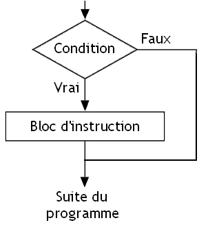
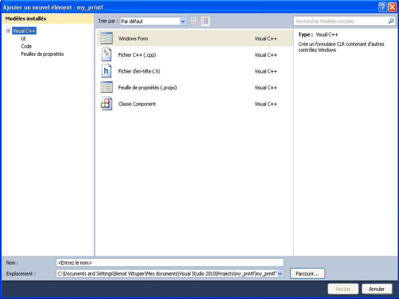

Vous souhaitez apprendre à programmer, mais vous ne savez pas comment vous y prendre ?
Alors, permettez-nous de vous souhaiter la bienvenue dans ce cours de programmation en C pour débutants. La programmation est devenue aujourd’hui incontournable, si bien qu’elle est utilisée partout. Tous les logiciels de votre ordinateur ont été programmés. Et ce cours va vous apprendre les bases de la programmation en C pour vous permettre de créer des programmes à votre tour.
Pour pouvoir suivre ce tutoriel, vous n’avez aucun prérequis ; tout sera détaillé de la manière la plus complète possible. Nous commencerons par une introduction à la programmation et au C, puis nous avancerons peu à peu dans l'univers de la programmation, tout cela grâce à des cours, des exemples, des exercices d’applications et des travaux pratiques.
PS : Si vous vous demandez ce que ce cours apporte par rapport au cours officiel sur le C de Mathieu Nebra, lisez ceci.
La programmation est un sujet qui fascine énormément. Si vous lisez ce cours, c’est que vous avez décidé de franchir le pas et de découvrir ce que c’est que programmer. Avant de commencer à apprendre quoi que ce soit sur le C et la programmation, il faudrait néanmoins se demander en quoi la programmation consiste. En effet, savez-vous réellement ce que c’est, comment programmer ou encore ce qui caractérise ce fameux langage C ? Ces questions importantes et légitimes méritent des réponses. Ce chapitre va donc faire une introduction au monde de la programmation, et plus particulièrement au langage C.
Ce tutoriel a été écrit dans un seul but : vous enseigner le langage C de la manière la plus complète, la plus rigoureuse et la plus instructive possible. Pour ce faire, le tutoriel combinera beaucoup de théorie, de connaissances importantes, de détails et de recherches en profondeur avec de la pratique par des exemples concrets, des exercices pratiques et des TP. Cette approche va réclamer de votre part des efforts puisque le tutoriel semblera parfois complexe.
Nous avons choisi cette méthode d’apprentissage, car c’est celle que nous jugeons la plus payante. Elle s’oppose à une plus rapide, qui permet certes d’acquérir des connaissances rapidement, mais qui s’avère bien souvent peu payante sur le long terme, beaucoup de programmeurs débutants étant ainsi perdus lorsqu’ils sont jetés dans la jungle de la programmation à la sortie d’un cours, n’ayant pas acquis de bonnes pratiques et de la rigueur. Nous allons donc essayer de vous enseigner non seulement un langage, mais aussi de bonnes pratiques et de la rigueur.
En résumé, ce tutoriel fera un juste mélange entre théorie, détails et recherches avec de la pratique et des exemples.
À qui est destiné ce tutoriel ?
Le tutoriel a pour but d’être accessible à n’importe qui. Que vous soyez un programmeur expérimenté, un total débutant ou que vous vouliez réviser certaines notions du C, vous êtes le bienvenu dans ce tutoriel. Les explications seront les plus claires possible afin de rendre la lecture accessible à tous.
Cependant, il y a quelques conditions. Même si nous avons conçu le tutoriel pour être clairs, il vous faut plusieurs qualités pour arriver à tenir jusqu’au bout.
De la motivation : ce tutoriel va présenter de nombreuses notions, souvent très théoriques, et qui sembleront parfois complexes. Il vous faut donc être bien motivés pour profiter pleinement de cet apprentissage.
De la logique : apprendre la programmation, c’est aussi être logique. Bien sûr, ce tutoriel vous apprendra à mieux l’être, mais il faut néanmoins savoir réfléchir par soi-même et ne pas compter sur les autres (tutoriels ou forums) pour faire le travail à sa place.
De la patience : vous vous apprêtez à apprendre un langage de programmation. Pour arriver à un sentiment de maitrise, il va falloir de la patience pour apprendre, comprendre, s’entrainer, faire des erreurs et les corriger.
De la rigueur : cette qualité, nous allons tenter de vous l’inculquer à travers ce cours. Elle est très importante, car c’est elle qui fera la différence entre un bon et un mauvais programmeur.
De la passion : le plus important pour suivre ce tutoriel, c'est de prendre plaisir à programmer. Amusez-vous en codant, c'est le meilleur moyen de progresser !
Je tiens aussi à préciser qu’un niveau acceptable en anglais est très fortement recommandé. En effet, beaucoup de cours, de forums, de documentations et autres seront en anglais. Tôt ou tard, vous serez confronté à l'anglais, il faut vous y préparer. Si vous êtes encore étudiant, cela ne vous sera que bénéfique ! Si vraiment l’anglais n’est vraiment pas votre fort, vous pouvez utiliser un dictionnaire pour vous aider.
Dernier point qui concerne les mathématiques : contrairement à la croyance populaire, un bon niveau en maths n’est absolument pas nécessaire pour faire de la programmation. Certes, ça peut aider en développant la logique, mais si les mathématiques ne sont pas votre fort, vous pourrez quand même suivre ce cours sans problèmes.
Allez plus loin
Un des concepts fondamentaux de l’apprentissage de notions informatiques sur Internet est le croisement des sources. Il permet de voir la programmation sous un angle différent. Par exemple, quelques cours de Developpez d’approches différentes sont à votre entière disposition. N’hésitez pas non plus à lire des livres sur le C, notamment le K&R, écrit par les auteurs du C. C’est un livre très complet qui pourra vous être utile.
Enfin le plus important : n’hésitez pas à programmer tout seul. Faites des exercices, modifiez les codes du tutoriel, regardez ceux des autres, participez à des projets. C’est la meilleure façon de progresser.
Comme dit en introduction, ce cours a pour but de vous présenter la programmation en C. C’est bien, mais qu’est-ce que la programmation ? Comment ça marche ? Comment en faire ?
La programmation est une branche de l’informatique qui sert à créer des programmes. Tout ce que vous possédez sur votre ordinateur sont des programmes : votre navigateur Internet (Internet Explorer, Firefox, Opera, etc.), votre système d’exploitation (Windows, GNU/Linux, etc.), votre lecteur MP3, votre logiciel de discussion instantanée, vos jeux vidéos, etc.
Les programmes expliqués en long, en large et en travers
Un programme est une séquence d’instructions, d’ordres, donnés à l’ordinateur afin qu’il exécute des actions. Ces instructions sont généralement assez basiques. On trouve ainsi des instructions d’addition, de multiplication, ou d’autres opérations mathématiques de base, qui font que notre ordinateur est une vraie machine à calculer. D’autres instructions plus complexes peuvent exister, comme des opérations permettant de comparer des valeurs, traiter des caractères, etc.
Créer un programme, c’est tout simplement créer une suite d’instructions de base qui permettra de faire ce que l’on veut. Tous les programmes sont créés ainsi : votre lecteur MP3 donne des instructions à l’ordinateur pour écouter de la musique, le chat donne des instructions pour discuter avec d’autres gens sur le réseau, le système d’exploitation donne des instructions pour dire à l’ordinateur comment utiliser le matériel et comment fonctionner, etc.
Ces instructions sont stockées dans notre ordinateur sous la forme de bits, de petites données qui valent soit 0, soit 1. Ainsi, nos instructions ne sont rien d’autre que des suites de 0 et de 1, stockées dans notre ordinateur, et que notre processeur va interpréter comme étant des ordres à effectuer. Ces suites de zéros et un sont difficilement compréhensibles pour nous humains, et parler à l’ordinateur avec des 0 et des 1 est très dur et très long. Autant vous dire que créer des programmes de cette façon revient à se tirer une balle dans le pied.
Pour vous donner un exemple, imaginez que vous devez communiquer avec un étranger alors que vous ne connaissez pas sa langue. Communiquer avec un ordinateur reviendrait à devoir apprendre le langage binaire : ça risque de prendre énormément de temps et cela serait difficile. Tout se passe comme si votre processeur parlait un langage particulier, composé de suite de zéro et d’un bien organisé, et qu’il était incapable de parler autre chose. Le langage du processeur s’appelle le langage machine. Une question doit vous venir à l'esprit : comment communiquer avec notre processeur sans avoir à apprendre sa langue ?
L’idéal serait de parler à notre processeur en français, en anglais, etc. Mais disons-le clairement : notre technologie n’est pas suffisamment évoluée, et nous avons dû trouver autre chose. La solution retenue a été de créer des langages de programmation plus évolués que le langage du processeur, plus faciles à apprendre, et de fournir le traducteur qui va avec. Ces langages de programmation plus évolués sont des sortes de langages assez simplifiés, assez proches des langages naturels, et dans lesquels on peut écrire nos programmes beaucoup plus simplement qu’en utilisant le langage machine. Grâce à eux, on peut écrire nos programmes sous forme de texte, sans avoir à se débrouiller avec des suites de 0 et de 1 totalement incompréhensibles. Il existe de nombreux langages de programmation, et le C est un de ces langages.
Reste que notre processeur ne comprend pas ces langages évolués ; il ne comprend qu’un seul langage, le sien. Pour utiliser nos langages de programmation, il faut aussi avoir une sorte de traducteur qui fera le lien entre votre langage de programmation et le langage machine du processeur. Ce traducteur va ainsi traduire du texte (écrit dans un langage de programmation évolué) en une suite de zéro et d’un que le processeur peut comprendre. Ainsi vous pourrez commander votre processeur même si vous ne parlez pas sa langue.
Pour illustrer, ce code écrit en C (que nous apprendrons à connaître) est quand même largement plus facile à comprendre qu’une suite de 0 et de 1.
#include <stdio.h>
int main(void)
{
printf("Salut !");
return 0;
}
Imaginez la même chose composée de 0 et de 1, et vous comprendrez tout l'intérêt d'un langage de programmation.
Il ne reste plus qu’à utiliser un interprète qui va traduire ce texte (un programme écrit dans notre langage de programmation) vers la langue de l’ordinateur (des suites de 0 et de 1) : le compilateur. Voici un petit schéma qui résume tout ça :
Malgré tous ces langages de programmation disponibles, nous allons dans ce tutoriel nous concentrer sur un seul langage : le langage C. Avant de parler des caractéristiques de ce langage et des choix qui nous amènent à l’étudier dans ce cours, faisons un peu d’histoire.
L'histoire du C
Le langage C est né au début des années 1970 dans les laboratoires AT&T aux États-Unis. Son concepteur, Dennis Ritchie (aujourd’hui décédé), souhaitait améliorer un langage existant, le B, afin de lui adjoindre des nouveautés. En 1973, le C était pratiquement au point, et il commença à être distribué l’année suivante. Son succès était tel auprès des informaticiens que l’ANSI en 1989, puis l’ISO en 1990 décidèrent de le normaliser, c’est-à-dire d’établir les règles officielles du langage. On parle donc de C89 / C ANSI ou bien C90 / C ISO (au choix). D’autres normes sortirent plus tard, en 1999 (on parle de C99) et en 2011 (on parle de C11).
Si vous voulez en savoir plus sur l’histoire du C, lisez donc ce tutoriel.
Pourquoi apprendre le C ?
C’est une très bonne question. Après tout, il existe tellement de langages différents, et on peut logiquement se demander pourquoi le C en particulier ? Il y a plusieurs raisons à ça.
Sa popularité : il fait partie des langages de programmation les plus utilisés. Il possède une communauté très importante et de nombreux tutoriels et documentations. Vous aurez donc toujours du monde pour vous aider. De plus, il existe beaucoup de programmes et de bibliothèques développés en et pour le C.
Sa rapidité : le C est connu pour être un langage très rapide, ce qui en fait un langage de choix pour tout programme où la vitesse est cruciale.
Sa légèreté : le C est léger, ce qui le rend utile pour les programmes embarqués où la mémoire disponible est faible.
Sa portabilité : cela veut dire qu’un programme développé en C marche théoriquement sur n’importe quelle plateforme. Il faut savoir que le C a été conçu pour la programmation système (drivers, systèmes d'exploitation, matériel embarqué, etc). Or, les plate-formes étant différents, il était difficile à l'époque d'avoir un code générique pouvant marcher sur n'importe quel environnement. La volonté des créateurs du C était donc de faire un langage permettant de produire du code portable.
Ce ne sont que quelques raisons, mais elles sont à mon gout suffisantes pour apprendre ce langage. Bien entendu, le C comporte aussi sa part de défauts. On peut citer la tolérance aux comportements dangereux qui fait que le C demande beaucoup de rigueur pour ne pas tomber dans certains « pièges », un nombre plus restreint de concepts (c’est parfois un désavantage, car on est alors obligé de recoder certains mécanismes qui existent nativement dans d’autres langages), etc. D’ailleurs, si votre but est de développer rapidement des programmes amusants, le C n’est pas du tout adapté pour ça, et je vous encourage à vous tourner vers d’autres langages comme le Python par exemple.
Le C possède aussi une caractéristique qui est à la fois un avantage et un défaut : c’est un langage plutôt de bas niveau. Cela veut dire qu’il permet de programmer en étant proche de sa machine, en cherchant à vraiment comprendre ce que l’on fait. C’est à double tranchant : c’est plus difficile et plus long, mais on en apprend beaucoup sur sa machine et on a un grand contrôle de ce que l’on fait. Cette notion de bas niveau est d’ailleurs à opposer aux langages de haut niveau, qui permettent de programmer en faisant abstraction d’un certain nombre de choses. Le développement est souvent plus facile et plus rapide, mais en contrepartie on voit moins bien le fonctionnement de la machine. Ces notions de haut et bas niveau sont néanmoins à nuancer, car elles dépendent du langage utilisé et du point de vue du programmeur.
Je termine cette partie en rajoutant quelque chose. Peut-être avez-vous entendu parler du C++. C’est un langage de programmation qui a été inventé dans les années 1980 par Bjarne Stroustrup, un collègue de Dennis Ritchie, qui souhaitait rajouter des éléments au C. Bien que très ressemblants à l’époque de sa création, ces deux langages sont aujourd’hui très différents (on ne programme pas et on ne réfléchit pas de la même façon en C qu’en C++). Ne croyez pas qu’il y a un langage meilleur que l’autre. Ils sont simplement différents. Si d’ailleurs votre but est d’apprendre le C++, je vous encourage à le faire. Contrairement à ce que l’on pense et dit souvent, il n’y a pas besoin de connaitre le C pour ça. Ce tutoriel ne se concentrera quand à lui que sur ce dernier.
La norme
Comme précisé plus haut, le C est un langage qui possède des règles. Ces règles ont été définies par des informaticiens professionnels et sont toutes regroupées dans ce que l’on appelle la norme du langage. Cette norme sert de référence à tous les programmeurs. Chaque fois que l’on a un doute ou que l’on se pose une question, le premier réflexe est de regarder dans la norme ce qui est dit. Bien entendu, la norme n’est pas parfaite et ne répond pas à toutes les questions, et ne précise pas tous les détails. Néanmoins, elle reste la référence du programmeur.
Cette norme sert aussi de référence pour les compilateurs. En effet, tous les compilateurs respectent cette norme (en règle générale), ce qui fait qu’il n’y aura pas différentes interprétations d’un même code. Cette norme est l’équivalent des règles d’orthographe, de grammaire et de conjugaison de nos interprètes. Imaginez si chacun écrivait ou conjuguait à sa guise tout ce qu'il veut. La norme sert donc à officialiser tout un tas de règles pour que tous les interprètes (et donc les compilateurs) la suivent.
Il existe plusieurs versions de la norme : le C89, le C99 et le C11. Dans ce cours, nous avons décidé de nous servir de la norme C89. En effet, même si c’est la plus ancienne et qu’elle semble restrictive à certains, elle permet néanmoins de développer avec n’importe quel compilateur sans problèmes, contrairement aux normes C99 et C11 que tous les compilateurs ne connaissent pas. De plus, il est très facile de passer aux normes plus récentes ensuite. Voici le lien vers le brouillon de cette norme. Cela signifie que ce n’est pas la version définitive et officielle de la norme, celle-ci est très chère à obtenir, alors que le brouillon est largement suffisant pour notre niveau et gratuit. Bien entendu, cette norme est en anglais.
L'algorithmique est très liée à la programmation, et elle constitue même une branche à part des mathématiques. Elle consiste à définir et établir des algorithmes.
Un algorithme peut se définir comme étant une suite finie et non-ambiguë d'opérations permettant de résoudre un problème. En clair, il s'agit de calculs qui prennent plusieurs paramètres et fournissent un résultat. Les algorithmes ne sont pas limités à l'informatique, ils existaient même avant son apparition.
L'intérêt principal des algorithmes est qu'ils sont très utiles lorsqu'ils sont en relation avec des ordinateurs. En effet, ces derniers peuvent exécuter des milliards d'instructions à la seconde, ce qui les rend bien plus rapides qu'un humain. Illustrons : imaginez que vous deviez trier une liste de 10 nombres dans l'ordre croissant. C'est assez facile et faisable en quelques secondes. Et pour plusieurs milliards de nombres ? C'est impossible pour un humain, alors qu'un ordinateur le fera rapidement.
Ce qu'il faut retenir, c'est qu'un algorithme est une suite d'opérations destinée à résoudre un problème donné. Nous aurons l'occasion d'utiliser quelques algorithmes dans ce cours, mais nous ne nous concentrerons pas dessus. Si vous voulez en savoir plus, lisez le tutoriel sur l'algorithmique pour l'apprenti programmeur.
Le pseudo-code
Pour représenter un algorithme indépendamment de tout langage, on utilise ce qu'on appelle un pseudo-code. Il s'agit de la description des étapes de l'algorithme en langage naturel (dans notre cas le français). Voici un exemple de pseudo-code :
Fonction max (x, y)
Si x est supérieur à y
Retourner x
Sinon
Retourner y
Fin fonction
Dans ce cours, il y aura plusieurs exercices dans lesquels un algorithme fourni devra être implémenté (traduit) en C. Si vous voulez vous entrainer davantage tout en suivant ce cours, je vous conseille France-IOI qui permet d'implémenter divers algorithmes en plusieurs langages dont le C. Cela pourra être un excellent complément.
Comme vous avez pu le constater, la programmation est un monde vaste, très vaste, et assez complexe. Comme il existe une multitude de langages de programmation, il faut se concentrer sur un seul d’entre eux à la fois. Dans notre cas, il s’agit du C. Ce langage, et retenez-le bien, est à la fois très puissant et complexe. Souvenez-vous bien qu’il vous faudra faire des efforts pour l’apprendre correctement.
Si vous vous sentez prêts, alors rendez-vous dans le chapitre suivant, qui vous montrera les outils utilisés par un programmeur en C.
Maintenant que les présentations sont faites, il est temps de découvrir les outils nécessaires pour programmer en C. Le strict minimum pour programmer se résume en trois points.
Un éditeur de texte : ce logiciel va servir à écrire le code source. En théorie, n’importe quel éditeur de texte suffit, mais le mieux est d’en avoir qui colore le code source, ce qui permet une relecture plus agréable ;
un compilateur : c’est le logiciel le plus important puisqu’il va nous permettre de transformer le code que l’on écrit en un fichier exécutable compréhensible par le processeur ;
un débuggerdébugger / débogueur (prononcez « débegueur ») : fondamentalement, il n’est pas indispensable, mais ce logiciel est très utile pour chasser les bugs et vérifier le comportement de son programme.
À partir de là, il existe deux moyens de récupérer tous ces logiciels : soit on les prend séparément, et dans ce cas il faut compiler par soi-même, soit on utilise un logiciel qui réunit les trois : un IDE (« Environnement de Développement Intégré » en français).
Face à la multitude de logiciels différents qui existent, ce chapitre a pour but de vous guider en vous montrant quelques logiciels, que ce soit pour compiler à la main ou avec un IDE.
Bien que de nombreux IDE soient disponibles pour Windows, nous ne parlerons que de deux d’entre eux : Code::Blocks et Visual C++, sans oublier une partie consacrée à la compilation via l’invite de commande.
Avec un IDE
Code::Blocks
Code::Blocks est un IDE gratuit et libre (vous pouvez obtenir le code source du logiciel si vous le souhaitez), qui fonctionne avec plusieurs compilateurs différents et qui n’est pas très compliqué à prendre en main. Il n’est cependant disponible qu’en anglais (bien qu’il existe des traductions incomplètes en français) ; néanmoins, avec un dictionnaire et de l’intuition, vous vous en sortirez très bien.
Pour télécharger Code::Blocks, rendez-vous sur le site officiel, dans la section « Downloads », puis dans la sous-section « Download the binary release ». Cette section vous permettra de télécharger le logiciel ; contrairement à la section « Download the source code » qui sert à télécharger le code source de Code::Blocks.
Il va falloir ensuite télécharger la version du logiciel adaptée à votre système d’exploitation.
Windows : choisissez « codeblocks-XX.XXmingw-setup.exe » pour télécharger la version de Code::Blocks pour Windows avec un compilateur intégré. Si vous choisissez la première, vous ne pourrez pas compiler vos programmes ! Je le répète donc encore une fois : choisissez la version avec mingw dans le nom.
Linux : choisissez la version qui correspond à votre distribution. Attention à ne pas confondre les versions 32 bits et 64 bits.
Mac : téléchargez le fichier proposé.
Une image pour bien comprendre :
La bonne version est entourée de rouge.
Si cependant vous êtes expérimentés et que vous souhaitez installer votre propre compilateur, vous pouvez prendre la première version.
Pour l’installation, laissez-vous guider, elle est très simple. Une fois l’installation terminée, en lançant Code::Blocks, vous devriez obtenir ceci :
Code::Blocks au démarrage
Cela vous parait compliqué ? Je vais tout vous expliquer dans quelques secondes. Avant, j’aimerais qu’on crée un projet, pour que je puisse vous illustrer tout ça. Pour ce faire, deux possibilités : ou vous cliquez sur « Create a new project » dans le menu de démarrage, ou bien vous cliquez sur « File -> New -> Project ». Dans tous les cas, vous tombez sur cette fenêtre :
Fenêtre des projets
Choisissez l’icône « Console application », entourée en gras sur l’image. Puis double-cliquez dessus ou cliquez sur le bouton « Go » pour créer un projet de type console.
Le premier menu est juste un menu informatif, cliquez sur « Next ». La page suivante vous demande quel langage vous voulez utiliser. Sélectionnez « C » puis « Next ». Vous arrivez ensuite sur cette fenêtre :
Là, il y a plusieurs champs.
Project title : c’est le nom que vous souhaitez donner à votre projet. Un même nom ne peut pas être utilisé plusieurs fois, il faut un nom différent pour chaque projet.
Folder to create project in : c’est le répertoire dans lequel le projet sera créé.
Project filename et resulting filename : ces champs sont remplis automatiquement par Code::Blocks, on ne s'en préoccupe pas.
Ensuite, dernière fenêtre :
Compiler : permet de choisir le compilateur que l’on veut utiliser. Ici, comme il n’y a que ce compilateur d’installé, on n’y touche pas.
Create "Debug" configuration : cochez cette case pour avoir un exécutable compilé en mode Debug, c’est-à-dire un programme non optimisé qui contiendra toutes les informations nécessaires pour déboguer. L’exécutable ne sera pas portable.
Create "Release" configuration : le programme est optimisé, portable et allégé puisqu’il ne possède plus les informations de débogage.
Choisir entre les deux modes importe peu pour l’instant. Il faut simplement que l’un des deux au moins soit coché. Cliquez sur « Finish » pour terminer la création du projet. Maintenant, vous devez avoir une fenêtre comme celle-ci :
Je pense que quelques explications ne seraient pas de refus.
C’est la liste des menus. Certains seront très utilisés, tandis que d’autres presque pas. Retenez que le menu « File » est l’un des plus utilisés.
Ce sont les icônes. Voici les quatre principales :
-> c’est l’icône « Build », qui sert à compiler le fichier sans le lancer ; le raccourci clavier est Ctrl + F9.
-> c’est l’icône « Run », qui lance le dernier exécutable compilé ; le raccourci clavier est Ctrl + F10.
-> c’est l’icône « Build & Run », la contraction des deux icônes précédentes : elle compile et exécute ; le raccourci clavier est F9.
-> c’est l’icône « Rebuild », qui sert à recompiler tous les fichiers ; par défaut, Code::Blocks ne les recompile pas tous (seuls ceux qui ont été modifiés sont recompilés) ; le raccourci clavier est Ctrl + F11.
C’est la zone des projets. C’est ici que vous pouvez voir tous les fichiers qui composent votre projet. Vous pouvez même avoir plusieurs projets en même temps, mais vous ne pouvez en compiler qu’un à la fois.
C’est la zone principale, car c’est ici que l’on écrit le code source.
C’est la zone de notification où apparaissent les erreurs, les messages de compilation, les messages du débogueur, ainsi que les les avertissements.
Vous pouvez voir que Code::Blocks a généré un code par défaut. Nous allons le compiler. Utilisez les icônes ou les raccourcis clavier pour se faire. Il se peut que vous obteniez un message d'erreur comme celui-ci :
"My-program - Release ou Debug" uses an invalid compiler. Skipping...
Nothing to be done.
Si cela vous arrive, ne paniquez pas. Il y a deux causes possibles.
Vous utilisez Code::Blocks et vous avez téléchargé la version sans compilateur : dans ce cas, retournez sur le site officiel et prenez la version avec MinGW.
Vous avez la bonne version et dans ce cas c’est le chemin vers le compilateur MinGW qui est incorrect : rendez-vous dans « Settings -> Compiler&Debugger -> Toolchain executable », cliquez sur « … », et saisissez le répertoire « MinGW » dans votre installation (si vous avez installé Code::Blocks avec MinGW, celui-ci se trouve dans le répertoire de Code::Blocks), puis cliquez sur OK.
Une fois le problème réglé (si problème il y avait), le programme est compilé et un message apparait dans la console :
Hello world!
Process returned 0 (0x0) execution time : x.xxx s
Press any key to continue.
La première ligne correspond à ce qu'affiche le programme. Les deux lignes suivantes sont elles spécifiques à Code::Blocks. La première indique à l'utilisateur si le programme s'est bien déroulé ou s'il y a eu erreur et le temps écoulé depuis le lancement. La seconde demande d'appuyer sur une touche pour continuer. En effet, sans cette dernière ligne, nous n'aurions pas pu voir le programme se lancer qu'il serait déjà terminé. Ce comportement est spécifique à Windows.
Visual C++
Visual C++ est un IDE édité par Microsoft et très efficace, car adapté pour Windows. Il possède aussi un débogueur puissant. Bien qu’il ne soit pas libre, Visual C++ est gratuit (dans sa version express) et disponible en de nombreuses langues, dont le français. Il suffit tout simplement d’enregistrer le logiciel pour l’utiliser sans limites de temps ; c’est gratuit et rapide, vous n’avez besoin que d’une adresse mail.
Pour télécharger Visual C++, rendez-vous sur le site de Microsoft. Cliquez ensuite sur l’onglet « Visual C++ 2010 Express ». Vous arriverez sur la page de téléchargement. Sélectionnez la langue que vous voulez puis cliquez sur « Télécharger ».
Le programme d’installation va se charger de tout télécharger et tout installer. À un moment, vous devrez redémarrer. Acceptez, et une fois le redémarrage terminé, l’installation finira tranquillement.
Comme pour Code::Blocks, j’aimerais vous montrer la création d’un projet avant de vous expliquer l’image. Pour cela, deux possibilités : cliquez sur « Nouveau projet » au démarrage, ou bien « Fichier ->Nouveau -> Projet ». Vous devriez obtenir cette fenêtre :
Projet 1
Pour créer un projet en console, sélectionnez « Application console Win32 », et donnez un nom à votre projet dans la case « Nom » en bas de la fenêtre. Une fois ceci fait, vous arrivez sur une fenêtre à propos des paramètres de votre projet. Cliquez sur « Suivant » en bas ou « Paramètres de l’application » dans la colonne à gauche. Vous devez tomber sur une fenêtre comme celle-ci :
Projet 2
Sélectionnez « Projet vide » pour commencer avec un projet vierge, sinon Visual va créé un projet avec des fichiers dont nous ne voulons pas.
Pour rajouter des fichiers, la manœuvre est très simple : faites un clic droit sur l’onglet « Fichiers sources » dans la colonne de gauche, puis allez dans « Ajouter -> Nouvel élément… ». Une petite image pour bien comprendre :
Fichier 1
Une nouvelle fenêtre apparait alors pour vous demander quel type de fichier il faut ajouter au projet. Cliquez sur « Fichiers C++ (.cpp) » (même si ce type de fichier est normalement réservé au C++), et appelez votre fichier main.c. Le fichier est maintenant ajouté, comme vous pouvez le voir.
Et si nous examinions un peu les menus de Visual C++ ? Vous devriez normalement avoir une fenêtre comme celle-ci :
La barre d’outils : elle contient tous les menus et les raccourcis (comme la compilation, la génération, etc), certains seront plus utilisés que d’autres.
La zone principale : c’est ici que l’on écrira le code.
L’explorateur de solutions : cette zone permet de gérer les fichiers qui composent notre projet. Visual y organise les fichiers en trois types : les fichiers sources, les fichiers ressources et les fichiers d’en-tête (nous verrons tout ça en temps voulu).
La zone de notification : c’est dans cette zone qu’apparaissent les erreurs, les informations du débogueur, les avertissements et les messages de compilation.
Voici quelques raccourcis claviers pratiques que vous serez souvent amenés à utiliser :
F5 : lance l’exécutable en appelant le débogueur ;
Ctrl + F5 : lance l’exécutable sans appeler le débugger ;
F7 : génère une solution (compile) sans lancer le programme ;
Ctrl + Alt + F7 : régénère une solution.
Comme une liste de tous les raccourcis serait trop longue, voici la liste officielle (en anglais).
Essayons de mettre en pratiques quelques uns de ces raccourcis en compilant un code minimal. Je vous fournis un code source que nous examinerons dans le chapitre suivant.
#include <stdio.h>
int main(void)
{
printf("Hello world!\n");
return 0;
}
Pour le compiler, on doit faire F7 puis Ctrl + F5. Cependant, pour allez plus vite, on peut faire directement Ctrl + F5. Si vous utilisez cette combinaison de touches, il se peut que vous tombiez sur une fenêtre semblable à celle-ci :
Projet obsolète
Cela signifie qu'il y a eu des modifications dans le code et que la solution n'a pas été régénérée (on a pas recompilé). Dans ce cas, cliquez sur « Oui » pour régénérer la solution, ou cliquez sur « Non » pour lancer la dernière solution générée (le dernier exécutable compilé).
Avec l’invite de commande
Même si la programmation à l’aide d’un IDE peut être pratique, certains préfèrent néanmoins programmer à la main, c’est-à-dire s’occuper eux-mêmes de la compilation. Pour cela, ils utilisent l’invite de commande. Si jamais cette méthode vous tente et que vous avez les compétences nécessaires pour vous servir de l’invite, lisez cette partie.
Le compilateur
Le plus important dans tout ça est le compilateur. Je vous propose donc de télécharger MinGW, qui est une adaptation pour Windows du compilateur GCC, je vous le rappelle.
Rendez-vous sur le site de MinGW, puis dans le cadre de gauche dans la section « Downloads ». Pour se faciliter le travail, on va télécharger l’installateur. Pour cela, cliquez sur le lien en haut de la page « Looking for the latest version? Download mingw-get-inst-xxxxxxxx.exe (xxx.x kB) ».
Exécutez le programme. Arrivés à la partie « Repository Catalogues », choisissez « Use pre-packaged repository catalogues » si vous voulez utiliser les outils fournis avec l’installateur, ou bien « Download latest repository catalogues » si vous voulez que l’installateur télécharge les tout derniers fichiers.
Ceci fait, acceptez la licence (lisez-la si vous en avez le courage), puis sélectionnez le dossier où vous souhaitez que MinGW soit installé. Ensuite, il faut choisir les composants que l’on veut installer. Normalement, seuls « MinGW Compiler Suite » et « C Compiler » sont cochés. Les autres cases ne nous intéressent pas puisque elles servent à installer des compilateurs pour d'autres langages. Laissez ensuite le programme finir son travail.
Maintenant il reste une dernière étape : configurer la variable d'environnement (PATH). Cette étape va permettre à l'Invite de Commande de comprendre les commandes de compilation de MinGW, sans quoi il serait impossible de compiler un programme.
Sous Windows XP et antérieur, il faut faire un clic-droit sur « Poste de travail » puis choisir « Propriétés ». Dans la fenêtre qui s'ouvre, cliquez sur « Avancés » puis sur « Variables d'environnement ».
Sous Windows Vista et Seven, il faut faire un clic-droit sur l'icône « Ordinateur » dans le menu Démarrer ou bien sur « Poste de travail ». Ensuite, cliquez sur « Paramètres systèmes avancés ». Dans la nouvelle fenêtre qui s'ouvre, allez dans « Paramètres systèmes avancés » et cliquez sur « Variable d'environnement ».
Dans la partie Utilisateur courant, créez une nouvelle variable et rentrez %PATH%;C:\MinGW\bin (le chemin après le point-virgule peut varier en fonction de où vous avez décidés d'installer MinGW, l'important est de bien avoir le répertoire bin à la fin).
L’éditeur de texte
L’éditeur de texte va nous permettre d’écrire notre code source et de l’enregistrer pour que le compilateur fasse son travail. L’idéal est d’avoir un éditeur de texte facile à utiliser et qui colore le code source, ce qui permet une meilleure relecture. Si jamais vous avez déjà un éditeur de texte et que vous l'appréciez, ne changez pas, il marchera très bien lui aussi.
Si cependant vous ne savez pas lequel prendre, je vais vous aider. Personnellement, j’utilise Notepad++, qui est simple, pratique et efficace. Pour le télécharger, rendez-vous sur la page de téléchargement, et sélectionnez « Notepad++ vX.X.X.X Installer » pour télécharger l’installateur. Pour l'installation je vous laisse faire, elle est facile.
Compiler à la main avec l’invite de commande
Testons tout ce que l’on vient d’installer en compilant un petit code simple que nous expliquerons dans le chapitre suivant.
#include <stdio.h>
int main(void)
{
printf("Hello world!\n");
return 0;
}
Copiez-collez ce code dans l’éditeur de texte, puis enregistrez le fichier sous le nom main.c. Ensuite, déplacez-vous dans les répertoires à l’aide de l’invite pour arriver dans le répertoire qui contient le fichier source.
Nous allons compiler ce fichier à l’aide d’une commande : gcc main.c. Cette commande va transformer le fichier spécifié en exécutable. Si vous regardez le répertoire de nouveau, vous remarquerez d’ailleurs qu'un fichier .exe est apparu. C’est le résultat de la compilation. Si vous le lancez, vous verrez le résultat à l'écran :
C:\Programmation>gcc main.c
C:\Programmation>main.exe
Hello world
Nous apprendrons dans le chapitre suivant pourquoi le programme affiche un message à l’écran.
Il existe de nombreuses options de compilation pour MinGW que tout un cours entier ne pourrait pas aborder. Si vous souhaitez découvrir ces options, vous pouvez jeter un œil à la documentation officielle. Même si cette page traite de GCC, la très grande majorité des options marchent pour MinGW.
Le C étant très lié à UNIX, il existe de nombreux outils disponibles pour ces deux systèmes d’exploitation. Je vais vous en présenter quelques-uns.
Les IDE
Sous GNU/Linux et UNIX, il y a évidemment de nombreux IDE disponibles. Si vous souhaitez utiliser un IDE, je vous conseille Code::Blocks. Vérifiez dans vos dépôts s’il est disponible, et si jamais il ne l’est pas, rendez-vous sur la page de téléchargement du site officiel de Code::Blocks. Une fois que vous l’avez installé, regardez plus haut dans ce tutoriel pour vous familiariser avec lui.
Même si les IDE sont pratiques, beaucoup de programmeurs préfèrent compiler à la main sous ces plateformes. Je vous recommande donc de lire également la partie suivante, même si vous ne pensez pas compiler à la main.
La compilation en ligne de commande
La compilation à la main est prônée par de nombreux programmeurs experts. On dit souvent que ça présente de nombreux avantages. Cependant, pour le programmeur débutant, c’est légèrement différent. En effet, la compilation manuelle présente des avantages et des défauts :
rapide une fois prise en main et légère ;
permet d’apprendre plus de choses, voire même d’apprendre plus rapidement certains concepts ;
on doit cependant tout faire soi-même ;
parait compliqué et hostile ;
il faut savoir manipuler le terminal.
Le troisième argument est en orange puisque le fait de tout faire soi-même est très intéressant et est donc un avantage conséquent. Cependant, pour certains cette technique est assez difficile. Faire tout soi-même permet au programmeur d’avoir le contrôle absolu sur ce qu’il fait, contrairement à certains IDE qui dissimulent certaines fonctionnalités intéressantes par exemple.
Je vais vous montrer brièvement l’utilisation de l’un des plus célèbres compilateurs : GCC !
Pas si vite
Avant de vous montrer l’utilisation de GCC, il faut d’abord avoir un code source sous la main. Pour créer un code source sans IDE, il faut utiliser un éditeur de texte et non pas un traitement de texte !
Un éditeur de texte est un programme qui permet de modifier des fichiers quelconques (tout est fichier, en tout cas sous les GNU/Linux et UNIX, donc avec un éditeur de texte, vous pouvez tout modifier ; cependant, on préfère un éditeur de texte pour programmer, en effet aucune personne saine d’esprit n’irait créer un fichier *.png à la main). :p
Un traitement de texte comme LibreOffice Writer permet non seulement de modifier des fichiers textes, mais offre la possibilité de les mettre en forme, c’est-à-dire mettre en gras du texte, changer la police, ajouter des images, etc.
Il existe des éditeurs de textes graphiques et des éditeurs de textes en console. Voici quelques-uns des plus célèbres et des plus utiles pour un programmeur :
jEdit est un très bon éditeur de texte graphique spécialement adapté à la programmation. Vim et Emacs sont des éditeurs de texte extrêmement puissants en pratique, mais assez compliqués, surtout pour un débutant ; ne les laissez pas de côté pour autant, ils ne peuvent que vous être utiles.
Maintenant, créez un fichier test.c (que vous pouvez mettre dans un dossier nommé « prog » dans votre home par exemple) contenant le code suivant :
#include <stdio.h>
int main(void)
{
printf("Hello world!\n");
return 0;
}
Inutile de préciser qu’il faut l’enregistrer. Concernant le code, je vous l’expliquerai en détail dans le chapitre suivant. ;)
Compiler avec GCC
Afin de créer l’exécutable à partir du code source précédent, faites ceci :
gcc test.c
Ou bien encore :
gcc *.c # Le joker * permet de raccourcir la commande.
C’est à cet instant que la magie opère : l’exécutable nommé a.out s’est créé ! Pour le lancer, opérez ainsi :
./a.out
C’est bien, je vous l’accorde, mais le nom de l’exécutable n’est pas forcément de votre gout, j’imagine. Vous pouvez le modifier avec l’option -o :
gcc test.c -o mon_executable
Comme vous devez vous en douter, il existe énormément d’options de compilation différentes, si bien que je ne peux pas toutes les lister. Ainsi, je vous renvoie vers ce tutoriel qui vous en apprendra de nombreuses très utiles, ainsi que vers la documentation officielle. Ces derniers abordent cependant certaines techniques du langage C que vous ne connaissez pas encore. N’hésitez pas à les consulter au fur et à mesure de votre apprentissage.
GCC est surement le compilateur de plus connu dans le monde des Linuxiens et Unixiens, mais il en existe bien entendu d’autres comme Comeau C++ par exemple. Il faut cependant savoir que GCC reste le compilateur le plus utilisé et surement le plus fiable.
Sous Mac OS, vous avez la possibilité d’utiliser un IDE ou la ligne de commande.
Avec un IDE
Plusieurs IDE existent sous Mac OS, par exemple Code::Blocks. Cependant, ce dernier étant assez bogué sur Mac, je vous déconseille fortement de l’utiliser. Nous allons utiliser l’IDE fourni par Apple qui se trouve être le plus complet et le plus puissant : Xcode. Il est gratuit, cependant il est en anglais (au même titre que Code::Blocks). Si vous êtes anglophobe, ne vous inquiétez pas, vous pouvez très bien vous en sortir ! Avec un peu de volonté et un petit dictionnaire, vous devriez vous en sortir très bien.
Premièrement, il va falloir télécharger Xcode. Si vous êtes sous Mac OS X Lion, vous n’avez qu’à aller sur le Mac AppStore (menu « Pomme > App Store ... ») et télécharger Xcode. Si vous êtes sous une version antérieure, il faudra vous rendre sur le site de développeur d’Apple : Apple Developer Connection. Il faudra ensuite vous rendre sur le Mac Dev Center puis dans « Additional download », vous cliquerez sur « View all downloads ». Quand vous aurez la liste, il suffit de chercher la version 3 de Xcode (pour Leopard et Snow Leopard) ou 2 pour les versions encore antérieures (Tiger). Vous pouvez aussi utiliser votre CD d’installation pour installer Xcode (sauf pour Lion). Seule la version 4 de Xcode sera présentée ici.
Une fois le téléchargement terminé, vous aurez un fichier nommé « Install Xcode.app », lancez l’application et cliquez sur « Install » puis acceptez les conditions d’utilisation. Votre mot de passe administrateur va vous être demandé. L’installation dure un certain temps, allez prendre un café en attendant.
Installation
Maintenant que Xcode est installé, vous pouvez supprimer le fichier « Install Xcode.app », ça vous libèrera quelques Go d’espace disque.
Lancez Xcode maintenant. S’il n’est pas présent dans le dock ou si vous l’en avez supprimé par erreur, vous pourrez toujours retrouver l’application dans le menu /Developer/Applications.
Je pense que c’est assez explicite, pas besoin de trop m’attarder là-dessus. Cliquez sur « Create a new Xcode project », puis sélectionnez « Command Line Tool » dans la partie « Application » de « Mac OS X » sur la partie gauche puis cliquez sur « Next ».
Projet 1
Dans le champ « Product Name », entrez simplement le nom de votre projet. Dans le champ « Company Identifier », vous pouvez mettre votre pseudo par exemple (à moins que vous apparteniez à une entreprise, dans ce cas-là, il faudrait mettre le nom de votre entreprise). Choisissez bien « C » dans le champ « Type », puis cliquez sur « Next ».
Dans la fenêtre suivante, vous devrez sélectionner le chemin vers lequel vous allez mettre votre projet. Xcode crée un dossier pour votre projet du nom que vous avez entré. Votre projet s’ouvre automatiquement. Vous devriez avoir une fenêtre qui ressemble à ça :
Principale
Une petite présentation s’impose. Je vous ai entouré les 4 parties principales qui consistent l’interface, ainsi que 2 autres en haut de la fenêtre.
La partie en haut à droite, nommée « View », sert à afficher ou masquer les parties numérotées (les numéros ont été rajoutés pour bien se repérer). Vous pouvez masquer la partie 4, elle ne nous servira à rien. Il arrivera que la partie 3 ne s’affiche pas, quand vous lancez un programme qui n’affiche rien par exemple, il vous suffira de cliquer sur le bouton numéroté 3 (toujours dans la partie View). La partie 1 reste toujours visible en règle générale.
La partie en haut à gauche contient 4 boutons. Le bouton « Run » (raccourci : Cmd + R) est celui que vous utiliserez le plus souvent, il permet de compiler puis de lancer votre programme. Le bouton « Stop » permet d’arrêter votre programme à tout moment. Le bouton « Scheme » ne nous intéresse pas (il permet de changer quelques options de compilation, de changer de target, etc.). Le bouton « Breakpoints » sert à activer/désactiver les points d’arrêt. C’est utile si vous utilisez le débogueur.
Dans la partie 1, vous avez 7 onglets tout en haut. Le premier onglet sert à voir l’arborescence de votre projet (fichiers, ressources, etc.). Le 4ème onglet (en forme de
) sert à voir les erreurs et warnings que vous pourrez avoir pendant votre codage. Les autres onglets ne nous intéressent pas. Vous pouvez changer d’onglet en utilisant les raccourcis Cmd + 1 à 7 en fonction de l’onglet que vous voulez choisir.
La partie 2 est votre éditeur de texte (il affiche aussi les images, etc., je ne vais pas entrer dans les détails). C’est ici que vous allez placer votre code. Si vous avez plusieurs fichiers, sélectionnez le fichier dans la partie 1 et éditez-le dans la partie 2. Vous pouvez ouvrir des onglets (comme sur les navigateurs Internet) en utilisant le raccourci Cmd + T. Ce qu’il faut savoir, c’est que pendant que vous tapez votre texte, vous aurez des propositions qui vous seront faites pendant que vous tapez le mot. C'est ce qu’on appelle l’autocomplétion. Ça permet d’éviter de taper tout le mot. Pour valider, il suffit d’appuyer sur Enter ou Tab. Si vous voulez « forcer » l’apparition de l’autocomplétion, vous pouvez appuyer sur la touche Echap. Xcode vous montre vos erreurs en temps réel, ce qui vous permet de vous rendre compte de vos erreurs de syntaxe tout de suite.
La partie 3 contient la pseudo-console (partie noire de droite) et la zone de débogage (à gauche et la ligne du haut avec les flèches). Ce qui nous intéresse est la partie de droite, c’est là que vous allez exécuter vos programmes ! Pour enlever la partie de débogage, il suffit de cliquer sur le bouton juste à droite du bouton « Clear ». Vous pouvez aussi enlever les messages du débogueur (je vous le déconseille) en cliquant sur « All Output » et en sélectionnant « Target Output ».
La partie 4 ne nous intéresse pas, vous pouvez la masquer comme indiqué plus haut.
Tentons maintenant de compiler notre premier code que voici :
#include <stdio.h>
int main(void)
{
printf("Hello world!\n");
return 0;
}
Essayez de compiler ce code. Vous devriez voir s'afficher à l'écran quelque chose comme ceci :
GNU gdb 6.3.50-20050815 (Apple version gdb-1708) (Mon Aug 15 16:03:10 UTC 2011)
Copyright 2004 Free Software Foundation, Inc.
GDB is free software, covered by the GNU General Public License, and you are
welcome to change it and/or distribute copies of it under certain conditions.
Type "show copying" to see the conditions.
There is absolutely no warranty for GDB. Type "show warranty" for details.
This GDB was configured as "x86_64-apple-darwin". tty /dev/ttys000
sharedlibrary apply-load-rules all [Switching to process 679 thread 0x0]
Hello world! Program ended with exit code: 0
Toutes ces lignes ont été ajoutées par le compilateur automatiquement et ne nous intéressent pas vraiment. La dernière ligne affiche cependant le message Hello world! ainsi que le résultat de l'exécution.
En ligne de commande
Ça peut vous paraître étrange, mais le plus simple pour installer les outils pour la ligne de commande est d’installer Xcode ! Je vous invite donc à installer Xcode comme présenté ci-dessus (et éventuellement les Xcode Tools si vous utilisez une version plus ancienne).
Une fois Xcode installé, allez dans le dossier « /Applications/Utilitaires » et lancez l’application « Terminal.app ». Pour l’éditeur de texte, vous pouvez choisir celui que vous voulez (emacs, vim, nano, etc.). Pour compiler, vous avez le choix : gcc, clang, llvm-gcc.
Pour l’utilisation de tout ça, reportez-vous à la partie Linux juste au-dessus.
Ce chapitre vous a fait découvrir quelques-uns des outils utilisés lorsque l’on programme en C, mais il en existe beaucoup d’autres que vous aurez peut-être l’occasion de découvrir un jour. Néanmoins, le choix importe peu puisque le résultat est le même : un fichier en langage machine compréhensible par le processeur (c’est là qu’on dit merci à la norme, parce que sans elle, le comportement varierait en fonction du logiciel utilisé). Quelle que soit votre méthode, je vous encourage à la découvrir en trifouillant un peu.
Le chapitre suivant va nous faire découvrir le C, et vous pourrez commencer à pratiquer en compilant et en décortiquant un code écrit en langage C.
Maintenant que vous êtes parés, il est temps de découvrir le langage C à travers du code. Dans ce chapitre, nous allons nous familiariser avec la programmation en découvrant non seulement des éléments spécifiques au C, mais également des éléments communs à tous les langages de programmation. Lisez attentivement ce chapitre, il vous présentera de nombreux éléments nouveaux et du vocabulaire qui vous est peut-être inconnu.
Avant de commencer à programmer, il faut aussi définir ce que l’on va programmer, le type de programme que l’on va réaliser. Il existe en effet deux types de programmes : les programmes graphiques et les programmes en console.
Les programmes graphiques sont les plus courants et les plus connus puisqu’il n’y a pratiquement qu’eux sous Windows ou Mac OS X par exemple. Vous en connaissez énormément, peut-être sans le savoir : le lecteur de musique, le navigateur Internet, le logiciel de discussion instantanée, la suite bureautique, les jeux vidéos, ce sont tous des programmes graphiques, ou programmes GUI. En voici un exemple sous GNU/Linux :
Cependant, écrire ce genre de programmes demande beaucoup de connaissances, il faut savoir manier des bibliothèques, connaitre plusieurs notions; bref, savoir programmer. C’est trop compliqué pour nous. Il faut donc se rabattre sur le deuxième type de programme : les programmes en console.
Les programmes console sont les premiers programmes, apparus en même temps que l’écran. Ils étaient très utilisés dans les années 1970 / 1980 (certains d’entre vous se souviennent peut-être de MS-DOS), mais ont fini par être remplacés par une interface graphique avec la sortie de Windows et de Mac OS. Cependant, ils existent toujours, et redeviennent quelque peu populaires avec GNU/Linux.
Ce sera le type de programme que nous allons apprendre à créer. Rassurez-vous, quand vous aurez fini le tutoriel, vous aurez les bases pour apprendre à utiliser d’autres bibliothèques, vous pourrez ainsi créer des programmes graphiques. Tout est possible.
Dans le chapitre précédant, nous avons installé les outils nécessaires à la compilation et nous avons compilé notre premier code source. Il est temps de découvrir plus en détail ce code et de comprendre ce qu'il signifie. Petite touche culturelle : ce code minimal a été créé par Dennis Ritchie, l’inventeur du C. Aujourd'hui beaucoup d’IDE, peu importe le langage, proposent un code semblable à celui-ci pour démarrer.
Je remets ce code ici pour que tout le monde aie le même :
#include <stdio.h>
int main(void)
{
printf("Hello world!");
return 0;
}
Copiez-collez ce code pour que vous et moi ayons le même, puis sauvegardez. Même si c’est un minuscule projet, c’est une bonne habitude à prendre qui peut parfois vous épargner des problèmes de fichiers perdus.
#include
Cette ligne se situe tout en haut du programme.
#include <stdio.h>
C'est une directive de préprocesseur, facilement reconnaissable car elles commencent toutes par un #. Dans notre cas, elle sert à charger des fichiers qui contiennent du code tout prêt pour réaliser de nombreuses actions (comme afficher un message, récupérer des informations, quitter le programme, lire un fichier, etc). En effet, sans ces fichiers, appelés fichiers d’en-tête (en anglais, on parle de headers), le C ne sait quasiment rien faire. On dit que c'est un langage modulaire.
L’ensemble de ces fichiers d'en-tête est appelé bibliothèque (de l'anglais « library »). Le mot « librairie » est plus court, mais il n'est pas correct car il s'agit d'un anglicisme.
Dans notre cas, nous ne chargeons qu'un seul fichier d'en-tête : stdio.h, qui signifie « Standardinput output », soit « Entrée-sortie standard ». Ce fichier d'en-tête va nous permettre de communiquer avec l'utilisateur en affichant des messages à l'écran et en récupérant des informations.
int main(void)
C’est le cœur du programme :
int main(void)
{
}
Ce bout de code est appelé fonction. Un programme écrit en C n’est composé pratiquement que de fonctions : c’est un bout de code qui sert à donner des instructions à l’ordinateur. Ainsi, on peut créer une fonction calculer_racine_carree qui calculera la racine carrée d’un nombre. Vous verrez plus tard dans votre apprentissage qu’un programme C est constitué d’un tas d’autres choses, mais surtout de fonctions.
Notre fonction s’appelle main (prononcez « mèïne »). C’est la fonction de base commune à tous les programmes en C, le point d’entrée du programme, son cœur. Le programme commence et finit toujours par elle. Bien sûr, nous n’écrirons pas tout le code dedans, ce serait impossible à entretenir et causeraient trop de problèmes pour de gros projets. Au contraire, elle déléguera le travail, mais on la retrouvera toujours.
Une fonction est délimitée par des accolades ({ et }). Après les accolades il n’y a rien, car pour l’instant nous n’avons que la fonction main. À noter que la dernière accolade est suivie d’une ligne vide. Elle ne sert à rien, mais il faut la mettre quand même.
À l’intérieur des parenthèses, il y a le mot « void ». Ce mot-clé signifie « Je ne veux pas de paramètres ». Il est en effet possible de donner des paramètres à la fonction main, mais ce n'est pas de notre niveau.
Les instructions
Les deux lignes suivantes qui composent notre programme sont des instructions : ce sont des ordres donnés à l’ordinateur pour qu’il fasse quelque chose de précis. Tout programme est composé d’une suite d’instructions que l’ordinateur exécute. Dans notre cas, ces instructions sont les suivantes :
printf("Hello world!");
return 0;
La première de nos deux instructions est la suivante :
printf("Hello world!");
Cette instruction appelle une fonction dont le but est d’afficher à l’écran le message entre les guillemets "" et dans notre cas, comme nous l’avons vu en compilant, elle affiche "Hello world!".
Revenons un instant sur ce que j’ai dit : « cette instruction appelle une fonction ». J’ai pourtant dit plus haut qu’il n’y avait que la fonction main. En fait, printf est une fonction toute prête, inclue et utilisable grâce aux directives de préprocesseur dont je vous ai parlé. Et la fonction main appelle la fonction printf. C’est comme ça en C : main appelle des fonctions qui à leur tour vont appeler d’autres fonctions, etc.
La deuxième instruction est la suivante :
return 0;
Cette instruction, qui clôt quasiment toutes les fonctions, sert à retourner quelque chose. Dans notre cas elle retourne 0. En retournant cette valeur, on indique que le programme a bien marché. Par convention, les programmeurs utilisent 0 pour signifier que tout a bien marché, et une autre valeur pour indiquer une erreur.
Pour l’instant, nous n’avons présenté que le code C minimal. Néanmoins, il existe des notions très importantes et communes à tous les langages de programmation, et nous allons vous les présenter, en les appliquant au C bien entendu. Soyez donc concentré, cette partie est basique, mais importante pour la suite.
Les mots-clés
Les mots-clés sont des mots spéciaux, réservés par le compilateur, que l’on ne peut pas utiliser comme on veut. Ils servent à déclarer des variables, concept que l’on découvrira dans le chapitre suivant, à préciser des attributs, et réaliser d’autres actions encore. Le C a réservé 32 mots-clés, que voici :
Citation : Norme C89 — A.1.1.2 Keywords
auto double int struct
break else long switch
case enum register typedef
char extern return union
const float short unsigned
continue for signed void
default goto sizeof volatile
do if static while
Nous les verrons tous au fur et à mesure de la progression de ce cours. Certains vous seront plus utiles que d’autres, mais tous ont un rôle.
D’ailleurs, ces mots-clés sont colorés par votre IDE. Cela permet au programmeur de mieux voir, et disons-le, c’est toujours plus joli que du code entièrement en noir. :)
Les opérateurs
Les opérateurs sont des symboles à la base des expressions (nous verrons plus bas de quoi il s’agit). Ils permettent de faire des opérations comme l’addition, la multiplication, la comparaison de deux valeurs, l’opposé d’une valeur, etc. De même qu’en mathématiques, tous n’ont pas la même priorité : certains passent avant d’autres.
Vous noterez que sizeof est à la fois un mot-clé et un opérateur.
Les opérateurs peuvent être classés en C en sept catégories :
les opérateurs arithmétiques ;
les opérateurs d’affectation ;
les opérateurs logiques ;
les opérateurs de comparaison ;
l’opérateur conditionnel ;
les opérateurs bit-à-bit ;
et quelques opérateurs inclassables.
Nous examinerons toutes ces catégories au fur et à mesure que nous progresserons dans le tutoriel. Comme pour les mots-clés, vous en utiliserez certaines plus que d’autres, mais toutes ont leur utilité.
Expressions et instructions
La différence entre les deux notions est un peu subtile et conduit parfois à des confusions. Une expression est évaluée et produit un résultat. Les lignes de code suivantes sont toutes des expressions.
"Hello world!"
2 + 3
10 > 2
Généralement, une expression ne peut être écrite seule, sans contexte autour. Cela correspondrait en français à énoncer un sujet sans le verbe qui va derrière.
Une instruction, quant à elle, est un ordre qui permet d’exécuter telle ou telle action. Pour vous aider, chaque instruction peut se traduire par une phrase verbale en français.
printf("Hello world!"); /* Affiche « Hello world! ». */
x = 2; /* Affecte la valeur 2 à x. */
Toutes les instructions se terminent par un point-virgule (nous apprendrons au fur et à mesure les quelques-unes qui n’en requièrent pas).
La frontière entre instruction et expression est assez floue puisqu’une instruction peut être constituée de nombreuses expressions. Le code ci-dessous est un exemple d’une instruction qui est aussi une expression.
x = 2 + 3;
On donne en effet un ordre à l’ordinateur (« Affecte la valeur 2 + 3 à x »), mais c’est aussi une expression qui produit la valeur 5 comme résultat. Vous verrez qu’en C, la majorité des lignes de code sont des instructions-expressions. C’est ce qui s’appelle la programmation impérative. C’est le choix des concepteurs du langage, mais ce n’est pas la seule possibilité (il en existe d’autres, mais ça ne nous concerne pas en tant qu’utilisateurs du C).
Les blocs d’instructions
Un bloc d’instructions est formé d’une suite d’instructions délimitée par des accolades, et tout ce qu’il y a entre les accolades est par conséquent à l’intérieur d’un bloc d’instructions. La fonction main est par exemple suivie d’un bloc d’instructions composé de deux instructions.
Les séparateurs
Lorsque l’on écrit, on met des espaces entre les mots pour rendre le tout plus clair. Pour la programmation, c’est pareil. On insère des espaces et des retours à la ligne dans un code source pour le rendre plus clair et plus lisible. Par exemple, les deux codes ci-dessous sont identiques pour le compilateur, mais le second est plus lisible pour le programmeur que le premier.
int x=0,y,rep;
int x = 0, y, rep;
Ce dernier point m’amène donc à l’indentation.
L’indentation
L’indentation est vraiment quelque chose de très important. Elle consiste en l’ajout de tabulations ou d’espaces dans un code source. Un code bien indenté est un code clair et agréable à lire. Le style d’indentation définit comment les programmeurs se débrouillent afin de faire ressortir du code.
Parce qu’un code vaut 1000 mots :
#include<stdio.h>
int main(void)
{ printf("Hey !\n");
printf("Bien ?");
return 0;}
Il existe de nombreux styles d'intendation différents. C'est à vous de choisir celui que vous préférez, et surtout de vous y tenir. Ce cours utilisera quant à lui le style Allman (ou style ANSI).
Il faut aussi que vous sachiez qu’il existe une règle concernant le nombre de colonnes (de caractères entre autres) à ne pas dépasser par ligne. C’est une très ancienne règle, qui limite le nombre de caractères par ligne à 80. Vous n’êtes pas obligé de la suivre, loin de là. Mais sachez que certains l’affectionnent encore, et ne soyez pas surpris si certains codes suivent cette règle. Dans ce tutoriel, ce ne sera pas le cas.
Les commentaires
Il est souvent nécessaire de commenter son code source pour décrire des passages un peu moins lisibles ou tout simplement pour offrir quelques compléments d’information au lecteur du code. Un commentaire est ignoré par le compilateur : il disparait et n’est pas présent dans l’exécutable. Il ne sert qu’au programmeur et aux lecteurs du code.
Un commentaire en C est écrit entre les signes /* et */ :
/* Ceci est un commentaire */
Il peut très bien prendre plusieurs lignes :
/* Ceci est un commentaire qui
prend plusieurs lignes. */
Le plus dur quand on utilise les commentaires, c’est de trouver un juste milieu : trop de commentaires tue le commentaire, et bien souvent la grande majorité des commentaires sont inutiles. À l’inverse, pas assez de commentaires peuvent rendre la relecture du code plus difficile, surtout pour du code compliqué.
Pour trouver ce juste milieu, il faut savoir plusieurs choses. Premièrement, pas besoin de commenter chaque ligne : si certaines instructions sont évidentes, les commenter sera superflu. Deuxièmement, essayer de faire des blocs de commentaires donnant une explication générale plutôt que de commenter chaque ligne une à une. Les commentaires doivent servir à décrire quelque chose de flou, ne vous sentez donc pas poussés à en mettre partout.
L’idée de base est que les commentaires doivent aider le lecteur et éviter de redire ce que le code dit.
Voilà à quoi ressemblerait notre code (excessivement) commenté :
/* Directive de préprocesseur qui permet de charger des fonctions utiles */
#include <stdio.h>
/* La fonction principale */
int main(void)
{
/* Et des instructions */
printf("Hello world!\n");
return 0;
}
/* Fin du code, le programme s’achève ici */
Bien sûr, en pratique, ces commentaires sont inutiles.
Voilà, vous avez enfin fait la connaissance du C à travers du code. Certes, nous n’avons vu qu’un petit code et avons seulement survolé les différents éléments, mais il n’empêche que cela représente certainement beaucoup de nouveautés pour vous. Relisez donc à tête reposée si nécessaire.
Programmer, c’est avant tout donner des ordres à notre ordinateur. Ces ordres vont permettre à notre ordinateur de faire ce qu’on veut. Notre ordinateur peut manipuler un peu de tout : du texte, de la vidéo, des nombres, etc. Les ordres qu’on va donner à notre ordinateur vont ainsi lui permettre de manipuler de l’information sous différentes formes, plus ou moins variées. À ce stade du tutoriel, on sait que ces ordres, ces instructions sont effectués par notre processeur. Mais on ne sait rien sur la façon dont notre ordinateur fait pour maintenir ces informations, ni sur comment les utiliser dans notre langage C. De même, on ne sait pas comment donner des ordres à notre ordinateur, pour qu’il fasse ce qu’on lui demande.
Ce chapitre va pallier ce problème : il vous expliquera comment manipuler les types de données les plus simples disponibles en langage C. Ceux-ci ne sont autre que des nombres et des lettres. Ils sont manipulables grâce à ce qu’on appelle des variables, qui sont l’objet de ce chapitre. Après ce chapitre, vous saurez notamment comment manipuler des nombres et des lettres en langage C. Vous pourrez ainsi profiter de votre ordinateur comme s’il s’agissait d'une grosse calculette, bien plus rapide et puissante. Néanmoins, rassurez-vous ; le niveau en maths de ce chapitre sera très très faible : si vous savez compter, vous pourrez comprendre le chapitre facilement !
Cela peut paraitre simple, et pas très intéressant. Mais il faut bien commencer par les bases, comme la manipulation de données simples : manipuler du texte ou de la vidéo est complexe, et nécessite en plus de savoir comment manipuler des nombres. Eh oui ! Comme vous allez le voir, tout est nombre pour notre ordinateur, même le texte, et même la vidéo. ^^
Pour comprendre ce qu’est une variable, et comment manipuler celles-ci, il faut commencer par comprendre comment notre ordinateur fait pour stocker ces informations de base.
Notre ordinateur a été conçu pour être assez polyvalent : il peut en théorie stocker tout type d’informations. Pour ce faire, celui-ci utilise une ruse particulièrement simple : il stocke ses informations en les découpant en petites unités d’information qu’on appelle des bits. Ces bits sont donc des unités très simples qui ne peuvent prendre deux valeurs : 0 ou 1.
Pour stocker des informations plus complexes, il suffit de prendre plusieurs de ces bits et de les regrouper les uns à côté des autres. En faisant ainsi, on peut créer des suites de 0 et de 1 qui peuvent s’interpréter comme des nombres. On peut ainsi représenter des nombres positifs, des nombres négatifs, des nombres à virgule, etc. Tout ce que peut faire notre ordinateur, c’est manipuler ces suites de bits, ces nombres. En somme, notre ordinateur n’est qu’une grosse calculatrice.
Mais alors comment notre ordinateur fait pour stocker du texte, de la vidéo, etc. s’il ne sait traiter que des nombres ?
Eh bien il faut savoir que les informations plus complexes, comme de la vidéo, du texte, etc. sont toutes stockées dans notre ordinateur sous la forme de nombres. En utilisant plusieurs de ces bits, on peut ainsi représenter n’importe quoi : du texte, des nombres, de la vidéo, etc. Je suppose qu’il sera difficile de me croire, mais sachez tout de même que toute information qu’on trouve dans notre ordinateur est représentée avec seulement des 0 et des 1 !
Mémoire
Ces bits sont stockés dans un composant électronique particulier, présent das notre ordinateur : la mémoire. Son rôle : stocker tous les bits qui permettent de représenter nos informations.
Enfin, je dis « la mémoire », mais en fait il y en a plusieurs. Tout comme un humain possède plusieurs mémoires (mémoire à court terme, mémoire à long terme, etc.) qui lui servent à mémoriser plein d’informations, l’ordinateur se sert aussi de plusieurs mémoires pour stocker tout un tas de données de différentes tailles.
Mais pourquoi plusieurs mémoires et pas une seule ? :o
Le fait est que si l’on souhaitait utiliser une seule grosse mémoire dans notre ordinateur, celle-ci serait donc fatalement très lente : il est impossible de créer des mémoires qui soient à la fois rapides et qui puissent contenir beaucoup de données. On ne peut donc utiliser une seule grosse mémoire capable de stocker toutes les données dont on a besoin. Ce problème s’est posé dès les débuts de l’informatique. Les inventeurs des premiers ordinateurs modernes furent rapidement confrontés à ce problème. Pour ceux qui ne me croient pas, regardez un peu cette citation des années 1940, provenant d’un rapport de recherche portant sur un des premiers ordinateurs existant au monde :
Citation : Burks, Goldstine, et Von Neumann
Idéalement, nous désirerions une mémoire d’une capacité indéfiniment large telle que n’importe quelle donnée soit immédiatement accessible. Nous sommes forcés de reconnaître la possibilité de la construction d’une hiérarchie de mémoire, chacune ayant une capacité plus importante que la précédente, mais accessible moins rapidement.
Comme on le voit, cette citation (traduite de l’anglais) montre le problème, mais évoque aussi la solution adoptée face à ce problème. Pour résoudre ce problème, il suffit de segmenter la mémoire de l’ordinateur en plusieurs sous-mémoires, de taille et de vitesse différentes qu’on utilise suivant les besoins. On aura donc des mémoires pouvant contenir peu de données dans lesquelles on pourra lire et écrire rapidement et des mémoires plus importantes, mais plus lentes. Cette solution a été la première solution inventée pour résoudre ce problème et est encore massivement utilisée à l’heure actuelle : on n’a pas encore fait mieux !
Nous avons dit que l’ordinateur utilisait plusieurs mémoires. Et il faut savoir que trois de ces mémoires sont importantes, et doivent être connues de tout programmeur. Je vous présente donc :
les registres ;
la RAM ;
le disque dur.
Alors évidemment, ce ne sont pas les seules : on pourrait aussi citer la mémoire cache et d’autres encore, mais cela n’a rien à faire dans un tutoriel sur le C. Et puis il y a déjà des cours à ce sujet sur le Site du Zéro, citons par exemple Fonctionnement d'un ordinateur depuis zéro.
Les registres sont des mémoires intégrées dans notre processeur. Elles sont très rapides, mais ne peuvent contenir que des données très simples : on peut difficilement mettre plus qu’un nombre dedans. Leur utilité est de stocker des données temporaires afin d’y accéder plus rapidement.
La mémoire RAM est une mémoire un peu plus grosse, et plus lente que les registres. Elle peut contenir pas mal de données, et on l’utilise généralement pour stocker le programme qu’on vient de lancer, ainsi que les données qu’il va manipuler.
Cette mémoire a tout de même un léger défaut : elle perd son contenu quand on coupe le courant. Autant dire qu’on doit trouver une autre mémoire pour stocker notre système d’exploitation, nos programmes, etc. : c’est le rôle du disque dur, une mémoire très grosse, mais très lente.
En C, la mémoire la plus utilisée est la mémoire vive. Et donc, pour bien comprendre comment programmer en C, il faudra comprendre comment interagir avec cette mémoire RAM. Plus loin dans ce cours, nous verrons également comment manipuler des fichiers sur le disque dur. Mais pour ce qui est des registres, c’est autre chose : le C cache presque totalement la gestion de ceux-ci, qui est réalisée presque entièrement par le compilateur. Impossible de les manipuler directement !
La RAM
Hé, une minute : si je stocke une donnée dans ma mémoire, comment je fais pour la récupérer ?
Eh bien dans ce cas-là, vous n’avez pas trop le choix : vous devez savoir où se trouve votre donnée dans la mémoire de l’ordinateur. Généralement, cette donnée se trouvera en mémoire RAM. On peut bien sûr copier notre donnée dans un registre, ou sur le disque dur, mais passons. Et pour retrouver notre donnée en RAM, rien de plus simple.
Bytes et octets
Dans notre RAM, les bits sont regroupés en « paquets » contenant une quantité fixe de bits : des « cases mémoires », aussi appelées bytes.
Généralement, nos mémoires utilisent des bytes de 8 bits. Autrefois, certaines mémoires avaient des bytes de 6 ou 5 bits, parfois plus. Mais maintenant, la situation s’est un peu normalisée et la grande majorité des mémoires utilisent des bytes de 8 bits. Un groupe de 8 bits s’appelle un octet.
Avec un octet, on peut stocker 256 informations différentes. Par exemple, on peut stocker 256 nombres différents. On peut stocker les lettres de l’alphabet, ainsi que les symboles alphanumériques. On peut aussi stocker tous les nombres de 0 à 255, ou de -128 à 127, tout dépend de comment on s’y prend.
Pour stocker plus d’informations (par exemple les nombres de -1024 à 1023), on peut utiliser plusieurs octets, et répartir nos informations dedans. Nos données peuvent prendre un ou plusieurs octets qui se suivent en mémoire, sans que cela pose problème : nos mémoires et nos processeurs sont conçus pour gérer ce genre de situations facilement. En effet, nos processeurs peuvent parfaitement aller lire 1, 2, 3, 4, etc. octets consécutifs d’un seul coup sans problème, et les manipuler en une seule fois.
Adresse mémoire
Chacun de ces octets se voit attribuer un nombre unique, l’adresse, qui va permettre de la sélectionner et de l’identifier celle-ci parmi toutes les autres. Il faut imaginer la mémoire RAM de l’ordinateur comme une immense armoire, qui contiendrait beaucoup de tiroirs (les cases mémoires) pouvant chacun contenir un octet. Chaque tiroir se voit attribuer un numéro pour le reconnaitre parmi tous les autres. On pourra ainsi dire : je veux le contenu du tiroir numéro 27 ! Pour la mémoire c’est pareil. Chaque case mémoire a un numéro : son adresse.
Adresse
Contenu mémoire
0
11101010
1
01111111
2
00000000
3
01010101
4
10101010
5
00000000
En fait, on peut comparer une adresse à un numéro de téléphone (ou à une adresse d’appartement) : chacun de vos correspondants a un numéro de téléphone et vous savez que pour appeler telle personne, vous devez composer tel numéro. Les adresses mémoires fonctionnent exactement de la même façon !
Exemple : on demande à notre mémoire de sélectionner la case mémoire d’adresse 1002 et on récupère son contenu (ici, 17).
Références
Pour retrouver votre donnée dans la RAM, on doit donc simplement préciser son adresse. Ce principe peut se généraliser aux autres mémoires : on doit fournir ce qu’on appelle une référence, qui permet d’identifier la localisation de notre donnée dans la mémoire : dans quel registre elle est (l’« adresse » du registre est alors ce qu’on appelle un nom de registre), à quel endroit sur le disque dur, etc. Ainsi, toute donnée est identifiée dans notre ordinateur par une référence, qui permet d’accéder à notre donnée plus ou moins directement. Notre adresse n’est donc qu’un cas particulier de référence, cette notion étant plus générale.
Manipuler nos données se fait alors via des références, plus ou moins compliquées, qui peuvent permettre de calculer l’adresse de notre donnée, et déterminer si elle est dans un registre, la RAM, le disque dur, etc.
Variables
Le seul problème, c’est que manipuler explicitement des références est un vrai calvaire. Si vous ne me croyez pas, essayez de programmer en assembleur, le seul langage dans lequel on doit manipuler des références explicitement. C'est une horreur. Mais rassurez-vous : on a moyen de se passer de ce genre de choses. Pour ce faire, on peut décider de camoufler ces références plus ou moins efficacement. Pour cela, on peut décider de remplacer ces références par autre chose.
Dans nos langages de programmation, et notamment dans le langage C, on remplace des références par des variables. Cette variable correspondra à une portion de mémoire, appelée objet, à laquelle on donnera un nom. Ce nom permettra d’identifier notre variable, tout comme une référence permet d’identifier une portion de mémoire parmi toutes les autres. On va ainsi pouvoir nommer les données qu’on manipule, chacun de ces noms étant remplacés par le compilateur en référence vers un registre ou vers une adresse mémoire.
Entrons maintenant dans le vif du sujet en apprenant à déclarer nos variables. Pour bien commencer, il faut savoir qu’une variable est constituée de deux éléments obligatoires :
Un identificateur : c’est en gros le « nom » de la variable ;
Un type.
Le type d’une variable permet d’indiquer ce que l’on veut stocker : un nombre entier, un nombre à virgule (on dit aussi un flottant), un caractère, etc. Pour préciser le type d’une variable, on doit utiliser un mot-clé, spécifique au type que l’on souhaite donner à notre variable.
Une fois qu’on a décidé le nom de notre variable, ainsi que son type, on peut la créer (on dit aussi la déclarer) comme ceci :
type identificateur;
En clair, il suffit de placer un mot-clé indiquant le type de la variable, et de placer le nom qu'on lui a choisi immédiatement après.
Les types
Comme dit précédemment, un type permet d’indiquer au compilateur quel type de données on veut stocker. Ce type va permettre de préciser :
toutes les valeurs que peut prendre la variable ;
et les opérations qu’on peut effectuer dessus, histoire de ne pas additionner une lettre avec un nombre à virgule.
Définir le type d’une variable permet donc de préciser son contenu potentiel et ce qu’on peut faire avec.
Le langage C fournit 8 types de base :
Type
Sert à stocker
char
un caractère ou un entier
short
un entier
int
long
float
un flottant
double
long double
Les types short, int et long servent tous à stocker des nombres entiers qui peuvent prendre des valeurs positives, négatives, ou nulles. On dit qu’il s’agit de types signés. Pour ces trois types, il existe un type équivalent non signé. Un type entier non signé est un type entier qui n’accepte que des valeurs positives ou nulles : il ne peut pas stocker de valeurs négatives. Pour déclarer des variables d’un type non signé, il vous suffit de faire précéder le nom du type entier du mot-clé unsigned.
Le char peut lui aussi servir à stocker des nombres. Il sert surtout au stockage de caractères, mais ces derniers étant stockés dans l'ordinateur sous forme de nombres, il est possible de stocker des nombres dans un char. Le seul problème, c’est que ce char peut très bien être signé sur certains compilateurs et pas sur d’autres. Suivant le compilateur utilisé, le char sera soit signé par défaut, soit il sera non signé. Pour éviter les ennuis en utilisant un char comme un nombre, vous pouvez déclarer explicitement vos char non signés : unsigned char ou signés : signed char.
Capacité d’un type
Tous les types stockant des nombres (tous sauf le type char) ont des bornes, c’est-à-dire une limite aux nombres qu’ils peuvent stocker. Il faut dire que le nombre de bytes occupé par une variable d’un certain type est limité, et est généralement fixé définitivement pour toutes les variables de ce type par le compilateur. En conséquence, on ne peut pas mettre tous les nombres possibles dans une variable de type int, float, ou double. On aura forcément une valeur minimale et une valeur maximale : certains nombres seront trop grands ou trop petits pour rentrer dans une variable d’un certain type. Ces bornes (que vous pouvez trouver au paragraphe 2.2.4.2 de la norme) sont les suivantes :
Type
Minimum
Maximum
signed char
-127
127
unsigned char
0
255
short
-32 767
32 767
unsigned short
0
65 535
int
-32 767
32 767
unsigned int
0
65 535
long
-2 147 483 647
2 147 483 647
unsigned long
0
4 294 967 295
float
-1 × 1037
1 × 1037
double
-1 × 1037
+1 × 1037
long double
-1 × 1037
+1 × 1037
Si l'on regarde bien le tableau, on remarque que certains types ont des bornes identiques. En vérité, les valeurs présentées ci-dessus sont les minima garantis par la norme et il est fort probable qu’en réalité, vous puissiez stocker des valeurs plus élevées que celles-ci (le type int s'apparente souvent à un long, par exemple). Cependant, dans une optique de portabilité, vous devez considérer ces valeurs comme les minima et les maxima de ces types, peu importe la capacité réelle de ces derniers sur votre machine.
Taille d’un type
Peut-être vous êtes vous demandés pourquoi existe t-il autant de types différents. La réponse est toute simple : la taille des mémoires était très limitée à l’époque où le langage C a été créé. En effet, le PDP-11 sur lequel le C a été conçu ne possédait que 24 Ko de mémoire (pour comparaison une calculatrice TI-Nspire possède 100 Mo de mémoire, soit environ 4000 fois plus). Il fallait donc l’économiser au maximum en choisissant le type le plus petit possible. Cette taille dépend des machines, mais de manière générale vous pouvez retenir les deux suites d’inégalités suivantes : char ≤ short ≤ int ≤ long et float ≤ double ≤ long double.
Aujourd’hui ce n’est plus un problème, il n’est pas nécessaire de se casser la tête sur quel type choisir (excepté si vous voulez programmer pour de petits appareils où la mémoire est plus petite). En pratique, on utilisera surtout char pour les caractères, int pour les entiers et double pour les flottants. Les autres types ne servent pas à grand-chose.
Les identificateurs
Maintenant que l’on a vu les types, parlons des identificateurs. Comme dit précédemment, un identificateur est un nom donné à une variable pour la différencier de toutes les autres. Et ce nom, c’est au programmeur de le choisir. Cependant, il y a quelques limitations à ce choix.
On ne peut utiliser que les 26 lettres de l’alphabet latin : pas d’accents, pas de ponctuation ni d’espaces. Le caractère underscore (« _ ») et les chiffres sont cependant acceptés.
Un identificateur ne peut pas commencer par un chiffre.
Les mots-clés ne peuvent pas servir à identifier une variable ; on ne peut donc pas utiliser ces mots :
auto
break
case
char
const
continue
default
do
double
else
enum
extern
float
for
goto
if
int
long
register
return
short
signed
sizeof
static
struct
switch
typedef
union
unsigned
void
volatile
while
Pour simplifier, on peut parfaitement considérer que deux variables ne peuvent avoir le même identificateur (le même nom). Il y a parfois quelques exceptions, mais cela n’est pas pour tout de suite.
Les identificateurs peuvent être aussi longs que l’on désire, toutefois le compilateur ne tiendra compte que des 32 premiers caractères.
Voici quelques exemples pour bien comprendre :
Identificateur correct
Identificateur incorrect
Raison
variable
Nom de variable
Espaces interdits
nombre_de_vie
1nombre_de_vie
Commence par un chiffre
test
test!
Caractère « ! » interdit
abc Abc
abc abc
Même identificateur présent plusieurs fois
un_dernier_pour_la_route1;
continue
Mot-clé réservé par le langage
À noter que le C fait la différence entre les majuscules et les minuscules (on dit qu’il respecte la casse). Ainsi les trois identificateurs suivants sont différents.
variable
Variable
VaRiAbLe
D’autres mots-clés
En plus des mots-clés qui servent à indiquer le type de notre variable, on peut utiliser d’autres mots-clés lors de la déclaration de nos variables. Le but : donner un peu plus d’informations sur nos variables. On peut ainsi préciser que l’on veut que nos variables soient constantes et non modifiables, ou d’autres choses encore. On ne va pas voir tous les mots-clés existants, et pour cause : il nous manque quelques informations pour vous expliquer le rôle de certains. Nous allons seulement parler des mots-clés const, volatile et register.
Comme vous l’avez surement deviné, ces mots-clés se placent avant le type et le nom de la variable, lors de la déclaration.
const
Le premier que je vais vous montrer est const. Ce mot-clé signifie « constant » en français. Il sert donc à déclarer une variable comme étant constante, c’est-à-dire qu’on ne pourra pas modifier sa valeur au cours du programme. Sa valeur restera donc inchangée durant toute l’exécution du programme. À quoi ça sert ? C’est utile pour stocker une variable qui ne changera jamais, comme la constante \pi qui vaudra toujours 3,14159265 ou e qui vaudra toujours 2,718281828.
Une recommandation qui est souvent faite est de déclarer comme étant const tout ce qui est possible. Cela permet d’éviter pas mal d’erreurs et aide à éclaircir le code.
register
Vient ensuite register. Celui-ci permet de dire au compilateur que l’on veut que notre variable soit stockée de préférence dans un registre du processeur, au lieu de devoir être placée en mémoire RAM. C’est en effet le compilateur qui décide quelle variable stocker dans les registres, durant combien de temps, et à quel moment. On dit qu’ils se chargent d’allouer les registres. register permettait autrefois d’indiquer au compilateur que la variable désignée register était à placer (ou à copier) dans les registres dès que possible.
L’utilité de register est très simple : un registre est au bas mot plus de 100 à 200 fois plus rapide que la mémoire RAM de notre ordinateur. Ainsi, placer (ou copier) une variable dans les registres permet d’accéder à celle-ci bien plus rapidement que si on devait la lire ou l’écrire depuis la mémoire RAM. Idéalement, on voudrait donc mettre toutes nos variables dans ces registres. Mais le problème, c’est que notre processeur ne possède que peu de registres. Il n’est ainsi pas rare d’avoir à se débrouiller avec seulement 4 à 8 registres. Autant dire qu’il faut alors réfléchir consciencieusement aux variables à placer dedans : il faut mettre de préférence des variables auxquelles on va accéder souvent (et ne pas hésiter à déplacer des variables entre registres et mémoire si besoin est). register permettait de préciser quelles étaient les variables à mettre en priorité dans les registres, histoire d’orienter le choix du compilateur. Cela permettait alors de rendre nos programmes plus rapides.
Mais c’était il y a longtemps : de nos jours, register ne sert plus à rien (ou presque). La raison est très simple : les compilateurs actuels disposent d’algorithmes mathématiques qui permettent de gérer les registres de façon quasi optimale. En tout cas, nos compilateurs se débrouillent nettement mieux que les programmeurs pour décider quel registre utiliser et quelles données placer dedans. Ils n’ont donc plus besoin d’aide, et register est souvent ignoré ou sous-utilisé par ces compilateurs. En clair : register est une antiquité, qui ne doit plus être utilisé, et ne sert strictement à rien. Après, libre à vous de tenter d’utiliser register, mais au moins, vous savez d’avance que c’est inutile.
volatile
Le dernier est moins connu, car moins utilisé : il s’agit de volatile. C’est un peu l’inverse de register. Une variable marquée volatile ne peut pas être copiée ou placée dans les registres du processeur.
volatile sert dans certains cas bien particuliers, que vous ne rencontrerez surement jamais. Il arrive qu’une variable soit modifiée par autre chose que le programme dans lequel on a déclaré cette variable. Par exemple, certaines variables peuvent être modifiées par des périphériques, comme la souris, le clavier, etc. Ou encore, on peut avoir à manipuler des variables accessibles par plusieurs programmes, qui peuvent être mises à jour à n’importe quel moment. Ces modifications de la variable se feront alors en mémoire RAM : il est en effet impossible pour un périphérique ou un programme d’aller modifier le contenu d’un registre déjà attribué à un autre programme.
Si on stocke notre variable dans un registre, les mises à jour effectuées en mémoire RAM ne seront pas répercutées sur la copie de la variable stockée dans les registres. Le programme qui aura stocké cette variable dans ses registres continuera donc de manipuler une variable périmée, non mise à jour. Cela peut donner lieu à des bugs relativement bizarres ou catastrophiques.
Pour éviter toute catastrophe, ces variables spéciales doivent donc être marquées volatile, histoire de ne pas pouvoir être placées dans les registres du processeur, et lues ou écrites en mémoire RAM.
Je tiens à préciser que volatile n’est toutefois utile que pour certaines variables, potentiellement accessibles par autre chose que le programme qui l’a déclaré (un autre programme, un périphérique, etc.), et qui peuvent être modifiées n’importe quand. Ce genre de cas est très rare, et n’arrive que quand on doit travailler avec du matériel très spécial, ou qu’on veut créer des programmes très compliqués, qui manipulent directement le matériel, comme des pilotes de périphériques des systèmes d’exploitation, etc. Autant être franc, vous n’aurez certainement jamais à utiliser volatile dans un programme, tellement ce genre de cas est rare et particulier. Mais un peu de culture générale ne fait jamais de mal, et peut être utile au cas où.
Déclaration et initialisation
Maintenant que nous savons toutes les bases, entrainons-nous à déclarer quelques variables :
double taille;
volatile unsigned int age;
char caractere;
short petite_valeur;
On peut aussi déclarer plusieurs variables de même type sur une même ligne, en séparant leurs noms par une virgule :
int age, taille, nombre;
Je vous conseille d’utiliser les deux méthodes de déclaration que vous venez de voir (multiligne et monoligne) simultanément, comme ceci :
int annee, mois, jour;
int age, taille;
int x, y, z;
J’ai regroupé les déclarations de variables selon les « rapports » qu’ils ont entre eux.
Je vous présente du code, des explications, encore du code puis encore des explications. Mais durant tout ce temps, vous avez peut-être essayé de compiler ces codes. Êtes-vous surpris de voir qu’il ne se passe rien ? Les plus malins d’entre vous auront peut-être compris qu’il ne se passe rien en apparence. Je dis bien en apparence car, en réalité, l’ordinateur fait parfaitement son travail : il va réserver des cases mémoire pour nos variables. Votre ordinateur fait donc tout ce que vous lui demandez de faire : déclarer des variables, et non modifier leurs valeurs et encore moins les afficher !
OK, notre case mémoire est réservée pour notre variable, mais quelle est la valeur qu’il y a dedans (quel est l’objet dans le tiroir) ?
Eh bien en fait, c’est indéterminé. Il peut y avoir n’importe quelle valeur (n’importe quel objet dans le tiroir).
Initialisation
Mais heureusement, on peut donner une valeur à une variable dès sa déclaration. On dit aussi qu’on initialise notre variable. Ainsi on est sûr que la case mémoire ne contient pas n’importe quoi.
Pour initialiser une variable, on procède ainsi si c’est une variable destinée à contenir une valeur numérique :
type identificateur = valeur;
Ou comme ceci si c’est un caractère :
char identificateur = 'lettre';
Voici quelques exemples de déclarations de variables :
volatile unsigned int age = 25;
short petite_valeur = 1;
const long abc = 3141596;
char caractere = 'h';
Petite note sur const : il faut donner une valeur à la variable dès la déclaration puisque l’on ne pourra plus la modifier après !
Petite précision : la norme C89 réclame que l’on sépare les déclarations du reste du code : on ne peut pas déclarer une variable où l’on veut. Si l’on veut vraiment suivre la norme, on déclare d’abord toutes les variables en début de bloc (c’est-à-dire après une accolade ouvrante) et ensuite vient le reste des instructions.
Initialisation des nombres flottants
Je tiens à retenir votre attention sur la manière d’initialiser les variables flottantes (soit donc de type float ou double).
En fait, ces variables sont faites pour contenir des nombres à virgule. À l’initialisation, il ne faut donc pas se contenter de donner sa valeur, il faut aussi mettre la « virgule ». Sauf que l’on ne met pas une virgule : on met un point.
const double pi = 3.14;
Cela vient du fait que le C est une invention américaine, et que les anglophones utilisent le point à la place de la virgule, on met un point là où nous autres francophones mettons une virgule.
Et vous devez impérativement mettre ce point, même si vous voulez stocker un nombre entier dans un float ou un double. Par exemple, vous ne devez pas écrire double a = 5; mais double a = 5.; (certains préfère double a = 5.0;, cela revient au même). Si vous ne le faites pas, vous risquez d’avoir quelques problèmes.
Voici un petit tableau récapitulatif afin de bien comprendre :
Type
Initialisation
char
0
int
0
long
0
short
0
float
0.
double
0.
long double
0.
unsigned int
0
unsigned short
0
unsigned long
0
Affectation
Nous savons donc déclarer (créer) nos variables, et les initialiser (leur donner une valeur à la création). Il ne nous reste plus qu’à voir la dernière manipulation possible : l’affectation. Cette affectation permet de modifier la valeur contenue dans une variable, pour la remplacer par une autre valeur.
Il va de soi que cette affectation n’est possible que pour les variables qui ne sont déclarées avec const : par définition, de telles variables sont en effet constantes et ne peuvent voir leur contenu changer. Cela interdit toute affectation pour ces variables déclarées constantes.
Pour faire une affectation, il suffit d’opérer ainsi :
identificateur = nouvelle_valeur;
On voit que la syntaxe est similaire à celle d’une déclaration avec initialisation : la seule différence, c’est qu’on n’a pas à préciser le type. Ce type est en effet fixé une fois pour toutes lors de la déclaration de notre variable : pas besoin de le préciser lors d’une affectation.
Si je veux changer la valeur de mes variables, je procède tout simplement comme suit.
À chaque affectation, la variable va prendre une nouvelle valeur.
Si vous exécutez tous ces codes, vous verrez qu’ils n’affichent toujours rien. Mais pourquoi ? Tout simplement parce qu’on n'a pas demandé à notre ordinateur d'afficher quoique ce soit. Et ce n'est pas pour tout de suite : on apprendra comment faire pour afficher quelque chose sur la console au chapitre suivant. Quoiqu'il en soit, ne soyez pas pressés et prenez bien le temps d’assimiler toutes les notions présentées dans ce chapitre.
Nous savons désormais déclarer, affecter et initialiser une variable, mais que diriez-vous d’apprendre à réaliser des opérations dessus ? Il est en effet possible de réaliser des calculs sur nos variables, comme les additionner, les diviser voire même des opérations plus complexes. C’est le but de cette sous-partie. Nous allons donc enfin transformer notre ordinateur en grosse calculette programmable ! Cette partie est importante, donc même si vous détestez les mathématiques, vous devez la lire.
Calculs de base
Le langage C fournit 5 opérations de base sur nos variables :
L'addition + ;
La soustraction - ;
La multiplication * ;
La division / ;
Le modulo % (le reste d’une division euclidienne).
Le langage C fournit aussi d’autres fonctions mathématiques préprogrammées, mais qu’on ne peut pas encore utiliser à ce stade. Nous devrons donc reporter à plus tard l’utilisation de fonctions mathématiques plus complexes. Si jamais vous devez utiliser une fonction mathématique plus complexe, il faudra la programmer, pour le moment.
Commençons par détailler ces 5 opérations de base.
Addition, soustraction et multiplication
C’est tout simple : pour faire notre calcul, il suffit d’assigner le résultat du calcul à une variable :
On pourrait multiplier les exemples à l’infini, je pense néanmoins que vous avez compris le concept.
Division
La division en informatique est différente de celle en mathématiques. Si je vous dis \frac{15}{4}, vous en déduisez que le quotient est 3,75. Pourtant, le résultat de celle-ci est 3 en langage C.
int division = 15 / 4;
Pour l’ordinateur, le résultat de 15 / 4 est bien 3. Pourquoi ? Parce qu’on lui a demandé de faire une division d’entiers (appelée division euclidienne), donc il répond par des entiers. Si l’on veut afficher le résultat complet (à nos yeux), il faut l’indiquer à l’ordinateur. Comment faire ? Essayez de trouver la solution tout seul.
Un indice ?
Pensez aux flottants.
La solution :
double division = 15. / 4.; /* même si pour nous, c’est la même chose que 15 / 4 */
Même si pour nous c’est intuitif, pour l’ordinateur il faut bien préciser si ce sont des entiers ou des flottants.
Modulo
Le modulo est un peu le complément de la division puisqu’il permet de connaitre le reste d’une division euclidienne. C’est une opération de base aux yeux de l’ordinateur, même si elle est assez peu connue. Un petit code pour la route :
int modulo = 11 % 4;
Ici, le résultat de cette instruction est 3, car 11 = 2 imes 4 + 3.
Le modulo est la réponse au problème de la division d’entiers.
Opérations entre variables
Le principe est tout simple : au lieu d’opérer sur des nombres, on opère sur des variables. Ainsi on peut faire les mêmes opérations sur des variables :
var = var1 + var2;
d = c / b * a;
On peut ainsi rajouter autant de variables que l’on veut, et même mélanger avec des nombres :
d = c / b * a - s + 7 % 2
Cependant, il faut faire attention à la priorité des opérateurs : comme en mathématiques, certains opérateurs passent avant d’autres :
priorité supérieure
* / %
priorité inférieure
+ -
Dans ce code :
x = nombre + y * 4;
C’est y * 4 qui sera exécuté d’abord, puis on ajoutera nombre au résultat. Faites donc attention, sous peine d’avoir de mauvaises surprises. Dans le doute, mettez des parenthèses.
Les raccourcis
Comment vous y prendriez-vous pour multiplier une variable par trois ? La solution « naïve » serait de faire :
variable = variable * 3;
Cependant, c’est long, fatigant, et peut vite devenir fastidieux si l'on fait beaucoup d’opérations de ce genre. On a donc inventé des techniques permettant de raccourcir notre code : les raccourcis. Ces raccourcis fonctionnent pour toutes les opérations arithmétiques de base. Ainsi, pour faire la même opération que le code précédent, on peut raccourcir ainsi :
variable *= 3;
Ce code concis marche exactement comme le précédent. Et le principe est valable pour toutes les opérations, pour n’importe quelle valeur :
Cependant, il existe encore deux autres raccourcis très fréquemment utilisés.
Incrémentation et décrémentation
Ce sont deux opérations qui, respectivement, ajoute ou enlève 1 à une variable. On pourrait utiliser les raccourcis vus juste avant :
variable += 1;
variable -= 1;
Cependant, on a inventé de nouveaux raccourcis pour ces deux opérations, car elles sont très utilisées (vous comprendrez vite pourquoi dans les prochains chapitres). Ces deux raccourcis sont les suivants :
variable++;
Pour l’incrémentation (on ajoute 1) et :
variable--;
Pour la décrémentation (on enlève 1). Ces deux lignes sont parfaitement équivalentes aux deux premières. Elles permettent simplement de raccourcir le code. Ce que je viens de vous montrer s’appelle l’[in/dé]crémentation postfixée. En effet, il est aussi possible de faire une [in/dé]crémentation pré-fixée : le signe est alors avant la variable et non après :
++variable;
--variable;
Il y a une subtile différence entre les deux formes. Une [in/dé]crémentation pré-fixée change la valeur de l’expression avant d'envoyer la valeur, alors qu’une [in/dé]crémentation post-fixée renvoie la valeur et la modifie ensuite.
Petit exemple pour bien comprendre : si j'ai une variable a qui vaut 5, ++a incrémentera immédiatement la variable a, qui vaudra alors 6.
int a = 5 ;
int b = ++a ; /* ici, b vaudra 6 */
Par contre, a++ attendra avant d'incrémenter la variable : celle-ci sera incrémentée après la prochaine "utilisation".
int a = 5 ;
int b = a++ ; /* ici, b vaudra 5, et a sera mit à 6 une fois que
la valeur de a++ est recopiée dans b */
Fondamentalement, utiliser l’une ou l’autre des deux formes ne change pas grand chose, sauf dans quelques cas particuliers. Dans la plupart des cas, les programmeurs utilisent la forme postfixée (i++) en permanence. Il n'y a pas vraiment de raisons valables pour faire cela à l'heure actuelle, mais cette pratique est monnaie courante. Aussi, ne soyez pas étonné de voir des codes utilisant la forme post-fixée alors qu'une forme préfixée aurait été plus adéquate.
Les conversions de type
La conversion de type est une opération qui consiste à changer le type d’une variable en un autre. Je peux ainsi convertir une variable de type float en type int, par exemple. Il existe deux types de conversions : les conversions explicites et les conversions implicites.
Les conversions explicites
Ce sont des conversions voulues et demandées par le programmeur. Elles se déclarent en suivant ce modèle :
(<Type>) <Expression>
Voici par exemple un code où l’on demande explicitement la conversion d’un double en int.
int a;
const double pi = 3.14;
a = (int) pi;
La valeur de pi reste inchangée, elle vaudra toujours 3.14 dans la suite du programme. Par contre, a vaut maintenant 3, puisque le flottant a été converti en entier. Expliciter une conversion peut nous servir quand on veut forcer le résultat d’une opération par exemple. Imaginons que nous voulons faire une division, mais que les deux opérandes soient de type int.
int a, b;
double c;
a = 5;
b = 9;
c = a / b;
Vu qu’on fait une division euclidienne, le résultat sera tronqué. Si on veut avoir un résultat avec la partie décimale, il suffit de faire une conversion explicite d’un des deux opérandes en double :
c = (double) a / b;
/* ou */
c = a / (double) b;
Les conversions implicites
Ce sont des conversions que fait le compilateur tout seul, sans que l’on ait demandé quoi que ce soit. En général, ça ne gêne pas le programmeur, mais ça peut parfois être problématique si la conversion n’était pas voulue. Par exemple, si l’on reprend le code précédent, il y aura toujours une conversion.
int a;
const double pi = 3.14;
/* Il y a conversion implicite de double en int, mais rien
n’est précisé, c’est le compilateur qui fait ça de lui-même. */
a = pi;
Cependant, les conversions amènent parfois à des pertes d’information si l’on n’y prend pas garde.
Perte d’information
Une perte d’information survient quand on convertit le type d’une variable en un autre type plus petit et que celui-ci ne peut pas contenir la valeur reçue. Si, par exemple, je convertis un double de 100 chiffres en un short, il y a perte d’information, car le type short ne peut pas contenir 100 chiffres. La règle à retenir est la suivante :
Citation : Règle des conversions
Si on convertit un type T vers un type S plus petit, il y a perte d’information.
Les conversions, et surtout les conversions implicites qui peuvent être vicieuses, doivent être manipulées avec précaution, au risque de tomber sur des valeurs fausses en cas de perte d’information. Nous découvrirons d’ici quelques chapitres comment connaitre la taille d’un type T pour éviter ces pertes d’information.
Voilà, c’est la fin de ce chapitre. On a déjà vu beaucoup de choses, n’hésitez pas à potasser pour bien assimiler tout ça. Les variables sont vraiment la base de la programmation, il faut bien les comprendre.
Rendez-vous au prochain chapitre qui sera très intéressant : vous pourrez par exemple demander l’âge de l’utilisateur pour ensuite l’afficher ! :D
Durant l’exécution d’un programme, le processeur, qui est le cerveau de l’ordinateur, a besoin de communiquer avec le reste du matériel. Il doit en effet recevoir des informations pour réaliser des actions et il doit aussi en transmettre. Ces échanges d’informations sont les entrées et les sorties(ou input / output pour les anglophones), souvent abrégée E/S (ou I/O par les anglophones).
Les entrées permettent de recevoir une donnée en provenance de certains périphériques. Les données fournies par ces entrées peuvent être une information envoyée par le disque dur, la carte réseau, le clavier, la souris, un CD, un écran tactile, bref par n’importe quel périphérique.Par exemple, notre clavier va transmettre des informations sur les touches appuyées (par exemple 1 et 8) au processeur ou à la mémoire : notre clavier est donc une entrée.
À l’inverse, les sorties vont transmettre des données vers ces périphériques. On pourrait citer l'exemple de l'écran : notre ordinateur lui envoie des informations pour qu'elles soient affichées.
Dans ce chapitre, nous allons apprendre différentes fonctions fournies par le langage C, qui vont nous permettre de recevoir ou d'envoyer des informations sur nos sorties et d'en recevoir sur nos entrées. Vous saurez ainsi comment demander à un utilisateur de rentrer une information au clavier, et comment afficher quelque chose sur la console.
Intéressons-nous dans un premier temps aux sorties. Afin d’afficher un caractère ou même un texte (on préfère le terme de « chaîne de caractères ») à l’écran, il faut utiliser des fonctions. Depuis votre premier code, vous en utilisez une : la fonction main. Une fonction, en simplifiant un peu, est un morceau de code exécutant des instructions. Des instructions qui permettent d’effectuer des opérations (avec par exemple des fonctions mathématiques) sur des variables ou encore d’écrire du texte à l’écran par exemple.
Nous allons voir trois fonctions d’affichage de données dans ce chapitre, je nomme fièrement :
printf pour écrire une chaîne de caractères formatée ;
puts pour écrire une chaîne de caractères toute simple ;
putchar pour écrire un caractère.
printf — Écrire une chaîne de caractères de manière formatée
La fonction printf affiche donc une chaîne de caractères (c'est à dire du texte) à l’écran. On l'utilise comme ceci :
printf("Votre texte...");
Cette fonction permet non seulement d'afficher des chaînes de caractères simples, mais également la valeur d'une variable passée en paramètre. Pour ce faire, il suffit d'utiliser un indicateur de conversion : il s'agit du caractère spécial % suivi d'une lettre qui varie en fonction du type de la variable.
Voici les indicateurs de conversions de la norme C89 :
Type
Indicateurs de conversions
char
%c
int
%d
long
%ld
short
%hd
float
%f
double
%f
long double
%Lf
unsigned int
%u
unsigned short
%hu
unsigned long
%lu
Après d’avoir inscrit un indicateur de conversion dans la chaîne de caractère (dans les guillemets ""), il faut indiquer de quelle variable il faut afficher la valeur. Il suffit de rajouter une virgule après les ces derniers, suivis du nom de la variable, comme ceci :
printf("%[lettre]", variable_a_afficher);
Essayez donc d’afficher la valeur de la variable pi :
/* Cette variable est constante (utilisation de « const »)
car la valeur de pi ne change jamais */
const double pi = 3.141596;
printf("pi = %f", pi);
pi = 3.141596
C’est tout simple. Vous pouvez répéter ces opérations autant que fois que vous le voulez, il suffit de rajouter le symbole %[lettre] à chaque fois que vous souhaitez afficher la valeur d’une variable. Il n’y a aucune limite, voyez par exemple :
Amusez-vous à créer des variables et à en afficher la valeur pour voir si vous avez bien compris.
Le scoop du jour
Devinez quoi, vous pouvez effectuer toutes sortes d’opérations à l’intérieur même de printf, comme des calculs par exemple. Quelques codes pour bien comprendre :
Faites bien attention à mettre le « . », dans le cas contraire, le résultat serait faussé.
Nous pouvons faire sensiblement la même chose avec des variables :
int x = 42, y = 21;
printf("%d", x * y / 2);
441
Tabulations et cie
Afin d’afficher une tabulation ou encore un retour à la ligne, on utilise un caractère d'échappement.
printf("La valeur de la variable\n\tx est : %f\n\ty = %d", x, y);
La valeur de la variable
x est : 42.424340
y = 1
' ' et ' ' font partie de ces caractères. Voici un petit tableau qui en liste quelques-uns parmi les plus utilisés :
Caractère d’échappement
Signification
' '
Retour à la ligne
' '
Tabulation horizontale
' '
Retour chariot
'\f'
Saut de page
'\''
Affiche une apostrophe
'\"'
Affiche un guillemet
'\\'
Affiche un antislash
'%%'
Affiche un %
Précision
Si vous avez été attentifs, vous avez dû remarquer que lorsqu'on affiche un flottant il y a un certain nombre de zéros qui suivent, et ce peu importe s'ils sont utiles ou non. Heureusement, les programmeurs de la fonction printf ont pensé à tout. Afin de supprimer certains zéros inutiles, vous pouvez préciser la précision de l’affichage. Une précision, sous la forme d’un point ('.') suivi par un nombre, indique donc le nombre de chiffres qu’il y aura derrière la virgule.
double x = 42.42734;
printf("%.2f", x);
42.43
On remarque dans cet exemple un arrondi au centième. Il correspond au nombre indiqué lors de la précision de l'affichage. La variable n'a pas été modifiée, l'arrondi n'intervient que pour l'affichage.
Pour finir, voici la chaîne de format (simplifiée) qu’utilise la fonction printf :
% [.précision] indicateur de conversion
Sur plusieurs lignes
Plutôt qu'appeler plusieurs fois la fonction printf pour écrire du texte, on peut ne l'appeler qu'une fois et écrire plusieurs lignes. Pour cela, on utilise le signe \ à chaque fin de ligne. Exemple :
#include <stdio.h>
int main(void)
{
printf("Texte ecrit sur plusieurs \
lignes dans le code source \
et egalement dans la console");
return 0;
}
Texte ecrit sur plusieurs lignes dans le code source
et egalement dans la console
L'inconvénient est que le texte affiché dans la console n'est pas parfaitement alignés. Il existe heureusement une autre possibilité : on peut écrire plusieurs phrases entre guillemets sans problème :
#include <stdio.h>
int main(void)
{
printf("Texte ecrit sur plusieurs "
"lignes dans le code source "
"mais sur une seule dans la console");
return 0;
}
Texte ecrit sur plusieurs lignes dans le code source mais sur une seule dans la console
Ce qu'il faut retenir de ces deux méthodes, c'est que l'on est pas obligé d'appeler systématiquement printf / puts pour afficher de nouvelles phrases, mais qu'au contraire il est possible d'en afficher plusieurs en n'utilisant qu'une fois la fonction.
puts — Écrire une chaîne de caractères
L’utilisation de la fonction puts est plus simple puisqu’elle ne se contente d'afficher que des chaînes de caractères simples.
puts("Salut les zeros !");
Cette fonction n’a pas de chaîne de format à évaluer comme printf, elle est donc plus simple à utiliser ainsi que (très légèrement) plus rapide à l’exécution. Ainsi, le code suivant ne fonctionnera pas :
int var = 0;
puts("%d", var);
Je tiens à préciser que puts ajoute automatiquement une fin de ligne à la fin de la chaîne de caractères que vous souhaitez afficher.
putchar — Écrire un caractère
La fonction putchar affiche tout simplement un caractère.
putchar('c');
On peut également afficher une variable de type char avec cette fonction.
char caractere = 'Z';
putchar(caractere);
On initialise la variable caractere avec la lettre 'Z' puis on l’affiche.
Maintenant que nous savons déclarer, utiliser et même afficher des variables, nous sommes fin prêts pour interagir avec l’utilisateur. En effet, jusqu’à maintenant, on s’est contentés d’afficher des informations. Nous allons voir comment en récupérer grâce à la fonction scanf, dont l'utilisation est assez semblable à printf.
Souvenez-vous de la brève explication sur la mémoire au début du chapitre précédent. Celle-ci, je vous le rappelle, fonctionne comme une armoire avec des tiroirs (les adresses mémoires) et des objets dans ces tiroirs (nos variables). La fonction scanf a besoin de connaitre l’emplacement en mémoire de nos variables afin de les modifier. Afin d’effectuer cette opération, on utilise le symbole &. Ce concept de transmission d’adresses mémoires est un petit peu difficile à comprendre au début, ne vous inquiétez pas ; vous aurez l’occasion de bien revoir tout cela en profondeur dans le chapitre des pointeurs.
Vous pouvez tester ce programme :
int age;
puts("Donnez votre age :");
scanf("%d", &age);
printf("Vous avez %d an(s) !\n", age);
Donnez votre age :
15
Vous avez 15 an(s) !
Ici, scanf attend patiemment que l’utilisateur saisisse un nombre au clavier afin de modifier la valeur contenue à l’adresse de age : on dit que c'est une fonction bloquante, puisqu'elle suspend l'exécution du programme tant que l'utilisateur n'a rien rentré. Ensuite, printf affiche bien ce qui est voulu.
Les indicateurs de conversions sont peu différents de ceux de printf :
Type
Affichage
Exemple
char
%c
char lettre;
scanf("%c", &lettre);
int
%d
int age;
scanf("%d", &age);
long
%ld
long age;
scanf("%ld", &age);
short
%hd
short age;
scanf("%hd", &age);
float
%f
float taille;
scanf("%f", &taille);
double
%lf
double taille;
scanf("%lf", &taille);
long double
%Lf
long double taille;
scanf("%Lf", &taille);
unsigned int
%u
unsigned int age;
scanf("%u", &age);
unsigned short
%hu
unsigned short age;
scanf("%hu", &age);
unsigned long
%lu
unsigned long age;
scanf("%lu", &age);
Vous pouvez utiliser cette fonction de différentes manières, vous pouvez lire plusieurs entrées en même temps, par exemple :
int x, y;
scanf("%d %d", &x, &y);
printf("x = %d | y = %d\n", x, y);
L’utilisateur a deux possibilités, soit d’insérer un espace, soit d’insérer un retour à la ligne :
14
6
x = 14 | y = 6
### OU ENCORE ###
14 6
x = 14 | y = 6
La fonction scanf est en apparence simple, oui, je dis bien en apparence, car son utilisation peut devenir très complexe en sécurisant les entrées de l’utilisateur, par exemple. Cependant, à votre niveau, vous ne pouvez pas encore gérer le cas où l’utilisateur entre du texte à la place d’un nombre ; si cela arrive, votre programme aura de très fortes chances de planter. Ce n’est pas très grave, vous saurez en temps voulu comment gérer de manière avancée les entrées de l’utilisateur.
Vous êtes prêts pour un exercice ? Essayez de coder une minicalculatrice qui :
Dit bonjour ;
Demande deux nombres entiers à l’utilisateur ;
Les additionne, soustrait, multiplie et les divise (avec un arrondi au millième) ;
Dit au revoir.
Au final, ce pourrait donner :
Bonjour !
Veuillez saisir le premier nombre : 4
Veuillez saisir le deuxième nombre : 7
Calculs :
4 + 7 = 11
4 - 7 = -3
4 * 7 = 28
4 / 7 = 0.571
Au revoir !
Essayez vraiment de réaliser ce petit programme sans aide, sans regarder le code de correction. Si besoin est, il est juste en dessous.
#include <stdio.h>
int main(void)
{
int nombre_1, nombre_2;
printf("Bonjour !\n\n");
/* On demande a l'utilisateur deux nombres */
printf("Veuillez saisir le premier nombre : ");
scanf("%d", &nombre_1);
printf("Veuillez saisir le deuxième nombre : ");
scanf("%d", &nombre_2);
/* Puis on effectue des calculs */
printf("\nCalculs :\n\n");
printf("\t%d + %d = %d\n", nombre_1, nombre_2, nombre_1 + nombre_2);
printf("\t%d - %d = %d\n", nombre_1, nombre_2, nombre_1 - nombre_2);
printf("\t%d * %d = %d\n", nombre_1, nombre_2, nombre_1 * nombre_2);
printf("\t%d / %d = %.3f\n", nombre_1, nombre_2, (double) nombre_1 / nombre_2);
printf("\nAu revoir !");
return 0;
}
Vous y êtes arrivé sans problème ? Bravo ! Dans le cas contraire, ne vous inquiétiez pas, ce n'est pas grave. Relisez bien tous les points qui ne vous semblent pas clairs et ça devrait aller mieux.
Maintenant, vous êtes capable de communiquer avec l’utilisateur. Cependant, nos actions sont encore un peu limitées. Nous verrons dans les prochains chapitres comment mieux réagir à ce que l’utilisateur communique.
Jusque-là, vous ne savez qu'écrire du texte, manipuler des nombres et interagir un tout petit peu avec l'utilisateur.
En gros, pour le moment, un programme est quelque chose de sacrément stupide : il ne permet que d'exécuter des instructions dans l'ordre. Pour le moment, on ne sait faire que cela : faire des calculs simples dans un certain ordre. Notre ordinateur ne sert pas à grand chose de plus qu'une vulgaire calculette qu'on peut acheter n'importe où. Mine de rien, il serait sympathique de pouvoir faire plus de choses. Mais rassurez-vous : on peut faire mieux ! Les langages de programmation actuels fournissent des moyens permettant à notre programme de faire des choses plus évoluées et de pouvoir plus ou moins s'adapter aux circonstances au lieu de réagir machinalement. Pour rendre notre ordinateur "plus intelligent", on peut par exemple souhaiter que celui-ci n'exécute une suite d'instructions que si une certaine condition est remplie. Ou faire mieux : on peut demander à notre ordinateur de répéter une suite d'instructions tant qu'une condition bien définie est respectée.
Pour ce faire, diverses structures de contrôle de ce type ont donc été inventées. Voici les plus utilisées et les plus courantes : ce sont celles qui reviennent de façon récurrente dans un grand nombre de langages de programmation actuels. On peut bien sûr en inventer d’autres, en spécialisant certaines structures de contrôle à des cas un peu plus particuliers ou en en inventant des plus évoluées.
Nom de la structure de contrôle
Ce qu'elle fait
If...Then
exécute une suite d'instructions si une condition est respectée
If...Then...Else
exécute une suite d'instructions si une condition est respectée ou exécute une autre suite d'instructions si elle ne l'est pas.
Switch
exécute une suite d'instructions différente suivant la valeur testée.
Boucle While...Do
répète une suite d'instructions tant qu'une condition est respectée.
Boucle Do...While
répète une suite d'instructions tant qu'une condition est respectée. La différence, c'est que la boucle Do...While exécute au moins une fois cette suite d'instructions.
Boucle For
répète un nombre fixé de fois une suite d'instructions.
Concevoir un programme (dans certains langages de programmation), c'est simplement créer une suite d'instructions, et utiliser ces fameuses structures de contrôle pour l'organiser.
Dans ce chapitre, on va voir comment utiliser les structures de contrôles les plus basiques disponibles en C, à savoir les trois premières structures de contrôle mentionnées dans le tableau du dessus. Nous allons aussi voir comment faire tester si une condition est vraie ou fausse à notre ordinateur.
Ces structures de contrôle permettent donc de modifier le comportement du programme suivant la valeur de différentes conditions. Ainsi, si une condition est vraie, alors le programme se comportera d'une telle façon, si elle est fausse, le programme fera telle ou telle chose, etc.
Il va de soit qu'avant de pouvoir utiliser des structures de contrôle, on doit pouvoir exprimer, écrire des conditions. Pour cela, le langage C fournit de quoi écrire quelques conditions de base. Divers opérateurs existent en C : ceux-ci permettent d'effectuer des comparaisons entre deux nombres. Ces opérateurs peuvent s'appliquer sur deux nombres écrits en dur dans le code, ou deux variables qui stockent un nombre. Ces opérateurs vont donc effectuer des comparaisons entre deux nombres, et vérifier si la comparaison est vraie ou fausse. Par exemple, ces opérateurs permettront de vérifier si une variable est supérieure à une autre, si deux variables sont égales, etc.
Comparaisons
L'écriture d'expression avec des opérateurs est similaire aux écritures mathématiques que vous voyez en cours : l'opérateur est entre les deux variables à comparer. On a donc une variable à gauche de l'opérateur, et une à droite.
Pour donner un exemple, on va prendre l'opérateur de supériorité : l'opérateur >. Avec cet opérateur, on pourra écrire des expressions du style : a > b , qui vérifiera si la variable a est strictement supérieure à la variable b.
Mais cet opérateur n'est pas le seul. Voici un tableau réunissant ses collègues :
Symbole en langage C
Signification
==
Est-ce que les deux variables testées sont égales ?
!=
Est-ce que les deux variables testées sont différentes ?
<
Est-ce que la variable à gauche est strictement inférieure à celle de droite ?
<=
Est-ce que la variable à gauche est inférieure ou égale à celle de droite ?
>
Est-ce que la variable à gauche est strictement supérieure à celle de droite ?
>=
Est-ce que la variable à gauche est supérieure ou égale à celle de droite ?
Ces opérateurs ne semblent pas très folichons : avec, on ne peut faire que quelques tests de conditions basiques sur des nombres. Mais pour un ordinateur, tout est nombre, et on peut donc se débrouiller avec ces opérateurs pour exprimer toutes les conditions que l'on veut : il suffira des les combiner entre eux, avec les bonnes valeurs à comparer. Vous verrez quand on passera à la pratique, cela sera plus clair.
Les booléens
Comme je l'ai dit, ces opérateurs vont avoir un résultat : vrai si la condition est vérifiée, et faux si la condition est fausse. Mais notre ordinateur ne connait pas vrai ou faux : il ne connait que des suites de bits, des nombres ! Et on est alors obligé de coder, de représenter les valeurs "vrai" ou "faux" avec des nombres.
Certains langages fournissent pour cela un type bien séparé pour stocker le résultat des opérations de comparaisons. La représentation des valeurs "vrai" et "faux" est ainsi gérée par le compilateur, et on peut travailler dans notre code en utilisant à la place des valeurs True (vrai en anglais) ou False (faux). Mais dans les premières versions du langage C, ce type spécial n'existe pas ! Il a donc fallu ruser et trouver une solution pour représenter les valeurs "vrai" et "faux". Pour cela, on a utilisé la méthode la plus simple : on utilise directement des nombres pour représenter ces deux valeurs. Ainsi, la valeur Faux est représentée par un nombre entier, tout comme la valeur Vrai. Le langage C impose que :
Faux soit représenté par un zéro ;
et que Vrai soit représenté par tout entier différent de zéro.
Et nos opérations de comparaisons suivent cette règle pour représenter leur résultat. Ainsi, une opération de comparaison va renvoyer 0 si elle est fausse et renverra 1 si elle est vraie.
Les opérateurs de comparaisons vérifient l'existence d'une certaine relation entre les valeurs qui lui sont associées (opérandes). Le résultat de cette vérification est égal à l'une de ces deux valeurs : 0, si la condition est logiquement fausse et 1 si en revanche elle est vraie.
Exemple
Vous ne me croyez pas ? Alors, vérifions quels sont les résultats renvoyés par diverses comparaisons. Par exemple, essayons avec le code suivant :
Le résultat confirme bien ce que je vous ai dit ci-dessus : les résultats de ces conditions sont soit 0 si la comparaison effectuée est fausse, soit 1 si elle est vraie.
Toutes ces comparaisons sont un peu faibles seules : il y a des choses qui ne sont pas possibles en utilisant une seule de ces comparaisons.
Par exemple, on ne peut pas vérifier si un nombre est dans un intervalle en une seule comparaison. Supposons que pour une raison quelconque, je veuille vérifier que le contenu d'une variable de type int est compris entre 0 et 1000, 0 et 1000 non inclus. Je ne peux pas vérifier cela avec une seule comparaison (ou alors il faut vraiment ruser). On peut vérifier que notre entier est inférieur à 1000 OU qu'il est supérieur à zéro, mais pas les deux en même temps. Il nous faudrait donc trouver un moyen de combiner plusieurs comparaisons entre elles pour résoudre ce problème. Eh bien rassurez-vous : le langage C fournit de quoi combiner plusieurs résultats de comparaisons, plusieurs booléens. Il fournit pour cela ce qu'on appelle des opérateurs booléens, aussi appelés des opérateurs logiques.
Les opérateurs logiques de base
Il existe trois opérateurs logiques. L'opérateur ET, l'opérateur OU, et l'opérateur NON. Les opérateurs ET et OU vont permettre de combiner deux booléens. L'opérateur NON ne servira par contre pas à cela, comme vous allez le voir. Voyons plus en détail ces trois opérateurs.
L'opérateur ET
L'opérateur ET va manipuler deux booléens. Il va renvoyer "vrai" si les deux booléens sont vrais, et renverra faux sinon.
Premier booléen
Second booléen
Résultat
Faux
Faux
Faux
Faux
Vrai
Faux
Vrai
Faux
Faux
Vrai
Vrai
Vrai
Il permet par exemple de vérifier que deux comparaisons sont vraies en même temps : il suffit d'appliquer un opérateur ET sur les booléens renvoyés par les deux comparaisons pour que notre opérateur ET nous dise si les deux comparaisons sont vraies en même temps.
Cet opérateur s'écrit &&. Il s'intercalera entre les deux comparaisons ou booléens à combiner.
Par exemple, reprenons l'exemple vu plus haut, avec l'intervalle. Si je veux combiner les comparaisons a > 0 et a < 1000, je devrais écrire ces deux comparaisons entièrement, et placer l'opérateur ET entre les deux. Ce qui fait que l'expression finale sera a > 0 && a < 1000.
L'opérateur OU
L'opérateur OU fonctionne exactement comme l'opérateur ET : il prend deux booléens et les combines pour former un résultat. La différence c'est que l'opérateur OU ne vérifie pas que les deux booléens vrais en même temps. À la place, il va vérifier si un seul des booléens qu'il manipule est vrai. Si c'est le cas, il renverra "vrai". Dans les autres cas, il renverra "Faux".
Premier booléen
Second booléen
Résultat
Faux
Faux
Faux
Faux
Vrai
Vrai
Vrai
Faux
Vrai
Vrai
Vrai
Vrai
Cet opérateur s'écrit ||. Il s'intercalera entre les deux booléens ou les deux comparaisons à combiner.
Pour donner un exemple, supposons que je veuille savoir si un nombre est divisible par 3 ou par 5, ou les deux. Pour cela, je vais devoir utiliser deux comparaisons : une qui vérifie si notre nombre est divisible par 3, et une autre qui vérifie s’il est divisible par 5. Ces conditions sont a % 3 == 0 pour le test de divisibilité par 3, et a % 5 ==0 pour le test de divisibilité par 5. Il reste juste à combiner les deux tests avec l'opérateur ||, ce qui donne : ( a % 3 == 0 ) || ( a % 5 == 0 ). Vous remarquerez que j'ai placé des parenthèses pour plus de lisibilité.
L'opérateur NON
Cet opérateur est un peu spécial : il va manipuler un seul booléen, contrairement à ses confrères ET et OU. Son rôle est d'inverser ce dernier.
Booléen
Résultat
Faux
Vrai
Vrai
Faux
Cet opérateur se note ! . Son utilité ? Simplifier certaines expressions.
Par exemple, si je veux vérifier qu'un nombre n'est pas dans l'intervalle ] 0 , 1000 [, on peut utiliser l'opérateur NON intelligemment. Je sais vérifier qu'un nombre est dans cet intervalle : il me suffit d'écrire l'expression a > 0 && a < 1000, vu plus haut. Pour rappel, cette expression permet de vérifier qu'un nombre est dans cet intervalle. Pour vérifier la condition inverse, à savoir "le nombre a n'est pas dans cet intervalle", il suffit d'appliquer l'opérateur NON à cette expression. On obtient alors l'expression ! ( a > 0 && a < 1000 ).
Vous remarquerez que pour cet exemple, on peut se passer de l'opérateur NON en récrivant une expression plus légère, à savoir a <= 0 || a >= 1000. C'est ainsi, on peut simplifier les expressions écrites avec des opérateurs logiques pour diminuer le nombre d'opérateurs utilisés. Cela sert pour simplifier l'écriture des calculs, ou gagner marginalement en performances lors des calculs des expressions utilisant ces opérateurs. Pour la culture générale, ces techniques de simplification servent aussi dans divers domaines de l’informatique, et même en électronique. Pour les curieux, il existe un tutoriel sur le sujet sur le Site du Zéro, accessible via ce lien : L'algèbre de Boole.
Évaluation en court-circuit
Dans les opérateurs logiques && et ||, on exécute obligatoirement la première comparaison avant la seconde. C'est toujours le cas : la norme du C impose de tester d'abord la première comparaison, puis d'effectuer la seconde. Ce n'est pas le cas dans d'autres langages, mais passons.
Ce genre de détail permet à nos opérateurs && et || d'avoir un comportement assez intéressant, qui peut être utile dans certains cas pour éviter des calculs inutiles. Pour l'illustrer, je vais reprendre l'exemple utilisé plus haut : on veut vérifier qu'un entier est compris entre 0 et 1000 (0 et 1000 ne comptent pas, ne sont pas inclus dans l'intervalle voulu). On utilise pour cela l'expression logique a > 0 && a < 1000. Et c'est là que les choses deviennent intéressantes. Supposons que a soit inférieur ou égal à zéro. Dans ce cas, on saura dès la première comparaison que notre entier n'est pas dans l'intervalle. On n'a pas besoin d'effectuer la seconde. Eh bien rassurez-vous : le langage C nous dit si jamais la première comparaison d'un && ou d'un || suffit à donner le bon résultat, la seconde comparaison n'est pas calculée.
Par exemple, pour l'opérateur &&, on sait d'avance que si la première comparaison est fausse, la seconde n'est pas à calculer. En effet, l'opérateur ET ne renvoie vrai que si les deux comparaisons sont vraies. Si une seule d'entre elles renvoie faux, on pas besoin de calculer l'autre. Et vu que la première comparaison, celle de gauche, est celle effectuée ne premier, on est certain que si celle-ci renvoie faux, la seconde n'est pas calculée.
Pour l'opérateur ||, c'est différent : la seconde comparaison n'est pas calculée quand la première comparaison est vraie. En effet, l'opérateur || renvoie vrai dès qu'une seule des deux comparaisons testées est vraie. Donc, si la première est vraie, pas besoin de calculer la seconde.
Ce genre de propriétés des opérateurs && et || peut-être utilisée efficacement pour éviter de faire certains calculs. Il suffit de choisir intelligemment quelle comparaison mettre à gauche de l'opérateur, suivant la situation.
Encore mieux !
Bien sûr, on peut aussi mélanger ces opérateurs pour créer des conditions encore plus complexes. Voici un exemple d'une expression logique plutôt complexe (et inutile, je l'ai créé uniquement pour l'exemple) :
Ici, la variable boolean est égale à 1, la condition est vrai. Comme vous le voyez, j'ai inséré des retours à la ligne pour la clarté du code.
Parenthèses
En regardant le code écrit plus haut, vous avez surement remarqué la présence de plusieurs parenthèses : celles-ci enlèvent toute ambigüité dans les expressions créées avec des opérateurs logiques. Et oui, en mathématique on doit utiliser des parenthèses dans nos équations; et bien c'est pareil avec des expressions utilisant des opérateurs logiques. Par exemple, le code suivant :
printf( "%d\n", (a && b) || (c && d) );
Est différent de :
printf( "%d\n", a && (b || c) && d );
Pour être sûr d'avoir le résultat souhaité, ajoutez des parenthèses. ;)
Vous savez désormais manipuler les booléens, cela est certes très amusant, mais l'intérêt de la chose limité est assez limité pour le moment. Ils nous permettent de savoir si une ou plusieurs conditions sont respectées, mais reste à trouver un moyen pour exécuter un bloc d'instruction suivant le résultat de ces conditions. C'est le rôle de l'instruction if et de ses consœurs.
L'instruction if
L'instruction if sert à exécuter un bloc d'instructions si une expression logique ou une condition est vérifiée ou passe à la suite du programme si ce n'est pas le cas.

L'instruction if ressemble à ceci :
if(/* Expression logique */)
{
/* Une ou plusieurs instructions */
}
Si la condition testée par le if n'est pas vérifiée, le bloc d'instruction est zappé et le programme recommence immédiatement à la suite du bloc d'instruction délimité par l'instruction if.
Si vous n'avez qu'une seule instruction à réaliser, vous avez la possibilité de ne pas mettre d'accolades.
if(/* Expression logique */)
/* Une seule instruction */
Cependant, je vous conseille de mettre les accolades systématiquement afin de rendre vos codes plus clairs et de ne pas vous poser de problèmes si vous décidez de rajouter des instructions par la suite en oubliant d'ajouter des accolades. Bien sûr, ce n'est qu'un avis personnel, vous êtes libre de faire ce que vous voulez. ;)
Exemple numéro 1
Faisons un test :
int nombre_1 = 10, nombre_2 = 20;
if(nombre_1 < nombre_2)
{
printf("%d est inferieur a %d\n", nombre_1, nombre_2);
}
printf("Fin du test\n");
La sortie de ce code est évidemment :
10 est inferieur a 20
Fin du test
L'instruction if évalue l'expression logique nombre_1 < nombre_2, conclue qu'elle est valide, et exécute le bloc d'instruction.
Exemple numéro 2
Maintenant, on va regarder ce qui se passe quand la condition testée dans notre if n'est pas valide.
Essayez le code suivant :
int nombre_1 = 10, nombre_2 = 20;
if(nombre_1 > nombre_2)
{
printf("%d est superieur a %d\n\n", nombre_1, nombre_2);
}
printf("Fin du test\n");
Aucune surprise, puisque nombre_1 est supérieur à nombre_2. La condition est fausse et le bloc d'instruction du if n'est pas exécuté.
L'instruction else
Avec notre instruction if, on sait exécuter un bloc d'instruction quand une condition est remplie. Mais c'est tout. Si l'on veut exécuter un bloc d'instruction alternatif dans le cas où la condition ne serait pas remplie, on doit rajouter une autre instruction if à la suite.
if (a > 5)
{
/* du code */
}
if (a <= 5)
{
/* code alternatif */
}
Le seul problème, c'est qu'on doit rajouter un if et évaluer une nouvelle condition. Ce n'est pas très efficace et assez long à taper. Pour limiter les dégâts, le C fournit une autre instruction : l'instruction else, qui signifie "sinon". Celle-ci se place immédiatement après le bloc d'instruction d'un if. Elle permet d’exécuter un bloc d'instruction alternatif si la condition testée dans le if n'est pas remplie.
Sa syntaxe est la suivante :
if(/*Expression logique*/)
{
/*Une ou plusieurs instructions*/
}
else
{
/*Une ou plusieurs instructions*/
}
Et elle doit être comprise comme ceci :
L'instruction else ne possède aucune parenthèse, pensez-y lorsque vous programmez.
Exemple
Passons maintenant à la pratique : les exemples, il n'y a que cela de vrai.
Supposons que je veuille créer un programme très simple, auquel on fourni une heure, et qui indique si il fait nuit ou jour à cette heure-ci. On suppose qu'il fait jour de 9 heures à 20 heures, et qu'il fait nuit sinon. J'obtiendrais ce résultat :
int main(void)
{
int heure;
scanf("%d", &heure);
if(heure > 8 && heure < 20)
{
printf("Il fait jour.\n");
}
else
{
printf("Il fait nuit.\n");
}
return 0;
}
If / else if
Nos instructions if et else sont très utiles. Et lorsqu'on les utilise, il arrive parfois que l'on imbrique plusieurs instructions if ou else les unes dans les autres.
Ainsi, de tels codes sont possibles :
if (condition)
{
/* du code */
}
else
{
/* plusieurs instructions */
if (autre condition)
{
/* du code */
}
}
Ces codes sont assez longs à écrire, et de telles imbrications sont assez difficiles à lire quand beaucoup de if et de else sont imbriqués. Pour éviter ces inconvénients, on a inventé une instruction qui permet de simplifier l'écriture de certaines de ces imbrications. Il s'agit de l'instruction else if.
Les imbrications simplifiables avec un else if sont celles qui s'écrivent comme ceci :
if(/*Expression logique*/)
{
/*Une ou plusieurs instructions*/
}
else
{
if(/*Expression logique*/)
{
/*Une ou plusieurs instructions*/
}
}
Faites bien attention : le bloc d'instruction du else doit contenir un if, éventuellement avec un else, mais rien d'autre. Celles-ci peuvent alors être simplifiées comme suit :
if(/*Expression logique*/)
{
/*Une ou plusieurs instructions*/
}
else if(/*Expression logique*/)
{
/*Une ou plusieurs instructions*/
}
Tout se passe comme si on avait enlevé les accolades du else. De cette description, on peut facilement déduire qu'une instruction else if suit toujours un if ou un autre else if.
Notre instruction else if va s’exécuter si le bloc d'instruction placé juste au-dessus de lui ne s’exécute pas. Si c'est le cas, il testera sa condition, et s'exécutera si celle-si est valide.
Petite remarque : si on place une instruction if suivie de plusieurs else if (le tout éventuellement terminé par un else final), un seul bloc d'instruction sera exécuté : celui pour lequel la condition testée est vraie. Notre ordinateur va ainsi tester les conditions du if et des différents else if, jusqu'à tomber sur la bonne, et exécuter le bloc d'instruction qui correspond.
Voyez par exemple :
int main(void)
{
int heure = 11;
if(heure >= 7 && heure <= 12)
{
printf("On est le matin !\n");
}
else if(heure >= 9 && heure <= 12)
{
printf("Le petit dejeune, c'est fini !\n");
}
else if(heure < 7 || heure > 12)
{
printf("On est soit l'aprem', soit le soir, soit la nuit.\n");
}
return 0;
}
11
On est le matin !
Un petit exercice pour bien comprendre
Imaginez que vous ayez un score de jeu vidéo sous la main :
Si le score est inférieur à 2000, afficher "C'est la catastrophe"
Si le score est supérieur ou égal à 2000 et que le score est inférieur à 5000, afficher "Tu peux mieux faire"
Si le score est supérieur ou égal à 5000 et que le score est inférieur à 9000, afficher "Tu es sur la bonne voie"
Sinon, afficher "Tu es le meilleur !"
À vous de codez ça. Si vous n'y arrivez pas, ce n'est pas grave, relisez simplement ce chapitre autant de fois que nécessaire. ;)
Voici la correction, regardez seulement après avoir essayé de faire l'exercice :
int main(void)
{
int score;
printf("Quel est le score du joueur : ");
scanf("%d", &score);
if(score < 2000)
{
printf("C'est la catastrophe\n");
}
else if(score >= 2000 && score < 5000)
{
printf("Tu peux mieux faire \n");
}
else if(score >= 5000 && score < 9000)
{
printf("Tu es sur la bonne voie\n");
}
else
{
printf("Tu es le meilleur !\n");
}
return 0;
}
L'instruction switch permet de comparer successivement une variable à une ou plusieurs valeurs (ou comparants). Si la variable concorde avec telle ou telle valeur, on exécute la ou les instructions qui suivent. Cette instruction se présente sous la forme suivante :
switch(/* variable */)
{
case /* comparant_1 */ :
/* Instructions */
break;
case /* comparant_2 */ :
/* Instructions */
break;
/* Etc... */
default: /* Si aucune comparaison n'est juste */
/* Instruction(s) à exécuter dans ce cas */
break;
}
Ce qu'il faut retenir, c'est que switch compare une variable à une liste de comparants. Chaque comparant est défini à l'aide d'un case. Si la comparaison est vraie, alors le switch exécute toutes les instructions jusqu'au prochain break (ce mot-clef permet de mettre fin à une itération, nous verrons cela plus en détail dans le prochain chapitre). Si aucune comparaison n'est bonne, alors ce sont les instructions associées au default qui seront exécutées.
Voici un exemple dans lequel on compare la variable note à 0, 1, 2, 3, 4 et 5 :
int main(void)
{
int note;
printf("Quelle note as-tu obtenu : ");
scanf("%d", ¬e);
switch(note)
{
/* si note == 0 */
case 0:
puts("No comment.");
break;
/* si note == 1 */
case 1:
puts("Cela te fait 4/20, c'est accablant.");
break;
/* si note == 2 */
case 2:
puts("On se rapproche de la moyenne, mais ce n'est pas encore ca.");
break;
/* si note == 3 */
case 3:
puts("Tu passes.");
break;
/* si note == 4*/
case 4:
puts("Bon travail, continue ainsi !");
break;
/* si note == 5 */
case 5:
puts("Excellent !");
break;
/* si note est différente de 0, 1, 2, 3, 4 et 5 */
default:
puts("Euh... tu possedes une note improbable.");
puts("Vivement le prochain chapitre qui permettra de demander a l'utilisateur de refaire son choix !");
break;
}
return 0;
}
Comme dit précédemment, si la condition est vraie, le switch exécute toutes les instructions jusqu'au prochain break. Cela permet de faire des combinaisons comme celle-ci :
int main(void)
{
int note;
printf("Quelle note as-tu obtenu : ");
scanf("%d", ¬e);
switch(note)
{
/* si la note est comprise entre 0 et 4 inclus */
case 0:
case 1:
case 2:
case 3:
case 4:
printf("Tu n'as pas la moyenne.\n");
break;
/* si au contraire la note est égale ou supérieure à 5 */
case 5:
case 6:
case 7:
case 8:
case 9:
case 10:
printf("Tu as la moyenne.\n");
break;
default:
printf("Erreur : note impossible\n");
break;
}
return 0;
}
L'opérateur ternaire, qui est une autre façon de faire un test de condition, tient son nom du fait qu'il est le seul à avoir trois opérandes. En effet, il se compose comme suit :
(condition) ? instruction si vrai : instruction si faux
Les parenthèses ne sont pas obligatoires. Ce qu'il y a à retenir, c'est qu'il se comporte comme un if / else, tout en étant plus condensé et plus rapide à écrire. Voyez par vous-mêmes :
#include <stdio.h>
int main(void)
{
int heure;
scanf("%d", &heure);
(heure > 8 && heure < 20) ? printf("Il fait jour.") : printf("Il fait nuit.");
return 0;
}
Il est également possible de l'écrire sur plusieurs lignes, même si cette pratique est moins courante :
(heure > 8 && heure < 20) ?
printf("Il fait jour.")
: printf("Il fait nuit.");
Les ternaires peuvent sembler inutiles, surtout que s'ils sont mal employés ils rendent un programme moins lisible. Cependant, l'exercice suivant va vous prouvez que quand on les emploie bien, ce sont de bons alliés.
Exercice
Pour bien comprendre cette nouvelle notion, nous allons faire un petit exercice. Imaginez qu'on veuille faire un mini jeu vidéo dans lequel on affiche le nombre de coups du joueur. Seulement voilà, vous êtes maniaques du français et vous ne supportez pas qu'il y ait un 's' en trop ou en moins. Essayez de coder un programme dans lequel on demande à l'utilisateur le nombre de coups puis on affiche le résultat.
Fini ? Voici la correction :
#include <stdio.h>
int main(void)
{
int nb_coups;
printf("Donnez le nombre de coups : ");
scanf("%d", &nb_coups);
printf("\nVous gagnez en %d coup%c", nb_coups, nb_coups > 1 ? 's' : ' ');
return 0;
}
Ce programme utilise les ternaires pour condenser l'expression et aller plus vite dans l'écriture du code. Sans les ternaires il aurait fallu faire quelque chose comme :
#include <stdio.h>
int main(void)
{
int nb_coups;
printf("Donnez le nombre de coups : ");
scanf("%d", &nb_coups);
printf("\nVous gagnez en %d coup", nb_coups);
if (nb_coups > 1)
putchar('s');
else
putchar(' ');
return 0;
}
Ce chapitre a été important, il vous a permis de comprendre les conditions en C : les booléens, if, else, else if, le switch et les ternaires. Il vous a aussi appris les opérateurs de comparaisons et les opérateurs logiques qui vous seront très utiles dans le prochain chapitre donc si vous n'avez pas très bien compris ou que vous n'avez pas tout retenu, je vous conseille de relire ce chapitre.
Le chapitre suivant traitera des boucles, un moyen simple de refaire une action plusieurs fois.
Ce chapitre est la suite du précédent puisque nous allons aborder ici les boucles. Une boucle est un moyen de répéter des instructions selon une condition. Ces structures, dîtes itératives, que nous allons voir dans ce chapitre sont les suivantes :
Nom de la structure de contrôle
Ce qu'elle fait
Boucle While...Do
répète une suite d'instructions tant qu'une condition est respectée.
Boucle Do...While
répète une suite d'instructions tant qu'une condition est respectée. La différence, c'est que la boucle Do...While exécute au moins une fois cette suite d'instructions.
Boucle For
répète un nombre fixé de fois une suite d'instructions.
Nous verrons également des branchements inconditionnels qui permettent de recommencer ou de quitter une boucle. Revoyez les conditions si besoin est, car elles sont très utilisées ici.
La première des boucles que nous allons étudier est la boucle while (qui signifie "tant que"). Celle-ci permet de répéter un bloc d'instruction tant qu'une condition est remplie.
Syntaxe
La syntaxe de notre boucle while est assez simple, comme vous pouvez en juger :
while (/* expression booleenne */)
{
/* bloc d'instruction à répéter */
}
Exemple
Je vous propose un petit exemple complètement inutile qui va illustrer tout ça :
int i = 0;
while (i < 5)
{
printf("La variable i vaut %d\n", i);
i++;
}
Et comme vous devez, vous en doutez, ce code affiche ceci à l'écran :
La variable i vaut 0
La variable i vaut 1
La variable i vaut 2
La variable i vaut 3
La variable i vaut 4
Le fonctionnement est simple à comprendre :
Au tout départ, notre variable i vaut 0. Étant donné que 0 est bien inférieur à 5, la condition est vraie, donc on rentre dans la boucle.
On affiche la valeur de i.
On incrémente i, qui vaut maintenant 1.
On recommence la boucle.
Ces étapes vont ainsi se répéter pour 1, 2, 3 et 4. Quand la variable i vaudra 5, la condition sera fausse, et le while ne sera alors pas exécuté.
Boucles infinies
Le point vital dans les boucles, c'est qu'elles puissent se terminer : si elles n'ont pas de quoi s'arrêter, elles s'exécuteront à l'infini ! Soyez donc très vigilants !
Par exemple, observez le code suivant :
unsigned int i = 0;
/* Ce qui equivaut a while(1) - Toujours vrai - */
while(i >= 0)
{
printf("La variable i vaut %d\n", i);
}
Affiche dans la console sans jamais s'arrêter :
La variable i vaut 0
La variable i vaut 0
La variable i vaut 0
...
Le code continuera jusqu'à ce que l'utilisateur arrête le programme. C'est ce qu'on appelle une boucle infinie. Les boucles infinies peuvent être utiles s'il y a une condition d'arrêt (une touche sur laquelle on appuie, un numéro à rentrer, etc) ; c'est d'ailleurs sur ce principe que fonctionnent de nombreux programmes comme les jeux vidéos : tant que l'utilisateur ne demande pas de quitter, on reste dans la boucle qui contient toutes les instructions du jeu.
Exercice
Pour bien faire rentrer ce qu'on a vu plus haut, rien ne vaut un petit exercice. On va vous demander de créer un morceau de code qui vérifie si un nombre est premier, et affiche le résultat à l'écran. Ce nombre, ce sera une variable nommée number, qui aura été déclarée précédemment dans notre code, mais vous pouvez aussi la saisir au clavier avec un scanf. Bref, peu importe.
Nous allons vous donner quelques détails. Tout d'abord, on sait qu'un nombre x n'est pas divisible par un nombre y si x % y est différent de zéro. Ensuite, vous allez devoir utiliser une boucle while, et quelques structures de contrôles annexes. Et enfin, pour rappel, un nombre premier est divisible uniquement par 1 et par lui-même.
Et maintenant, à vos claviers !
Ça y est, vous avez fini ? Alors votre code doit surement ressembler à quelque chose dans le genre :
#include <stdio.h>
int main(void)
{
int nombre, i = 2;
puts("nombre = ");
scanf("%d", &nombre);
while ((i < nombre) && (nombre % i != 0))
{
++i;
}
if (i == nombre)
{
puts("nombre est premier");
}
else
{
puts("nombre n'est pas premier");
}
return 0;
}
Les plus malins qui ont un bon niveau en mathématique savent déjà qu'il y a moyen de faire mieux que ce code naïf. On peut en effet utiliser de nombreux théorèmes et diverses astuces pour savoir si un nombre est premier. La correction présentée au-dessus va en effet prendre beaucoup de temps à vérifier qu'un nombre est premier et fait beaucoup de calculs inutiles. Par exemple, on n'est pas obligé de vérifier si number est divisible par des nombres supérieurs à sa racine carrée.
La deuxième boucle que nous allons voir est similaire à la première : il s'agit de la boucle do while.
Fonctionnement
Notre boucle do while fonctionne comme la boucle while, à un petit détail prêt. La différence entre les deux, c'est qu’une boucle do while s'exécutera toujours au moins une fois, alors qu'une boucle while peut ne pas s'exécuter.
Syntaxe
En terme d'écriture, la première différence avec while est qu'ici le test de la condition se fait à la fin de la boucle et non au début. La deuxième chose notable est la présence d'un point-virgule tout à la fin. Il est obligatoire de le mettre, sinon la compilation échouera.
Exemple
Voici le même code que pour la boucle while, mais écrit avec une boucle do while :
int i = 0;
do
{
printf("La variable i vaut %d\n", i);
++i;
} while (i < 5);
Cet exemple affiche la même chose que le code utilisé comme exemple pour la boucle while :
La variable i vaut 0
La variable i vaut 1
La variable i vaut 2
La variable i vaut 3
La variable i vaut 4
Autre exemple
Comme je l'ai dit plus haut, notre boucle do while s'éxecute au moins une fois. Pour vous le prouver, voici un exemple :
int main(void)
{
do
{
puts("Boucle do-while");
} while (0);
return 0;
}
Et ce code affiche pourtant ceci à l'écran :
Boucle do-while
Pourquoi ? Vous vous souvenez du chapitre précédant on nous avions vu les booléens ? On avait dit que 0 signifiait faux. Ainsi, le while ne s'exécute pas puisque la condition est fausse, alors que le do while s'exécute puisqu’il affiche bien Boucle do-while, alors que la condition est là encore fausse. Ce code prouve bien qu'une boucle do while s'exécute toujours au moins une fois.
A par cette petite différence, cette boucle do while s’exécute comme une boucle while.
La troisième et dernière boucle que nous allons voir est la boucle for. Celle-ci permet de répéter une suite d'instruction un certain nombre de fois, ce nombre de fois étant fixé par un ou plusieurs compteurs.
Fonctionnement
Une boucle for se décompose en trois parties :
l'initialisation du compteur : on prépare le compteur en l'initialisant à la valeur que l'on veut (le plus souvent c'est 0) ;
la condition : comme pour les deux autres boucles, il faut une condition. Tant qu'elle est vraie, la boucle s'exécute ; elle se stoppe dès qu'elle devient fausse ;
la modification du compteur : cette étape modifie le compteur. Même s'il s'agit le plus souvent d'une incrémentation, on peut utiliser toutes les opérations que l'on veut.
Petit détail : l'initialisation se fait une seule fois, avant de rentrer dans la boucle, et non à chaque tour de boucle. Par contre, la modification du compteur et le test de la condition ont lieu à chaque tour de boucle.
Une boucle for peut être vue comme une sorte de spécialisation d'une boucle while. En fait, une boucle for est strictement équivalente à ce code :
Initialisation du compteur ;
while ( condition ou expression booléenne )
{
Instructions de la boucle ;
Modification du compteur ;
}
Syntaxe
La syntaxe de cette boucle est assez différente des deux autres, mais elle n'en est pas moins utile. Pour déclarer une telle boucle, on doit faire comme ceci :
for (initialisation du compteur ; condition ; modification du compteur)
{
Instructions;
}
Exemple
Je pense qu'un exemple vous aidera à bien saisir tout ça :
int variable;
for (variable = 0 ; variable < 10 ; variable++)
{
printf("variable vaut %d\n", variable);
}
Amusez-vous à changer l'initialisation, la condition ou la modification du compteur pour voir les changements. Il est essentiel de bien comprendre cette boucle qui est moins évidente que les deux autres, cependant très utilisée ; nous verrons mieux son intérêt et son utilité quand nous avancerons dans le cours.
Exercice
Nous allons nous entraîner avec quelque chose de vraiment basique. Nous allons calculer la somme de tous les nombres compris entre 1 et N. En clair, si je vous donne un nombre N, vous allez devoir calculer 1 + 2 + 3 + ... + (N-2) + (N-1) + N . Bien sûr, vous allez devoir utiliser une boucle.
A vos claviers ! Si c'est fini, voici la correction :
#include <stdio.h>
int main (void)
{
const unsigned int n = 250;
unsigned int somme = 0;
unsigned int i;
for (i = 1; i <= n; ++i)
{
somme += i;
}
printf ("%d\n", somme);
return 0;
}
Comme quoi, rien de bien compliqué. Une petit remarque : ce qui s’intéressent un peu aux mathématiques ont surement résolu cet exercice sans boucle. En effet, il faut savoir que cette somme peut se calculer plus facilement : elle vaut exactement \frac {N imes (N+1)} {2}.
Utilisation avancée
Les boucles for ne vous ont pas encore livré tous leurs secrets. Pour tous les connaître, rendez-vous dans quelques lignes...
Plusieurs compteurs
Le nombre de compteurs ou de conditions n'est pas limité, comme le prouve le code suivant.
for (i = 0, j = 2 ; i < 10 && j < 12; i++, j += 2)
Ici, on définit deux compteurs i et j initialisés respectivement à 0 et 2. On exécute le contenu de la boucle tant que i est inférieur à 10 et que j est inférieur à 12, et on augmente i de 1 et j de 2 à chaque tour de boucle. Le code est encore assez lisible, cependant la modération est de mise, un trop grand nombre de paramètres rendant le for illisible.
Boucles imbriquées
Petite précision : il est possible d'imbriquer les boucles. Cela consiste simplement à mettre une ou plusieurs boucles dans une autre, comme ceci :
for (i = 0 ; i < 1000 ; ++i)
{
for (j = i ; j < 1000 ; ++j)
{
/* code */
}
}
Et cela marche aussi avec des boucles while, dowhile, etc. On peut ainsi imbriquer une boucle while dans une boucle dowhile, imbriquer une boucle while dans une boucle for, et j'en passe.
Cela peut servir. Pour donner un exemple, imaginons que je veuille savoir quelles sont les additions de deux nombres entiers dont la somme vaut 1000. En clair, je veux savoir quelles sont les valeurs possibles de a et de b tels que a + b = 1000. Pour cela, je peux résoudre le problème de manière naïve et utiliser deux boucles imbriquées pour tester toutes les possibilités.
for (i = 0 ; i <= 1000 ; ++i)
{
for (j = i ; j <= 1000 ; ++j)
{
if (i+j == 1000)
{
printf ("%d + %d = 1000 \n", i, j);
}
}
}
Dans ce chapitre, ainsi que dans le chapitre précédent, on a vu comment modifier l’exécution de notre programme en fonction de certaines conditions. Ainsi, notre programme peut faire autre chose que mécaniquement passer à l'instruction suivante et peut recommencer son exécution à un autre endroit, suivant qu'une condition soit réalisée ou pas. Pour ce faire, on utilise des structures de contrôles. Au niveau de notre processeur, ces structures de contrôle sont fabriquées avec ce qu'on appelle des instructions de branchement conditionnelles : ce sont des instructions qui vont faire reprendre notre programme à un autre endroit si une condition est vraie, et qui ne font rien sinon. Ceux qui veulent savoir comment on utilise ces branchements pour fabriquer ces structures de contrôles peuvent aller lire le début de ce tutoriel (les trois premières sous-parties) : Structures de contrôle en assembleur.
Mais la plupart du temps, notre ordinateur supporte aussi des instructions de branchement inconditionnels. Ces instructions vont faire reprendre l’exécution de notre programme à un endroit bien précis, quelle que soit la situation. Celles-ci n'agissent pas suivant ce que leur dit une condition, mais vont toujours faire reprendre notre programme à un endroit bien précis. Alors certes, il s'agit d'instructions de notre processeur, qui sont souvent inaccessibles en C. Mais le langage C fournit quelques fonctionnalités qui fonctionnent exactement comme des branchements inconditionnels. Ils sont souvent utilisés de concert avec nos structures de contrôle, pour les améliorer, ou pour qu'elles fassent ce qu'il faut.
Il existe ainsi trois grands branchements inconditionnels en C :
celui qui permet de passer au tour de boucle suivant, sans finir celui en cours : continue ;
celui qui permet (entre autres) de quitter la boucle en cours : break ;
celui qui permet de sauter carrément dans un autre morceau de code goto.
Voyons un peu plus en détail ces branchements inconditionnels.
break
Nous avons déjà étudié le rôle de break au sein de l'instruction switch : il permettait simplement de quitter notre switch pour reprendre immédiatement après. Eh bien, sachez qu'on peut aussi l'utiliser avec des boucles. Son but ? Permettre de quitter une boucle (ou un switch, comme on l'a déjà vu), pour reprendre immédiatement après.
Boucle ou structure de contrôle simple
Pour illustrer ça, prenons un algorithme tout simple :
Pour (i = 0 ; i < 10 ; i++)
{
Si i == 5
Quitter la boucle;
Sinon afficher i;
}
Notre but est de quitter si jamais la variable i atteint la valeur 5. Alors pour vous entrainer, essayez de coder vous-même la boucle sans regarder la solution.
int i;
for (i = 0 ; i < 10 ; i++)
{
if (i == 5)
break;
printf("i = %d\n", i);
}
Et voici le résultat à l'exécution :
i = 0
i = 1
i = 2
i = 3
i = 4
L'exécution de la boucle a bien été arrêtée par break.
Structures de contrôle imbriquées
Il est important de préciser que break ne permet de sortir que d'une seule boucle (ou d'une seule structure de contrôle de type if, else if, etc.). Ainsi, dans le cas de boucles imbriquées, on reviendra à la précédente.
#include <stdio.h>
int main(void)
{
int i;
for (i = 0; i < 10; i++)
{
printf("[for] i = %d\n", i);
while (i < 5)
{
if (i == 4)
break;
printf("[while] i = %d\n", i);
i++;
}
}
return 0;
}
[for] i = 0
[while] i = 0
[while] i = 1
[while] i = 2
[while] i = 3
[for] i = 5
[for] i = 6
[for] i = 7
[for] i = 8
[for] i = 9
Dans ce code, il y a une boucle for qui contient une boucle while. Au départ, i vaut 0, et ainsi la condition est vraie et on rentre dans la boucle. On affiche la variable, et dès que i vaut 4, on quitte la boucle. Comme la condition du while est fausse, on ne rentre plus dedans, mais la boucle for continue de s'exécuter, et affiche les cinq valeurs suivantes de i.
continue
Le deuxième mot-clef est continue. Son rôle est d'arrêter l'itération en cours et de passer à la suivante. En gros, on peut dire que continue permet de terminer le tour de boucle en cours, et fait reprendre immédiatement au tour de boucle suivant. Prenons le même code algorithme que précédemment :
Pour (i = 0 ; i < 10 ; i++)
{
Si i == 5
continue;
Sinon afficher i;
}
Qui est capable me dire ce que le code une fois traduit en C affichera ?
i = 0
i = 1
i = 2
i = 3
i = 4
i = 6
i = 7
i = 8
i = 9
On remarque que quand i a été mis à 5, la condition if (i == 5) est devenue vraie et continue a zappé l'itération en cours.
goto
Le troisième et dernier mot-clef que je souhaite vous présenter est goto. Ce mot-clef sert à sauter vers une autre partie du code. Il permet de reprendre l’exécution du programme à l'endroit qu'on veut.
Pour préciser l'endroit où l'on veut reprendre notre programme, le langage C fournit ce qu'on appelle des labels. Ces labels permettent de nommer une ligne de code, une instruction particulière, en lui donnant un nom. Pour identifier la ligne de code à laquelle on souhaite faire reprendre notre programme, il suffit ainsi d'ajouter un label à notre ligne de code, en rajoutant le nom du label suivi d'un caractère : devant notre instruction. Pour reprendre l’exécution du programme à une ligne de code bien précise, il suffit d'utiliser le mot-clé goto, suivi du nom du label de la ligne de code correspondante.
Exemple
Voici un algorithme tout simple :
Pour (i = 0 ; i < 10 ; i++)
{
Si i == 5
Sautez à l'étiquette Erreur;
Sinon afficher i;
}
Erreur:
Afficher que i vaut 5
Dans notre exemple, le label n'est autre que "erreur". Ce label est défini plus bas dans le code : il est attaché à notre instruction qui affichera à l'écran que la variable vaut 5. Essayez de transposer cet algorithme en C.
int i;
for (i = 0 ; i < 10 ; i++)
{
if (i == 5)
goto Erreur;
printf("i = %d\n", i);
}
Erreur:
puts("\ni vaut 5");
Et voici le résultat à l'exécution :
i = 0
i = 1
i = 2
i = 3
i = 4
i vaut 5
On voit bien que quand i atteint la valeur 5, le programme saute au label Erreur et affiche bien i vaut 5. Le label est ici après goto, mais peut très bien se trouver avant.
Go To Statement Considered Harmful
Il me faut cependant vous prévenir : de nos jours, il est tout de même assez rare qu'on utilise des goto, et certains langages de programmation ne permettent même pas de l'utiliser !
Pourquoi ? Eh bien en fait, il faut savoir qu'autrefois, goto était assez relativement utilisé par les programmeurs. Quand je dis autrefois, c'était avant les années 1960-1970. Nul doute que vous n'étiez pas encore nés à cette époque. À cette époque, on n'utilisait pas vraiment de structures de contrôles, et les programmeurs créaient des programmes en utilisant pas mal de goto pour compenser. Mais cet usage du goto a fini par être de plus en plus critiqué au fil du temps.
Première attaque contre le goto : en 1966, deux mathématiciens, Böhm et Jacopini, prouvèrent que l'on pouvait se passer totalement de goto en utilisant des structures de contrôle. La déchéance de goto était en marche.
Dans notre exemple vu plus haut, goto est effectivement superflu et peux facilement être remplacé par autre chose.
int i;
/* code plus court et plus lisible */
for (i = 0 ; i < 10 ; i++)
{
if (i == 5)
{
puts("i vaut 5");
break;
}
printf("i = %d\n", i);
}
Mais certains programmeurs continuèrent d'utiliser du goto, en disant que c'était plus facile de programmer ainsi. Alors vient le coup de grâce final ! En mars 1968, un informaticien du nom d'Edsger Dijkstra écrivit un article qui fit sensation. Cet article portait le nom suivant : Goto Statement Considered Harmful. Dans cet article, Dijkstra porta de nombreuses critiques sur le goto, et préconisait de remplacer celui-ci par une utilisation judicieuse des structures de contrôles qu'on vient de voir dans ce chapitre et dans le chapitre précédent. Cet article lança un véritable débat dans les milieux académiques ainsi que parmi les programmeurs. Au final : goto perdit la bataille, l'usage des structures de contrôle usuelles se répandit dans le monde comme une trainée de poudre.
Le principal reproche qui est fait à ce pauvre goto est qu'il a tendance à rendre le code illisible. En comparaison, un code dans lequel on trouve des structures de contrôle est beaucoup plus compréhensible par un humain. C'est pour ce genre de raisons que l'usage de goto en C est très fortement déconseillé, en particulier pour les débutants.
Je vous parle de goto par souci d'exhaustivité, mais sachez qu'il est aujourd'hui rarement utilisé. L'un des très rares cas dans lesquels ce mot-clef prend son intérêt, c'est la gestion des erreurs. Cependant, nous ne verrons pas ce cas dans ce tutoriel. En attendant de découvrir comment bien utiliser goto, je vous recommande de ne pas l'utiliser.
On ne le répète jamais assez, pratiquez ! Voici donc quelques exercices permettant de s'entraîner et de s'améliorer.
Calcul du PGCD de deux nombres
Commençons par une curiosité mathématique très prisée en programmation. Nous allons programmer un des premiers algorithmes qui aie été inventé à l'époque de l'Antiquité. On pourrait croire qu'il est tout de même assez récent et date des débuts de l'informatique. Mais ce n'est pas le cas : il a été inventé par Euclide, mathématicien de la Grèce antique, qui est considéré comme le créateur de la géométrie.
Énoncé
Mais cet algorithme n'est pas vraiment un algorithme géométrique. Cet algorithme effectue un traitement simple : il calcule le PGCD de deux nombres. Pour rappel, le PGCD de deux nombres a et b, n'est rien d'autre que le plus grand nombre qui peut diviser à la fois a et b.
Cet algorithme est très simple. On suppose que a est supérieur à b. On commence par affecter la valeur de a à b, ensuite, on attribue la valeur de b à r (le reste). Puis, calculer le reste r de la division de a par b; et on recommence toutes ces étapes jusqu'à ce que le reste soit nul. On a alors trouvé le résultat : c'est le b qui a été obtenu à la fin de ce processus.
Avec cette explication, vous avez tout ce qu'il vous faut : à vos claviers !
Correction
#include <stdio.h>
int main (void)
{
unsigned int a = 46;
unsigned int b = 42;
unsigned int reste = a % b;
while (reste != 0)
{
a = b;
b = reste;
reste = a % b;
}
printf ("%d", b);
return 0;
}
Une overdose de lapins
C'est mignon un lapin, vous ne trouvez pas ? Si vous avez répondu oui, alors vous allez être ravi par cet exercice.
Énoncé
Au 13éme siècle, un mathématicien italien du nom de Leonardo Fibonacci posa un petit problème dans un de ses livres, qui mettait en scène des lapins. Ce petit problème mis en avant une suite de nombre particulière, nommée la suite de Fibonnaci, nommée du nom de son inventeur.
Il fit les hypothèses suivantes :
Le premier mois, on place un couple de deux lapins dans l'enclos ;
Les lapins se reproduisent tous les deux mois ;
Dès qu'il le peut, tout couple de lapin capable de d'avoir des enfants donne naissance à deux lapereaux, et donc à un nouveau couple ;
Et enfin, pour éviter tout problème avec la SPA, les lapins ne meurent jamais.
Le problème est le suivant : combien il y a-t-il de couples (de paires) de lapins dans l'enclos au n-iéme mois ?
Le but de cet exercice est de coder un petit programme qui fasse le calcul automatiquement, et qui affiche le résultat sur la console.
Indice
Le fait est que ce problème est assez simple à résoudre en remarquant un petit truc.
Si on dispose de x couples de lapins au mois N, celui donnera naissance à un nouveau couple deux mois plus tard. Deux mois plus tard, on se retrouvera donc avec x nouveaux couples de lapins, venant de la reproduction des couples d'il y a deux mois, auquel il faut ajouter les lapins qui étaient déjà là le mois d'avant. Autrement dit, si je note le nombre de lapins au n-iéme moi Fn, on a : F_n+2 = F_n+1 + F_n. Ce qui peut aussi s'écrire F_n = F_n-1 + F_n-2.
Ensuite, au mois numéro 1, on a un seul couple de lapins. F_1 = 1. En enfin, au mois numéro 0, on a 0 lapins : l'expérience n'a pas encore commencée : F_0 = 0.
En sachant ça, vous pouvez aisément coder le programme demandé.
Correction
Voyons maintenant comment résoudre de problème.
#include <stdio.h>
int main (void)
{
const unsigned int n = 10;
unsigned int F_n = 0;
unsigned int F_n_1 = 1;
unsigned int tmp;
unsigned int i;
for (i = 1; i <= n; ++i)
{
F_n = F_n_1 + F_n;
/* Dans ce qui suit, on échange le contenu de F_n et de F_n_1 */
tmp = F_n_1;
F_n_1 = F_n;
F_n = tmp;
}
printf ("%d\n", F_n);
return 0;
}
Et voilà, notre petit problème avec les lapins est résolu. Sympathique, non ?
Des pieds et des mains pour convertir mille miles
Si vous avez déjà voyagé en Grande-Bretagne ou aux États-unis, vous savez que les unités de mesure utilisées dans ces pays sont différentes des nôtres. Au lieu de notre cher système métrique, dont les stars sont les centimètres, mètres et kilomètres, nos amis outre-manche et outre-atlantique utilisent le système impérial, avec ses pouces, pieds et miles, voire lieues et furlongs ! Et pour empirer les choses, la conversion n'est pas toujours simple à effectuer de tête... Aussi, la lecture d'un ouvrage tel que Le Seigneur des Anneaux, dans lequel toutes les distances sont exprimées en unités impériales, peut se révéler pénible.
Votre mission
Grâce au langage C, nous allons aujourd'hui résoudre tous ces problèmes ! Votre mission, si vous l'acceptez, sera en effet d'écrire un programme affichant un tableau de conversion entre miles et kilomètres. Le programme ne demande rien à l'utilisateur, mais doit afficher quelque chose comme ceci :
Km Miles
5 8
10 16
15 24
20 32
25 40
30 48
Autrement dit, le programme compte les kilomètres de 5 en 5 jusqu'à 30, et affiche à chaque fois la valeur correspondante en miles. Un mile vaut exactement 1.609 344 km, cependant, nous allons utiliser une valeur approchée : nous prendrons huit-cinquièmes de kilomètre (soit 1.6km). Autrement dit, 1km = \frac{8}{5}\ miles.
Bon courage et bonne chance !
Un indice ?
Ne lisez cette section que si vous avez déjà cherché par vous-mêmes, mais que malgré vos efforts, vous êtes dans une impasse.
Que doit faire notre programme ? Tout d'abord, nous devons afficher la première ligne, qui dit « Km - Miles ». Ceci ne comporte pas de difficulté. Ensuite, nous devons compter jusqu'à 30 de 5 en 5, et afficher la conversion en miles à chaque fois. Pour compter, il nous faudra utiliser une variable, qui prendra les valeurs successives du kilométrage. Nous compterons tant que la variable n'aura pas atteint 30 ; à chaque étape, nous afficherons la conversion et ajouterons 5.
Correction !
Si vous avez lu l'indice, vous devriez normalement y arriver en reprenant les chapitres appropriés du cours. Voici un exemple de code possible :
#include <stdio.h>
int main(void)
{
unsigned km = 0;
puts("Km - Miles");
do
{
km += 5;
printf("%u %u\n", km, km * 8 / 5);
} while(km < 30);
return 0;
}
Pour aller plus loin, vous pouvez vous amuser à faire la conversion inverse (miles vers km) ou à faire un affichage plus joli. Si vous vous sentez d'attaque, vous pouvez même demander les bornes et le pas à l'utilisateur. Pour parfaire le tout, vous pouvez même intégrer plusieurs unités différentes et demander à l'utilisateur laquelle il souhaite convertir !
Puissances de trois
Passons à un exercice un peu plus difficile, du domaine des mathématiques.
Consignes
Vous devez vérifier si un nombre est une puissance de trois, et afficher le résultat. De plus, si c'est le cas, vous devez afficher l'exposant qui va avec. Le nombre en question est stocké dans une variable nommée number, de type int. Celle-ci a été déclarée avant dans votre code, et peut venir d'une entrée, ou être stockée quelque part, bref.
À vos marques... Prêts ? Codez !
Un indice ?
Comment savoir si un nombre est une puissance de trois ? Si vous êtes perdu dans cet exercice pas si facile, lisez les lignes suivantes.
Pour savoir si un nombre est une puissance de trois, vous pouvez utiliser le modulo. Attention cependant : si le reste vaut 0, le nombre n'est pas forcément une puissance de trois. Un dernier indice ? Si le nombre est bien une puissance, le reste est forcément non-nul.
Correction !
Ça y est ? Terminé ? Vous pensez avoir tout bon ? Alors voici la correction :
#include <stdio.h>
int main(void)
{
int number, i;
int exposant = 0;
puts("Veuillez entrez un nombre : ");
scanf("%d", &number);
for (i = number; (i % 3 == 0) && (i > 0); i /= 3)
{
++exposant;
}
/* Chaque division successive divise i par 3, donc
on obtient au final i == 1, donc le nombre est bien
une puissance de 3 */
if (i == 1)
{
printf ("%d est egal a 3 ^ %d\n", number, exposant);
}
else
{
printf("%d n'est pas une puissance de 3\n", number);
}
return 0;
}
Un petite explication s'impose, notamment au niveau du for. La première partie qui correspond à l'initialisation du compte ne devrait pas vous poser trop de soucis. Ensuite, le "i /= 3" sert à diviser i par trois à chaque itération. Au tour de la condition, le principe est simple : tant que le reste de la division de i par 3 est égal à zéro et que i est positif, on incrémente l'exposant. Ensuite, pour déterminer que le nombre est une puissance de trois, il suffit de vérifier si i est égal à 1 (essayer avec de petits nombres dans votre tête ou sur papier si vous n'êtes pas convaincu).
Comme quoi, ce n'était pas bien compliqué ! :)
La disparition : le retour
Connaissez-vous le roman La Disparition ? Il s'agit d'un roman français de Georges Perec, publié en 1969. Sa particularité est qu'il ne contient pas une seule fois la lettre « e ». On appelle ce genre de textes privés d'une lettre des lipogrammes. Celui-ci est une prouesse littéraire, car la lettre « e » est la plus fréquente de la langue française : elle représente une lettre sur six en moyenne ! Le roman faisant environ 300 pages, il a sûrement fallu déployer des trésors d'inventivité pour éviter tous les mots contenant un « e ».
Si vous essayez de composer un tel texte, vous allez vite vous rendre compte que vous glissez souvent des « e » dans vos phrases sans même vous en apercevoir. Nous avons besoin d'un vérificateur qui nous sermonnera chaque fois que nous écrirons un « e ». C'est là que le langage C entre en scène !
Votre mission
Écrivez un programme qui demande à l'utilisateur de taper une phrase, puis qui affiche le nombre de « e » qu'il y a dans celle-ci. Une phrase se termine toujours par un point « . », un point d'exclamation « ! » ou un point d'interrogation « ? ». Pour effectuer cet exercice, il sera indispensable de lire la phrase caractère par caractère (rappel : scanf("%c", &monCaractere);).
Exemple :
Entrez une phrase :
>>> Bonjour, comment allez-vous ?
Attention, 2 'E' ont été reperes dans votre phase !
Pour améliorer votre programme, vous pourriez demander à l'utilisateur de quelle lettre il souhaite se passer, plutôt que de toujours compter les « e ».
Notez qu'il existe un logiciel, infiniment plus évolué, qui fait ce genre de travail : grep. Cet utilitaire permet en fait de retrouver certaines expressions (lettres, mots ou autres) dans un fichier et de les afficher. Il peut également compter le nombre de fois qu'une expression apparaît dans un fichier. Quoi qu'il en soit, à vous de jouer !
Un indice ?
Avez-vous vraiment bien cherché ? Pourquoi ne pas aller faire un tour, puis revenir pour tenter de coder avec les idées fraîches ? Non, vraiment, vous voulez de l'aide ?
La première chose à faire est d'afficher un message de bienvenue, afin que l'utilisateur sache quel est votre programme. Ensuite, Il vous faudra lire les caractères tapés, un par un, jusqu'à ce qu'un point (normal, d'exclamation ou d'interrogation) soit rencontré. Dans l'intervalle, il faudra compter chaque « e » qui apparaîtra. Enfin, il faudra afficher le nombre de « e » qui ont été comptés, si présents.
Correction !
Là encore, il ne s'agit que d'une solution parmi tant d'autres.
#include <stdio.h>
int main(void)
{
unsigned compteur = 0;
char c;
printf("Entrez une phrase (se terminant par '.' ; '!' ou '?') :\n>>> ");
do
{
scanf("%c", &c);
if(c == 'e' || c == 'E')
{
compteur++;
}
}
while(c != '.' && c != '!' && c != '?');
if(compteur == 0)
{
puts("\nAucun 'E' repere. Félicitations !");
}
else
{
puts("\nAttention ! %d lettres 'E' ont été repere dans votre texte !", compteur);
}
return 0;
}
Aviez-vous pensé à gérer les « E » majuscules ?
Si vous n'êtes pas arrivé à coder cet exercice, encore une fois, essayez de le refaire en cachant la solution. Persévérez jusqu'à ce que vous y arriviez tout seul
Les boucles sont assez faciles à comprendre, la seule chose dont il faut se souvenir étant de faire attention de bien avoir une condition de sortie pour ne pas tomber dans une boucle infinie.
Le prochain chapitre montrera comment gagner du temps et de se faciliter la tache en découpant habilement son code.
Nous avons découvert beaucoup de nouveautés dans les chapitres précédents. Nos programmes commencent à grossir, même s'ils restent encore modestes. C'est pourquoi il est important d'apprendre à découper son programme en fonctions.
Les fonctions ne sortent pas de nulle part : si on les a inventées, c'est qu'elles peuvent servir à quelque chose. Reste à comprendre pourquoi. Car les fonctions sont des inventions qui répondent à des besoins bien précis : grandement faciliter la vie du programmeur !
Lorsque vous créez un programme, le résultat sera une grosse suite d'instructions placées les unes à la suite des autres. Et parmi cette gigantesque suite d'instructions, il y a souvent des "sous-suites", des paquets d'instructions, des morceaux de code qui reviennent régulièrement et qui sont présents en plusieurs exemplaires dans le programme final. Ces sous-suites servent pratiquement toujours à exécuter une tâche bien précise et ont presque toujours une signification importante pour le programmeur. Par exemple, il va exister une de ces sous-suites qui va servir à calculer un résultat bien précis, communiquer avec un périphérique, ou autre chose encore.
Sans fonctions
Sans utiliser de fonctions, ces suites d'instructions sont présentes en plusieurs exemplaires dans le programme. Le programmeur doit donc recopier à chaque fois ces suites d'instructions, ce qui ne lui facilite pas la tâche. Et dans certains programmes, devoir recopier plusieurs fois la séquence d'instruction qui permet d'agir sur un périphérique ou de faire une action spéciale est franchement barbant !
De plus, ces suites d'instructions sont présentes plusieurs fois dans le programme final, exécuté par l'ordinateur. Et elles prennent de la place inutilement ! Mine de rien, à chaque fois qu'on recopie une de ces suites d'instructions récurrentes, on réinvente la roue. On perd ainsi beaucoup de temps à faire du copier-coller où à réécrire ce qui a déjà été fait. Les informaticiens ont donc inventé un moyen qui permet à ces suites d'instructions d'être présentes une seule fois dans le programme et d'être réutilisables au besoin. On a donc inventé les fonctions.
Avec les fonctions
La technique du sous-programme consiste à n'écrire qu'un seul exemplaire de ces suites d'instructions, et lui donner un nom. Au lieu de recopier cet exemplaire à chaque fois qu'on veut le réutiliser, il suffira tout simplement de placer son nom à la place. On appellera cette suite d'instruction une fonction.
Cet exemplaire sera écrit en dehors du programme principal, le fameux main que l'on utilise depuis le début. On peut remarquer que la fonction main est déjà une fonction, qui regroupe tout le programme.
Les fonctions, qui sont des bouts de code réutilisables au besoin, présentent ainsi de gros avantages :
Elles sont réutilisables. Plus besoin de recopier bêtement du code plusieurs fois de suite ! Avec une fonction, il suffit d'écrire une seule fois la fonction et ensuite de l'appeler autant de fois que l'on veut.
Elles sont plus facilement maintenables : si votre fonction est inadaptée, il suffit d'en changer le code. C'est beaucoup plus rapide que de modifier plusieurs exemplaires d'une même suite d'instruction, surtout s'ils sont disséminés n'importe comment dans tout le programme.
Elles permettent de mieux s'organiser : en divisant le code en fonctions, on peut ainsi séparer les différentes opérations et mieux s'y retrouver lors de la relecture du code. C'est quand même plus agréable de lire un code bien aéré qu'une gigantesque suite d'instructions de 2000 lignes dans laquelle tout est mélangé n'importe comment.
Bref, les fonctions n'ont que des avantages. Reste à savoir comment faire pour créer notre fonction, ce que nous allons voir dès la sous-partie suivante.
Une fonction n'est donc qu'un vulgaire bloc de code, un morceau de programme. Mais ce morceau de programme a tout de même quelques caractéristiques.
Par exemple, imaginons que je veuille créer une fonction qui calcule une opération mathématique complexe. On va prendre le logarithme d'un nombre, par exemple (si vous ne savez pas ce que c'est, ce n'est pas important). Notre fonction va donc devoir manipuler un nombre : celui dont on veut calculer le logarithme. De même, elle va fournir un résultat : le logarithme du nombre. Avec cet exemple, on voit qu'une fonction doit être définie par trois éléments.
Elle a parfois besoin de paramètres : ce sont toutes les informations que l'on donne à la fonction pour qu'elle puisse travailler. Ces informations vont donner des données que notre fonction va devoir manipuler afin d'obtenir un résultat. Dans notre exemple, le nombre dont on veut calculer le logarithme est un paramètre de la fonction.
Elle contient aussi du code : ce code va dire ce que va faire la fonction. C'est tout ce qui compose l'intérieur d'une fonction, une fonction sans code, une fonction vide entre autres est une fonction inutile.
Et enfin, notre fonction peut renvoyer un résultat. Ce n'est pas obligatoire d'en renvoyer un, mais la majorité des fonctions renvoient un résultat.
Déclarer une fonction
Maintenant que vous avez vu la partie "théorique", regardons comment tout cela s'applique en C. On vient de voir qu'une fonction est constituée de plusieurs éléments. Tous ces éléments seront donc indiqués dans notre fonction, à des endroits différents. Mais commençons par le commencement : nous allons d'abord apprendre à déclarer une fonction : cela consiste à indiquer à notre langage qu'on veut créer une fonction. Une fois celle-ci déclarée, il ne restera plus qu'à dire ce qu'elle fait, en écrivant son code et en spécifiant le résultat.
Pour déclarer une fonction, nous allons devoir donner quelques informations sur notre fonction, et notamment sur ses arguments et sur son résultat. Ces fameuses informations sont :
le type de retour : il s'agit du type du résultat de la fonction. Après tout, notre fonction pourrait aussi bien renvoyer un nombre entier, qu'un flottant ou un caractère, aussi préciser le type du résultat est obligatoire.
le nom de la fonction : c'est vous qui le choisissez. Les règles sont les mêmes que pour les variables.
les paramètres : les paramètres sont ce avec quoi la fonction va travailler. Vous pouvez en mettre autant que vous voulez.
Pour déclarer une fonction, il va falloir préciser ces trois détails. Voici comment procéder pour préciser ces trois paramètres et ainsi déclarer une fonction :
type identificateur (paramètres)
{
/* corps de la fonction */
}
À l'intérieur de notre fonction (dans ce qui est nommé le corps de la fonction dans l'exemple du dessus), on va y placer le code de notre fonction.
Pour illustrer ce concept, prenons un exemple tout banal :
int ma_fonction(int parametre)
{
/* Instructions */
}
J'ai ici défini une fonction appelée ma_fonction. Elle prend un int comme paramètre, et a pour résultat un int.
void
Il se peut que l'on est besoin de coder une fonction qui ne retourne aucun résultat. C'est un cas courant en C. Ce genre de fonction est appelé procédure. Pour écrire une procédure, il faut indiquer à la fonction en question qu'elle ne doit rien retourner. Pour ce faire, il existe un "type de retour" spécial : void. Ce type signifie "vide", et sert à indiquer que la fonction n'a pas de résultat.
Ce mot-clef sert aussi à indiquer qu'une fonction ne prend aucun paramètre. C'est assez rare, mais cela arrive. Dans ce cas, il suffit de définir la fonction en mettant void dans la liste des paramètres.
Paramètres
Un paramètre sert à fournir des informations à la fonction lors de son exécution. La fonction printf par exemple récupère ce qu'elle doit afficher dans la console à l'aide de paramètres.
Vous pouvez envoyer autant de paramètres à une fonction que vous voulez, il suffit de les séparer à l'aide d'une virgule. Cependant, ils doivent avoir des noms différents, tout comme les variables. Il est aussi possible de ne pas mettre d'arguments dans notre fonction, comme indiqué plus haut.
Exemples
Pour vous faire bien saisir toutes ces notions, entrainez vous à déclarer des fonctions. Essayez de déclarer une fonction :
retournant un double et prenant un char et un int en argument ;
double fonction(char parametre1, int parametre2)
retournant un unsigned short et ne prenant aucun paramètre ;
unsigned short fonction(void)
retournant un float et prenant un int, un long et un double en paramètres ;
float fonction(int parametre, long parametre2, double parametre3)
retournant un int et prenant un int constant et un unsigned long en paramètre ;
int fonction(const int parametre, unsigned long parametre2)
ne retournant rien et ne prenant aucun paramètre ;
void fonction(void)
Je pense qu'avec tous ces exemples vous commencez à bien saisir comment déclarer une fonction. :)
Le corps d'une fonction
Intéressons-nous maintenant au corps de la fonction, le code qu'il y a à l'intérieur. Comme pour la fonction main, le code est à l'intérieur des accolades. Et ce code, c'est nous qui allons l'écrire. Alors que dois t'on écrire ? En bref, ce que vous voulez que la fonction fasse.
Return
À ce stade, vous savez comment déclarer une fonction sans problème. Il vous manque juste une dernière information : comment faire pour préciser quel est le résultat de la fonction ? Comment lui dire : "Le résultat que tu dois renvoyer, c'est ça" ?
Pour cela, on doit utiliser le mot-clef return. Une fois que vous avez une variable qui contient le résultat que vous voulez, il suffit d'écrire return, suivi du nom de la variable, le tout suivi d'un point-virgule. À ce moment-là, la fonction s’arrêtera et renverra son résultat immédiatement. Cela signifie que tout le code qui est écrit après le return ne sera pas exécuté : notre fonction a déjà son résultat de disponible, pourquoi faire quoi que ce soit de plus ?
Petite remarque : un return peut parfaitement renvoyer une valeur qui est une constante.
Pour donner un exemple, on va prendre une fonction assez simple, qu'on nommera valueSign. Notre fonction va prendre un argument de type int en entrée et va renvoyer :
0 si cet argument est nul ;
1 si celui-ci est positif ;
et -1 si celui-ci est négatif.
Une version naïve de cette fonction s'écrirait comme ceci :
int valueSign (int a)
{
if ( a > 0 )
{
return 1 ;
}
else if ( a < 0 )
{
return -1 ;
}
else
{
return 0 ;
}
}
Variables locales
Autre détail, qui concerne les variables que vous déclarez à l'intérieur du corps d'une fonction. Autant vous prévenir tout de suite : n'essayez pas d’accéder à une variable qui est déclarée dans une fonction en dehors de celle-ci. Si vous faites cela, vous allez au-devant de graves ennuis.
En effet, sauf cas exceptionnels, il faut savoir que ces variables ne sont accessibles que dans notre fonction, et pas de l'extérieur. C'est ainsi : les variables déclarées à l'intérieur de la fonction sont des données temporaires qui lui permettent de faire ce qu'on lui demande. Ces données sont des données internes à notre fonction, qu'elle seule doit manipuler et qui ne doivent généralement pas être accessibles à d’autres programmes ou d'autres fonctions. Si ce n'est pas le cas, c'est que cette variable doit être passée en paramètre ou qu'elle doit être renvoyée en tant que résultat.
En fait, vous pouvez considérer que dans la majorité des cas, ces variables déclarées dans une fonction sont créées quand on commence l’exécution de la fonction, et qu'elles sont enlevées de la mémoire une fois que la fonction renvoie son résultat. Si je dis la majorité des cas, c'est qu'il y a une exception. Mais laissons cela de côté pour le moment : le temps de parler des variables statiques n'est pas encore arrivé.
Exemple
Prenons un exemple tout bête. Vous voulez faire une fonction qui renvoie le carré d'un nombre passé en paramètre. Commençons déjà par traduire notre fonction en pseudo-code :
Entrée : nombre
Carré :
Multiplier nombre par lui-même
Retourner nombre
Maintenant, exerçons-nous en codant cet algorithme. Je vous encourage à le faire avant de regarder la solution, cela vous fera progresser.
int carre(int nombre)
{
nombre *= nombre;
return nombre;
}
Dans notre code, on donne comme valeur à la variable nombre fois elle-même (c'est à dire nombre * nombre), puis on retourne cette valeur grâce à l'instruction return.
Maintenant que vous avez saisi le principe, nous allons apprendre à utiliser nos fonctions, car pour l'instant elles ne font rien.
Nous avons déjà utilisé quelques fonctions, notamment printf et scanf. Pour les utiliser, il suffit de taper le nom de la fonction suivi des paramètres entre parenthèses. Eh bien, pour nos fonctions c'est exactement la même chose. Prenons pour illustration la fonction carre vue dans la partie précédente. Voici le programme complet :
#include <stdio.h>
int carre(int nombre)
{
return nombre * nombre;
}
int main(void)
{
int nombre, nombre_au_carre;
printf("Entrez un nombre\n");
scanf("%d", &nombre);
nombre_au_carre = carre(nombre);
printf("Voici le carre de %d : %d\n", nombre, nombre_au_carre);
return 0;
}
On demande à l'utilisateur de rentrer un nombre entier. Une fois ceci fait, on appelle la fonction avec cette ligne :
nombre_au_carre = carre(nombre);
On dit que nombre est un argument de la fonction carre. Paramètres et arguments sont très liés ; la différence entre les deux est que les premiers apparaissent lors que la définition de la fonction alors que les seconds apparaissent lors de son l'appel.
On demande ensuite à attribuer à la variable nombre_au_carre la valeur retournée par la fonction carre. Ainsi, si nombre vaut 4, on appelle la fonction, et celle-ci retournera alors 16 (car 4^2 = 16).
Un petit code commenté ?
#include <stdio.h>
/* d) le nombre passé en paramètre en c) est récupéré */
int carre(int nombre)
{
/* e) on fait le calcul et on renvoie la valeur */
return nombre * nombre ;
}
int main(void)
{
/* a) on déclare nos variables */
int nombre, nombre_au_carre;
printf("Entrez un nombre\n");
/* b) on récupère la valeur de nombre */
scanf("%d", &nombre);
/* c) on appelle la fonction carre */
nombre_au_carre = carre(nombre);
/* f) nombre_au_carre vaut maintenant la valeur retournée par la fonction carre */
/* g) on affiche le résultat */
printf("Voici le carre de %d : %d\n", nombre, nombre_au_carre);
return 0;
}
Ça va vous suivez ? C'est simple : lors de l'appel de la fonction, on lui donne des arguments et le programme s'occupe du reste. C'est lui qui fera les calculs et qui renverra la valeur à afficher.
Sachez qu'il est possible d'optimiser notre code en se passant de cette variable intermédiaire qui stocke le résultat. En effet, on peut très bien appeler la fonction directement dans le printf, comme ceci :
#include <stdio.h>
int carre(int nombre)
{
return nombre * nombre;
}
int main(void)
{
int nombre;
printf("Entrez un nombre\n");
scanf("%d", &nombre);
printf("Voici le carre de %d : %d\n", nombre, carre(nombre));
return 0;
}
Ce code revient au même que le précédant, car le deuxième paramètre de printf sera la valeur retournée par la fonction. Autrement dit, c'est un nombre dans les deux cas, et affichera bien la même chose à l'écran :
Entrez un nombre
10
Voici le carre de 10 : 100
La fonction main appelle la fonction printf, qui elle-même appelle la fonction carre. C'est une imbrication de fonctions. Ainsi, une fonction peut en appeler une autre ; c'est ainsi que tout programme écrit en C fonctionne.
Entrainez-vous à appeler des fonctions en utilisant toutes les fonctions que nous avons vues au cours de ce chapitre. Nous verrons d'autres exercices en fin de chapitre:
Appel de fonctions
Il faut aussi préciser une chose importante sur les arguments : si on passe une variable en argument d'une fonction, la variable en elle-même ne sera pas modifiée. La fonction utilisera à la place une copie de la variable ! C'est très important, et c'est source de comportements bizarres si on ne fait pas attention. Retenez bien : les arguments d'une fonction sont copiés et c'est cette copie qui est manipulée par notre fonction.
Considérons l'exemple suivant.
#include <stdio.h>
void fonction(int nombre)
{
++nombre;
printf("Variable nombre dans la fonction : %d\n", nombre);
}
int main(void)
{
int nombre = 5;
fonction(nombre);
printf("Variable nombre dans le main : %d\n", nombre);
return 0;
}
Variable nombre dans la fonction : 6
Variable nombre dans le main : 5
Vous avez vu ? La fonction manipule bien une copie de la variable, car lorsque l'on revient dans la fonction main, la valeur de la variable est toujours la même : l'original n'a pas été modifié. Nous verrons néanmoins dans quelques chapitres comment modifier l'original dans la fonction et non une copie.
On peut légitimement se demander pourquoi un tel comportement. La raison est assez complexe, mais je peux au moins vous dire que la raison est fortement liée au matériel de notre ordinateur. La façon dont les fonctions sont exécutées au niveau de notre ordinateur impose que ces arguments soient copiés. Pour le moment, ce n'est pas de votre niveau, mais vous aurez surement la réponse plus tard.
Avez-vous remarqué qu'à chaque fois je mets ma fonction avant la fonction main ? En effet, mettre la fonction après le main provoquera un comportement indéterminé. La compilation pourrait très bien marcher comme elle pourrait planter.
En effet, lorsque la fonction est placée avant, le compilateur connait ses paramètres et sa valeur de retour. Du coup, quand on appelle la fonction, le compilateur vérifie que les arguments qu'on lui donne sont bons. Si au contraire la fonction est après, le compilateur ne connait pas la fonction. Du coup, il lui fixe arbitrairement des caractéristiques : la fonction retourne un int et prend un nombre indéterminé de paramètres. Et quand on tente d'appeler la fonction, la compilation plante, car les arguments ne correspondent pas aux yeux du compilateur.
Heureusement, il existe une sorte de mode d'emploi qui permet d'indiquer toutes les caractéristiques d'une fonction au compilateur. Avec cette indication, on peut placer la fonction où on veut dans le code. Et ce mode d'emploi a un nom : un prototype. Un prototype se déclare quasiment comme une fonction :
type nom_de_la_fonction(arguments);
Voilà à quoi ressemble un prototype. Placez-le simplement tout en haut de votre fichier et c'est bon ! votre fonction est utilisable partout dans le code. Essayez donc d'appliquer ça à la fonction carre :
#include <stdio.h>
int carre(int nombre);
int main(void)
{
int nombre, nombre_au_carre;
printf("Entrez un nombre\n");
scanf("%d", &nombre);
nombre_au_carre = carre(nombre);
printf("Voici le carre de %d : %d\n", nombre, nombre_au_carre);
return 0;
}
int carre(int nombre)
{
nombre *= nombre;
return nombre;
}
Ce code marche parfaitement, vous pouvez tester si vous voulez. La seule chose à retenir c'est le point-virgule après le prototype. Il est obligatoire, sinon la compilation plantera.
Si vous mettez toutes vos fonctions avant le main, les prototypes peuvent sembler inutiles, mais je vous encourage à les utiliser. Dès que vous aurez des projets conséquents, vous serez obligés de les déclarer.
Avant de conclure sur cette partie, je tiens à préciser quelque chose : dans les paramètres du prototype, seuls les types sont vraiment nécessaires, les identificateurs sont facultatifs. Ainsi le prototype précédant peut s'écrire :
int carre(int);
Cependant, cette astuce ne marche que pour les prototypes, n'allez pas le faire pour une fonction (je vous laisse chercher pourquoi).
Comme le dit le vieil adage : "C'est en forgeant qu'on devient forgeron". C'est donc en vous entrainant que vous devenez petit à petit des programmeurs C. Dans cette partie, je vais vous proposer des algorithmes de fonctions, ce sera à vous de les traduire en C. Je mets la solution au cas où vous auriez vraiment du mal, mais je vous encourage à le faire avant de regarder la solution. C'est comme ça que vous progresserez le plus. ;)
Afficher un rectangle
Le premier exercice que je vous propose est d'afficher un rectangle. C'est très simple vous allez voir. Voici l'algorithme que je vous propose :
Entrée : longueur, largeur
Afficher
Déclarer deux variables i (longueur) et j (largeur);
Pour (i = 0 ; i < longueur ; i++)
{
Pour (j = 0; j < largeur ; j++)
{
Afficher le symbole '*'
}
Sauter une ligne
}
Le code devra afficher ceci dans la console :
Donnez la longueur :
5
Donnez la largeur :
3
***
***
***
***
***
Un solution :
#include <stdio.h>
/* Prototype avec const qui permet de voir que l'on ne modifie pas la variable */
void rectangle(const int longueur, const int largeur);
int main(void)
{
int longueur, largeur;
puts("Donnez la longueur : ");
scanf("%d", &longueur);
puts("Donnez la largeur : ");
scanf("%d", &largeur);
/* pour aller à la ligne */
puts(" ");
rectangle(longueur, largeur); /* Appel de la fonction */
return 0;
}
void rectangle(const int longueur, const int largeur)
{
int i, j;
for (i = 0; i < longueur; i++) /* Nos deux boucles imbriquées */
{
for (j = 0; j < largeur; j++)
{
putchar('*');
}
puts(" ");
}
}
Essayez aussi d'afficher le rectangle dans l'autre sens si vous voulez, cela vous servira d'entrainement.
Afficher un triangle
Cette fonction est similaire à la précédente, mais pas tout à fait identique, sauf que cette fois on veut afficher un triangle. Rassurez-vous, l'exercice est plus simple qu'il n'y parait. Pour bien faire cet exercice, on va utiliser d'abord le pseudo-code pour écrire notre algorithme. En voici un tout simple que je vous propose :
Entrée : nombre_de_lignes
Afficher
Déclarer deux variables i (nombre de lignes) et j (nombre de colonnes);
Pour (i = 0 ; i < nombre_de_lignes ; i++)
{
Pour (j = 0; j <= i ; j++)
{
Afficher le symbole '*'
}
Sauter une ligne
}
Ce code, une fois traduit, devrait afficher la sortie suivante dans la console :
Donnez un nombre :
5
*
**
***
****
*****
Bien entendu, la taille du triangle variera en fonction du nombre que l'on donne.
#include <stdio.h>
void triangle(const int nombre);
int main(void)
{
int nombre;
puts("Donnez un nombre : ");
scanf("%d", &nombre);
puts(" ");
triangle(nombre);
return 0;
}
void triangle(const int nombre)
{
int i, j;
for (i = 0; i < nombre; i++)
{
for (j = 0; j <= i; j++)
{
putchar('*');
}
puts(" ");
}
}
Coupure
Imaginez le scénario suivant. Vous êtes un agent dans une banque et aujourd'hui vous recevez votre client. Celui-ci vous demande de lui livrer une somme avec la coupure qu'il vous a indiquée. Par exemple, il vous dit qu'il souhaite récupérer 300 000 € uniquement en billets de 500€ et de 200€. Dans ce cas vous lui donnerez le plus de billets de 500€ possible puis vous continuerez avec des billets de 200€.
Ici, la coupure sera la suivante :
Des billets de 100€.
Des billets de 50€.
Des billets de 20€.
Des billets de 10€.
Des pièces de 2€.
Des pièces de 1€.
Votre client vous indique la somme qu'il souhaite et vous la lui fournissez en tenant compte de la coupure spécifique.
Quelle somme voulez-vous ? 285
2 billet(s) de 100.
1 billet(s) de 50.
1 billet(s) de 20.
1 billet(s) de 10.
2 pièce(s) de 2.
1 pièce(s) de 1.
Exemple de prototype pour la fonction :
void coupure (const int somme);
Entrée : somme
Afficher
Déclarer deux variables n (nombre de billet) = somme et tmp (variable temporaire) = somme;
Si n /= 100 > 0
{
Afficher "n billet(s) de 100."
}
tmp -= n * 100;
n = tmp / 50;
Si (tmp / 50) > 0
{
Afficher "n billet(s) de 50."
}
tmp -= n * 50;
n = tmp / 20;
Si (tmp / 20) > 0
{
Afficher "n billet(s) de 20."
}
tmp -= n * 20;
n = tmp / 10;
Si (tmp / 10) > 0
{
Afficher "n billet(s) de 10."
}
tmp -= n * 10;
n = tmp / 2;
Si (tmp / 2) > 0
{
Afficher "n piece(s) de 2."
}
Si ((tmp -= n * 2) > 0)
{
Afficher "tmp piece(s) de 1."
}
Ce qui pourrait ce traduire comme ceci :
#include <stdio.h>
void coupure(const int somme)
{
int n = somme, tmp = somme;
if((n /= 100) > 0)
{
printf("%d billet(s) de 100.\n", n);
}
tmp -= n * 100;
n = tmp / 50;
if((tmp / 50) > 0)
{
printf("%d billet(s) de 50.\n", n);
}
tmp -= n * 50;
n = tmp / 20;
if((tmp / 20) > 0)
{
printf("%d billet(s) de 20.\n", n);
}
tmp -= n * 20;
n = tmp / 10;
if((tmp / 10) > 0)
{
printf("%d billet(s) de 10.\n", n);
}
tmp -= n * 10;
n = tmp / 2;
if((tmp / 2) > 0)
{
printf("%d billet(s) de 2.\n", n);
}
if((tmp -= n * 2) > 0)
{
printf("%d piece(s) de 1.\n", tmp);
}
}
int main(void)
{
int somme;
scanf("%d", &somme);
coupure(somme);
return 0;
}
Afin de bien s'entrainer, essayez donc de créer quelques fonctions en variant les paramètres. Nous aurons bientôt un chapitre entier dédié aux exercices, qui vous fera manipuler toutes les notions que nous avons vues jusque-là. En attendant, le prochain chapitre parlera de comment découper un projet.
Ce chapitre est la suite directe du précédent : nous allons voir comment découper nos projets en plusieurs fichiers. En effet, même si l'on découpe bien son projet en fonctions, ce dernier est difficile à relire si tout est contenu dans le même fichier. Ce chapitre a donc pour but de vous apprendre à découper vos projets efficacement.
Avant de voir comment diviser nos programmes en plusieurs fichiers, il est nécessaire de vous présenter une notion importante, celle de portée. La portée d'une variable ou d'une fonction est la partie du programme où cette dernière est utilisable. Il existe plusieurs types de portées, cependant nous n'en verrons que deux :
au niveau d'un bloc ;
au niveau d'un fichier.
Au niveau d'un bloc
Une portée au niveau d'un bloc signifie qu'une variable n'est utilisable, visible que de sa déclaration jusqu'à la fin du bloc dans lequel elle est déclarée. Ainsi, dans le code suivant :
#include <stdio.h>
int main(void)
{
{
int nombre = 3;
printf("%d\n", nombre);
}
printf("%d\n", nombre); /* Incorrect */
return 0;
}
la variable nombre est déclarée dans un sous-bloc. Sa portée est donc limitée à ce dernier et elle ne peut pas être utilisée en dehors.
Au niveau d'un fichier
Une portée au niveau d'un fichier signifie qu'une variable n'est utilisable, visible que de sa déclaration jusqu'à la fin du fichier dans lequel elle est déclarée. Pour obtenir une variable ayant une portée au niveau d'un fichier, il est nécessaire de la déclarer en dehors de tout bloc, par exemple comme ceci :
#include <stdio.h>
int nombre = 3;
int triple(void)
{
return nombre * 3;
}
int main(void)
{
nombre = triple();
printf("%d\n", nombre);
return 0;
}
Dans ce code, la variable nombre a une portée au niveau du fichier et peut par conséquent être aussi bien utilisée dans la fonction triple que dans la fonction main.
La notion de masquage
En voyant les deux types de portées, vous vous êtes peut-être posé la question suivante : que se passe-t-il s'il existe plusieurs variables et/ou plusieurs fonctions de même nom ? Eh bien, cela dépend de la portée de ces dernières.
Si elles ont la même portée comme dans l'exemple ci-dessous, alors le compilateur sera incapable de déterminer à quelle variable ou à quelle fonction le nom fait référence et, dès lors, retournera une erreur.
int main(void)
{
int nombre = 10;
int nombre = 20;
return 0;
}
En revanche, si elles ont des portées différentes, alors celle ayant la portée la plus faible sera privilégiée, on dit qu'elle masque celle(s) de portée plus élevée. Autrement dit, dans l'exemple qui suit, c'est la variable du bloc de la fonction main qui sera affichée.
#include <stdio.h>
int nombre = 10;
int main(void)
{
int nombre = 20;
printf("%d\n", nombre);
return 0;
}
Notez que je dis « celle(s) de portée plus élevée » car les variables déclarées dans un sous-bloc ont une portée plus faible que celle déclarée dans le bloc supérieure. Ainsi ce code :
#include <stdio.h>
int nombre = 10;
int main(void)
{
int nombre = 20;
if (nombre == 20)
{
int nombre = 30;
printf("%d\n", nombre);
}
return 0;
}
Bien, maintenant que nous avons vu la notion de portée, voyons comment diviser notre projet en plusieurs fichiers. Voici la marche à suivre pour crée un nouveau fichier .c, appelé fichier source.
Code::Blocks :
Pour ajouter des fichiers au projet, il faut faire File -> New -> File.... De là, vous allez tomber sur une fenêtre comme celle-ci :
Pour ajouter un fichier source, cliquez sur "C/C++ source". Si vous êtes sous Windows, vous pouvez passer la première fenêtre sans problème, celle-ci indiquant simplement que vous vous apprêtez à créer un fichier. Vous arrivez ensuite sur une fenêtre où l'on vous demandera plusieurs renseignements (cf. ci-dessous).
La première case demande où sera situé le fichier. Cliquez sur les trois-points pour ouvrir une fenêtre. Par défaut, celle-ci s'ouvre sur le dossier contenant votre projet. Sinon, déplacez-vous pour atteindre le dossier de votre projet. Donnez ensuite un nom au fichier. Laissez de côté le deuxième cadre, il sera rempli automatiquement. Enfin, cochez toutes les cases du bas (Debug et Release), puis cliquez sur Finish.
Visual Studio :

Pour Visual Studio 2010 la manipulation est simple. Faites un clic droit sur votre projet, puis Ajouter -> Nouvel élément (ou bien Ctrl + Maj + A). Vous tombez sur cette fenêtre :
Pour ajouter un fichier source, il suffit de cliquer sur Fichier C++ (.cpp), de donner un nom au fichier en précisant bien l'extension .c (sinon votre fichier sera considéré comme un fichier C++ et votre projet sera donc compilé par le compilateur C++).
Xcode :
Sous Xcode, afin d'ajouter un fichier à votre projet, appuyez sur command + N, vous devriez voir ceci :
Sélectionnez C File et appuyez sur Next.
On vous demande le nom de votre fichier, dans quel dossier vous souhaitez l'enregistrer et dans quel projet l'ajouter. Une fois ces champs remplis, appuyez sur Create. Lorsque vous revenez dans votre projet, vous remarquerez, qu'en dessous de main.c, il y a votre nouveau fichier.
Manuellement : si jamais vous compilez en ligne de commande, il vous suffit de créer un nouveau fichier .c et spécifier tous les fichiers sources lors de la compilation.
Pour la suite de ce chapitre, je vais considérer que vous avez donc deux fichiers source. Dans mon cas, il s'agira de main.c et de autre.c.
Les fonctions
Dans le chapitre précédent, nous avons entre autres créé une fonction triple que nous avons placée dans le même fichier que la fonction main. Essayons à présent de les répartir dans deux fichiers distincts, par exemple comme ceci :
int triple(int nombre)
{
return nombre * 3;
}
int main(void)
{
int nombre = triple(3);
return 0;
}
Si vous testez ce code, vous aurez droit à un bel avertissement de votre compilateur du type implicit declaration of function 'triple'. Quel est le problème ? Le problème est que la fonction triple n'est pas déclarée dans le fichier main.c et que le compilateur ne la connaît donc pas lorsqu'il compile le fichier. Pour corriger cette situation, nous devons déclarer la fonction en signalant au compilateur que cette dernière se situe dans un autre fichier. Pour ce faire, nous allons inclure le prototype de la fonction triple dans le fichier main.c en le précédant du mot-clé extern, qui signifie que la fonction est externe au fichier :
int triple(int nombre)
{
return nombre * 3;
}
extern int triple(int nombre);
int main(void)
{
int nombre = triple(3);
return 0;
}
En terme technique, on dit que la fonction triple est définie dans le fichier autre.c (car c'est là que se situe le corps de la fonction) et qu'elle est déclarée dans le fichier main.c. Sachez qu'une fonction ne peut être définie qu'une seule fois.
Les variables
La même méthode peut être appliquée aux variables, mais uniquement à celle ayant une portée au niveau d'un fichier. Également, à l'inverse des fonctions, il est plus difficile de distinguer une définition d'une déclaration de variable (elles n'ont pas de corps comme les fonctions). La règle pour les différencier est qu'une déclaration sera précédée du mot-clé extern alors que la définition non. C'est à vous de voir dans quel fichier vous souhaitez définir la variable, mais elle ne peut être définie qu'une seule fois. Enfin, sachez que seule la définition peut comporter une initialisation.
Ainsi, cet exemple est tout à fait valide :
int nombre = 10; /* une définition */
extern int autre; /* une déclaration */
extern int nombre; /* une déclaration */
int autre = 10; /* une définition */
Alors que celui-ci, non :
int nombre = 10; /* il existe une autre définition */
extern int autre = 10; /* une déclaration ne peut pas comprendre une initialisation */
int nombre = 20; /* il existe une autre définition */
int autre = 10; /* une définition */
On m'aurait donc menti ?
Je vous ai dit plus haut qu'il n'était possible de définir une variable ou une fonction qu'une seule fois, en fait ce n'est pas tout à fait vrai. Il est possible de rendre une variable (ayant une portée au niveau d'un fichier) ou une fonction locale à un fichier en précédant sa définition du mot-clé static. De cette manière, la variable ou la fonction est interne au fichier où elle est définie et n'entre pas en conflit avec les autres variables ou fonctions locales à d'autres fichiers. La contrepartie est que la variable ou la fonction ne peut être utilisée que dans le fichier où elle est définie (c'est assez logique).
Ainsi, l'exemple suivant est tout à fait correct :
static int nombre = 10;
#include <stdio.h>
static int nombre = 20;
int main(void)
{
printf("%d\n", nombre);
return 0;
}
Pour terminer ce chapitre, il ne nous reste plus qu'à voir les fichiers d'en-têtes. Jusqu'à présent, lorsque vous voulez utiliser une fonction ou une variable définie dans un autre fichier, vous insérez sa déclaration dans le fichier ciblé. Seulement voilà, si vous utilisez dix fichiers et que vous décidez un jour d'ajouter ou de supprimer une fonction ou une variable ou encore de modifier une déclaration, vous vous retrouvez Gros-Jean comme devant et vous êtes bon pour modifier les dix fichiers... ce qui n'est pas très pratique.
Pour résoudre ce problème, on utilise des fichiers d'en-têtes (d'extension .h). Ces derniers contiennent conventionnellement des déclarations de fonctions et de variables et sont inclus via la directive #include, dans les fichiers qui utilisent les fonctions et variables en question.
La création d'un fichier d'en-tête fonctionne de la même manière que celle d'un fichier source. Les utilisateurs d'un environnement de développement intégré devront simplement penser à sélectionner Header File au lieu de Source File.
La structure d'un fichier d'en-tête est généralement de la forme :
#ifndef CONSTANTE
#define CONSTANTE
/* les déclarations */
#endif
Les directives du préprocesseur sont là pour éviter les inclusions multiples : vous devez les utiliser pour chacun de vos fichiers d'en-têtes. Vous pouvez remplacer CONSTANTE par ce que vous voulez, le plus simple et le plus fréquent étant le nom de votre fichier, par exemple AUTRE_H si votre fichier se nomme autre.h.
Voici un exemple d'utilisation de fichier d'en-tête :
#ifndef AUTRE_H
#define AUTRE_H
extern int triple(int nombre);
#endif
#include "autre.h"
int triple(int nombre)
{
return nombre * 3;
}
#include "autre.h"
int main(void)
{
int nombre = triple(3);
return 0;
}
Plusieurs remarques à propos de ce code :
dans la directive d'inclusion, les fichiers d'en-têtes sont entre guillemets et non entre crochets comme les fichiers d'en-têtes de la bibliothèque standard ;
les fichiers sources et d'en-têtes correspondants portent le même nom ;
je vous conseille d'inclure le fichier d'en-tête dans le fichier source correspondant (dans mon cas autre.h dans autre.c) afin d'éviter des problèmes de portée ;
si vous compilez à la main, il vous suffit de spécifier les fichiers sources, les fichiers d'en-têtes seront automatiquement inclus.
Nous avons conclu ce chapitre en parlant des fichiers d'en-tête. Nous avons vu de nouvelles directives de préprocesseur. Il est temps de vous les expliquer. Nous apprendrons à connaitre et à maitriser le préprocesseur dans le chapitre suivant.
On l'a déjà rencontré, on l'a déjà utilisé, mais on ne s'est jamais vraiment intéressé à son fonctionnement ni aux possibilités qu'il nous offre. Je parle bien sûr du préprocesseur. Ce chapitre va vous faire découvrir que le préprocesseur est bien plus puissant que la simple utilisation dont on en a fait jusqu'à maintenant.
Comme dit en introduction, nous avons déjà rencontré le préprocesseur, sans jamais vraiment s'intéresser à lui. Le préprocesseur est un programme qui réalise des traitements sur le code source avant que ce dernier ne soit réellement compilé.
On peut considérer que le préprocesseur a trois rôles (même si c'est quelque peu restrictif).
Réaliser des inclusions : c'est un cas commun que nous avons déjà vu dès le premier code. Le préprocesseur inclut tout le contenu d'un fichier d'en-tête dans un autre fichier, soit d'en-tête soit source.
Définir des macros : une macro est un substitut à un morceau de code, qui peut éventuellement prendre des paramètres. Il suffit de définir la macro et de l'utiliser dans le code. Après le passage du préprocesseur, tous les appels à cette macro seront remplacés par le code associé. Si vous êtes habitués au monde de la bureautique et des traitements de texte, vous devez certainement savoir ce que c'est exactement. Nous étudierons les macros dans la deuxième partie.
Permettre la compilation conditionnelle : le préprocesseur permet également de définir le code à compiler. Cela permet d'écrire du code pour plusieurs plate-formes ou systèmes d'exploitation dans le même fichier source. On peut par exemple imaginer du code spécifique à Linux et à Windows ; dans ce cas, il suffira de préciser lors de l'écriture du code quelle partie du code doit être compilée et le préprocesseur supprimera l'autre. Nous étudierons des exemples dans la troisième partie.
Exemple d'utilisation avec les inclusions
Nous avons vu dès le début du cours comment inclure des fichiers d'en-tête avec la directive #include, mais sans jamais expliquer ce qu'elle faisait. Son but est très simple : inclure le contenu d'un fichier dans un autre fichier. Ainsi, si jamais l'on se retrouve avec deux fichiers comme ceux-ci avant la compilation :
#ifndef FICHIER_H
#define FICHIER_H
extern int glob_var;
extern void Func1(int);
extern long Func2(double, char);
#endif
#include "fichier.h"
void Func1(int arg)
{
/* du code */
}
long Func2(double arg, char c)
{
/* du code */
}
On ne se retrouve qu'avec un seul fichier à l'arrivée :
extern int glob_var;
extern void Func1(int arg);
extern long Func2(double arg, char c);
void Func1(int arg)
{
/* du code */
}
long Func2(double arg, char c)
{
/* du code */
}
On peut voir que le contenu de fichier.h (une variable globale et deux prototypes) a été inclus dans fichier.c et toutes les directives de préprocesseur ont disparu. C'est ce qui se passe chaque fois que l'on inclut un fichier d'en-tête.
D'ailleurs, si vous utilisez gcc, vous pouvez compiler avec l'option -E pour voir le code source après le passage du préprocesseur. Pour ceux qui utilisent Code::Blocks comme IDE, il est possible de faire pareil : allez dans Project -> Build Options -> Other Options et ajouter -save-temps -masm=intel. Cette option sauvegardera tous les fichiers générés par la compilation. Le code après le passage du préprocesseur est contenu dans les fichiers .i.
Mais comme nous l'avons dit, le préprocesseur ne se limite pas à des inclusions.
Comme nous l'avons dit dans la partie précédente, le préprocesseur permet la définition de macros, c'est à dire des substituts à des morceaux de code. Pour créer une macro, il faut trois éléments.
#define : cette directive va nous permettre de définir une macro.
Le nom de la macro : par convention, celui-ci est écrit en majuscules. On peut choisir le nom que l'on veut, à condition de respecter les mêmes règles que pour les variables.
La définition : c'est le code que l'on souhaite substituer.
Nous verrons qu'il est également possible de rajouter des paramètres à nos macros.
Des macros simples
Une définition simple
Prenons un exemple très simple : je définis une macro qui substitue l'identificateur TAILLE à la valeur 100.
#define TAILLE 100
Ce code signifie que chaque fois que l'on appellera TAILLE dans le code, le préprocesseur remplacera la macro (TAILLE) par sa définition (100). Voici un code illustrant le principe.
#include <stdio.h>
#define TAILLE 100
int main(void)
{
int variable = 5;
/* On multiplie par TAILLE */
variable *= TAILLE;
printf("Variable vaut : %d\n", variable);
/* On additionne TAILLE */
variable += TAILLE;
printf("Variable vaut : %d\n", variable);
return 0;
}
Ce code sera remplacé, après le passage du préprocesseur, par celui ci-dessous.
L'exemple permet d'illustrer le principe des macros et surtout leur avantage : il suffit de changer la définition de la macro pour que le reste du code s'adapte. Illustrons : on veut changer 100 par 200. Le seul problème est qu'on utilise cette valeur, disons 50 fois dans le code. Sans macro, il faudrait changer toutes les valeurs une par une, donc faire 50 modifications. Avec une macro, il suffit de changer la définition et tout le code s'adapte ensuite.
Macros dans d'autres macros
On peut même faire encore mieux : on peut utiliser une macro dans une autre macro. Imaginez que vous souhaitiez calculer le nombre de pixels d'une fenêtre. Vous avez trois macros : la largeur, la hauteur et le total. Il est possible d'appeler les macros LARGEUR et HAUTEUR directement dans la macro TOTAL et ainsi obtenir le nombre de pixels.
On obtient bien au final le nombre total de pixels. L'avantage ? Non seulement on s'évite des modifications en cas de changement, mais ça va également plus vite à écrire que HAUTEUR * LARGEUR. Les parenthèses ne sont pas obligatoires, mais elles sont fortement recommandées et nous verrons pourquoi par la suite.
Ce qu'il faut retenir c'est qu'il est possible d'utiliser des macros dans d'autres macros, mais également qu'il est possible de faire des opérations (tous les signes mathématiques sont utilisables, c'est à dire +, -, *, / et %).
Allez, exercice ! Faites-moi une macro qui additionne le résultat de deux autres macros. La première macro multiplie un nombre choisi (disons 100) par trois et la deuxième le divise par deux.
Jusqu'à maintenant, on s'est contenté de macros qui n'ont pour définition que des valeurs numériques. Fort heureusement, il est possible d'avoir d'autres définitions. Nous venons de voir qu'il était possible qu'une définition soit composée d'une ou plusieurs macros, mais ce n'est pas tout. Elle peut également être composée de caractères voire même de fonctions, de boucles et de conditions. Illustrons cela.
#define HELLO puts("Hello world!")
Je défini la macro HELLO comme étant un substitut du code puts("Hello world!"). Vous noterez que je ne mets pas de point-virgule à la fin de la définition. La plupart des programmeurs font ça par convention. Dans ce cas, il ne faut pas oublier de le rajouter lorsqu'on utilise la macro.
Pour l'instant, nous ne faisons que manipuler des macros déjà fixées. Or il serait bien de pouvoir faire comme pour les fonctions en transmettant des paramètres à la macro. C'est possible et c'est même la principale utilisation des macros : agir sur des paramètres. Pour déclarer une macro avec des paramètres, c'est très simple, on rajoute des parenthèses, comme pour les fonctions, en séparant les paramètres par des virgules.
#define MACRO(paramètres) définition
Illustrons ce nouveau concept avec un exemple ludique : nous allons écrire deux macros : RAD qui convertira un angle en radian et DGR qui fera l'inverse. Pour ceux qui ne connaissent pas, un radian vaut approximativement 57.29 degrés. Pour passer de l'un à l'autre, on fait ceci :
Conversion de x degrés en radians : \frac{\pi imes x}{180}
Conversion de x radians en degrés : \frac{180 imes x}{\pi}
Je vous laisse coder cet exemple. Aidez-vous de la correction ci-dessous si vous avez vraiment du mal.
Donnez un angle en degres :
57.29
57.290 degres = 1.000 radians
Donnez un angle en radians :
3.1415
3.142 radians = 180.024 degres
Appliquons encore ce concept avec un deuxième exercice : créons la macro MIN qui renvoie le minimum entre deux nombres.
#define MIN(a, b) ((a) < (b) ? (a) : (b))
int main(void)
{
printf("Le minimum entre 2+9+7 et 3*8 est %d\n", MIN(2+9+7, 3*8));
return 0;
}
Quelque chose a dû vous frapper dans les corrections : pourquoi écrire (x) et pas simplement x ?
Les inconvénients
Évidemment, les macros avec des paramètres présentent des dangers. Le plus gênant est qu'il faut parfois surparenthèser pour éviter toute ambigüité. En effet, si l'on n’y prend pas garde, on peut avoir des surprises dues à la priorité des opérateurs. Prenons l'exemple d'une macro MUL.
#define MUL(a, b) (a * b)
Tel quel, le code peut réserver des surprises. Si en effet j'appelle la macro comme ceci :
MUL(2+3, 4+5)
J'obtiens comme résultat 19 (la macro sera remplacée par 2 + 3 * 4 + 5) et non 45, le résultat attendu. Pour garantir la bonne marche de la macro, je dois rajouter des parenthèses.
#define MUL(a, b) ((a) * (b))
Dans ce cas, j'obtiens bien le résultat souhaité, c'est-à-dire 45 ((2 + 3) * (4 + 5) soit 5 * 9). Je vous conseille de rajouter des parenthèses en cas de doute pour lever toute ambigüité.
Je tiens à terminer cette sous-partie en vous mettant en garde par rapport à un autre danger appelé effet de bord. Un effet de bord est un effet indésirable. Il apparait souvent dans les macros où un paramètre est réutilisé plusieurs fois.
#define CARRE(a) ((a) * (a))
Un appel tel que le suivant :
CARRE(a++)
entrainera le code suivant :
((a++) * (a++))
On remarque que l'opérateur ++ est appliqué deux fois, ce qui rendra le code faux. Faites donc attention quand vous déclarez des macros que celles-ci n'entrainent pas des effets de bord indésirables.
Sur plusieurs lignes
Si jamais notre macro est un peu longue, plutôt que de la définir sur une seule ligne, il est possible de le faire sur plusieurs. On utilise pour cela le symbole \ chaque fois que l'on veut aller à la ligne.
Cependant, les macros sur plusieurs lignes présentent également un inconvénient : on peut avoir des problèmes d'interprétation, comme le prouve l'exemple suivant.
#include <stdio.h>
#define M(a) \
if ((a) < 0) \
puts("Inferieur a 0"); \
if ((a) > 0) \
puts("Superieur a 0"); \
if ((a) == 0) \
puts("Egal a 0");
int main(void)
{
int a = 5;
if (a < 0)
M(a);
else
puts("Autre instruction");
return 0;
}
Ce code affichera Supérieur à 0 Autre instruction au lieu de Autre instruction (regardez le code généré par le préprocesseur pour vous en convaincre). Une solution consiste à utiliser une boucle do { } while (0) autour des macros en question.
#define M(a) \
do \
{ \
if ((a) < 0) \
puts("Inferieur a 0."); \
else if ((a) > 0) \
puts("Superieur a 0"); \
else \
puts("Egal a 0"); \
} while (0)
Des macros sans définition
Comme l'indique le titre, il est possible de créer des macros sans les définir, ce qui fait qu'on créé un substitut à un code inexistant. Exemple :
#define MACRO
Ici, MACRO est une macro qui n'a aucune définition, aucun code associé. Pourtant, cette technique est souvent utilisée. Nous allons voir comment dans la partie suivante.
Ces quatre directives de préprocesseur font partie de ce que l'on appelle des directives de condition qui permet d'exécuter ou non du code en fonction de la validité d'une condition (si la condition est vraie, le code est exécuté sinon il est ignoré). Les trois premières correspondent à if, else if et else ; la dernière est obligatoire et conclue toute condition.
Voici un exemple très banal dans lequel on teste si une macro est négative, nulle ou positive.
#include <stdio.h>
#define A 2
#if (A) < 0
#define B puts("A < 0")
#elif (A) > 0
#define B puts("A > 0")
#else
#define B puts("A == 0")
#endif
int main(void)
{
B;
return 0;
}
defined
Cette directive, associée à celles ci-dessus, permet de tester l'existence ou la non-existence d'une constante. Le principe est simple : si la constante à tester est déjà définie, on exécute le code associé, sinon il est supprimé. Cette technique est utilisé pour produire des programmes portables.
En effet, chaque système et chaque compilateur définissent une constante qui lui est propre. On a donc une constante pour Windows, une pour Mac, une pour Linux, mais également des constantes pour gcc, Visual Studio, MinGW, etc. En testant si une constante existe on peut déterminer sur quelle plate-forme et avec quel compilateur on compile et adapter le code en conséquence. Il est cependant important de noter que ces constantes ne sont pas standards. Autrement dit, elles peuvent varier selon plusieurs paramètres. Renseignez-vous bien lorsque vous voudrez les utiliser.
Voici un exemple de code qui teste si l'on est sous Windows 32 ou 64 bits ou bien sous Linux ou MacOS pour inclure un fichier d'en-tête spécifique au système d'exploitation cible (celui-ci étant le même pour Linux et MasOS).
/* si on est sous Mac ou Linux */
#if defined __APPLE__ || defined linux
#include <unistd.h>
/* ou bien si on est sous Windows 32 bits ou 64 bits */
#elif defined __WIN32__ || defined __WIN64__
#include <windows.h>
#endif
Bien entendu, les autres opérateurs de conditions sont eux aussi utilisables.
#ifdef et #ifndef
La première directive signifie "si la constante est définie", la deuxième étant son contraire, "si la constante n'est pas définie". Elles sont en quelque sorte des "raccourcis" de defined. En effet, si vous n'avez qu'une seule constante à tester, il est plus rapide d'utiliser ces deux directives que defined. Illustrations avec un code basique dans lequel on ne teste que pour Windows et Linux :
#ifdef __WIN32__ /* à la place de #if defined __WIN32__ */
#include <windows.h>
#endif
#ifdef linux /* à la place de #elif defined linux */
#include <unistd.h>
#endif
Sécurisation d'un fichier d'en-tête
L'avantage de cette technique est que l'on peut sécuriser les fichiers d'en-tête. En effet, lorsque l'on créé un fichier d'en-tête, il faut toujours faire attention aux inclusions infinies. Cela peut arriver quand un fichier d'en-tête 1 inclut un fichier d'en-tête 2 qui lui-même inclut 1. Le préprocesseur rentre dans une sorte de boucle infinie qui fait au final planter la compilation.
Pour éviter ces cas, je vous avais fourni un code à mettre obligatoirement à chaque création de fichier d'en-tête. Il est maintenant temps d'expliquer exactement son fonctionnement. Je vous remets le code en dessous ; sauriez-vous l'expliquer sans regarder la réponse ?
#ifndef FICHIER_H
#define FICHIER_H
#endif
#ifndef FICHIER_H : si la constante associée au fichier n'a jamais été défini, le préprocesseur rentre dans la condition et poursuit l'exécution du code.
#define FICHIER_H : on définit la constante du fichier. La prochaine fois, la condition sera fausse et le fichier ne sera pas inclus.
#endif : termine la condition.
Ce code est simple, mais il permet d'éviter des inclusions infinies. Je vous conseille donc très fortement de l'utiliser chaque fois que vous créez un fichier d'en-tête.
La norme prévoit que quatre constantes de préprocesseur sont définies.
Citation : C89 - 3.8.8 Predefined macro names
The following macro names shall be defined by the implementation:
The line number of the current source line.
The presumed name of the source file.
The date of translation of the source file.
The time of translation of the source file.
Ces quatre macros sont __LINE__ (le numéro de la ligne actuelle), __FILE__ (le nom de fichier courant), __DATE__ (la date de compilation du fichier, sous la forme Mois / Jour / Année) et __TIME__ (l'heure de la compilation, sous la forme hh:mm:ss).
Les macros __FILE__, __DATE__ et __TIME__ sont des chaines de caractères. Pour les afficher, nous allons dont utiliser la fonction puts. Je vous invite à tester le code ci-dessous chez vous.
Il existe encore beaucoup d'autres constantes prédéfinies, comme pour connaitre la version du compilateur ou le nom de la fonction courante par exemple. Cependant, elles ne sont pas standards. Elles ne sont donc pas présentes partout ou n'ont pas forcément le même nom. Nous n'aborderons pas ces constantes ici.
Détecter le compilateur et le système
Je tiens à conclure cette partie en vous offrant une liste de quelques constantes courantes. Bien entendu, cette liste n'est pas exhaustive, mais elle contient la plupart des constantes servant à définir le système d'exploitation et / ou le compilateur. Je le répète encore une fois : ces constantes ne sont pas standards et peuvent donc varier.
Systèmes d'exploitation
Windows : _WIN32 (32 bits) ou _WIN64 (64 bits)
Linux : Linux ou __linux__
Apple : __APPLE__ ou __MACH__
FreeBSD : __FreeBSD__
NetBSD : __NetBSD__
Solaris : sun ou __SVR4
Une liste plus complète des systèmes d'exploitation est disponible ici.
Compilateurs
Visual C++ : _MSC_VER
GCC : versions : __GNUC__, __GNUC_MINOR__ ou __GNUC_PATCHLEVEL__
Borland : __TURBOC__ ou __BORLANDC__
MinGW : __MINGW32__
Cygwin : __CYGWIN__ ou __CYGWIN32__
Une liste plus compète des compilateurs est disponible ici.
Le préprocesseur est une notion assez simple à comprendre et particulièrement puissante quand on le connait. Cependant, malgré ses nombreux avantages, il possède également des défauts, notamment celui de rendre la correction d'un code erroné plus difficile. Enfin, je tiens à préciser que nous n'avons pas tout appris sur le préprocesseur. Si jamais vous voulez approfondir vos connaissances, je vous invite à lire le tutoriel de Pouet_forever.
Après toutes ces nouvelles notions apprises, il est temps de pratiquer un peu avant de continuer. C'est le but du prochain chapitre consacré exclusivement à faire des exercices.
Dans les chapitres précédents, on a vu comment bien organiser notre code avec de fonctions. On a aussi vu comment regrouper ces fonctions de façon cohérente dans des fichiers séparés, en utilisant des fichiers d’entête. Cela nous mène directement au concept de bibliothèque. Ce sont des fichiers dans lesquelles on va regrouper des fonctions, qu'on pourra réutiliser au besoin.
Ces bibliothèques peuvent contenir toute sorte de fonctions : fonctions mathématiques, fonctions de gestion de la mémoire, etc. Le langage C normalise quelques bibliothèques de base, fournies par le langage. On peut notamment citer la bibliothèque math.h, qui rassemble quelques fonctions mathématiques. Dans ce chapitre, nous allons découvrir ce que cette bibliothèque a dans le ventre !
Je tiens à attirer votre attention sur le fait que la bibliothèque mathématique du langage C est une bibliothèque un peu spéciale. Celle-ci se comporte comme une bibliothèque tierce, soit une bibliothèque qui se rajoute par-dessus la bibliothèque standard. Les bibliothèques peuvent être présentés sous forme de code source ou de fichiers binaires à lier à vos programmes.
Dans les grandes lignes, il existe deux grand types de bibliothèques : les bibliothèques statiques, et les bibliothèques dynamiques. Avec une bibliothèque statique, le code de la bibliothèque est inclus dans l'exécutable lors de la compilation. Ce dernier est donc plus important, il prend plus de place. Une bibliothèque dynamique est un fichier utilisé par un exécutable, mais n'en faisant pas partie. Ce fichier contient des fonctions qui pourront être appelées pendant l'exécution d'un programme, sans que celles-ci soient incluses dans son exécutable. Il faut dans ce cas fournir la bibliothèque avec le programme.
Ces bibliothèques sont donc des fichiers binaires, qui possèdent généralement les extensions suivantes :
Bibliothèques statiques :
.a : sous UNIX et GNU/Linux (Archive) ;
.lib : sous Microsoft Windows (LIBrary) .
Bibliothèques dynamiques :
.so : sous UNIX et GNU/Linux (Shared Object) ;
.dylib : sous Mac OS X (Dynamic Library) ;
.dll : sous Microsoft Windows (Dynamically Linkable Libraries).
Notre fameuse bibliothèque mathématique se nomme libm et est une bibliothèque statique. Celle-ci ne se lie au programme que sous les systèmes de type UNIX et GNU/Linux (Windows le fait automatiquement).
Lier une bibliothèque
À savoir, il est courant de voir sur la toile la traduction anglaise du verbe lier : link. Certains parlent même de "linkage d'une bibliothèque", et utilisent l'expression "J'ai linké la bibliothèque mathématique".
Afin de lier une bibliothèque sous GCC et MinGW, on procède ainsi :
-l<bibliothèque>
l
comme linker.
Si vous compilez en ligne de commande, cela donnera dans notre cas :
gcc main.c -lm
m
comme mathématiques.
Pour lier une bibliothèque, il faut d'abord mettre les fichiers au bon endroit. S'il s'agit d'une bibliothèque statique, il faut la mettre dans le bon dossier.
Avec Code::Blocks, il faut la mettre dans le dossier lib situé dans le répertoire du compilateur.
Avec Visual C++, il faut la mettre dans le dossier C:\Program Files (x86)\Microsoft Visual Studio xx.x\VC\lib.
Avec xCode, il faut la mettre dans le dossier <Racine Disque>/Bibliothèque/Frameworks.
Pour ceux qui compilent à la main, il suffit d'ajouter les fichiers dans le dossier lib du compilateur.
Si au contraire il s'agit d'une bibliothèque dynamique, celle-ci doit être mise dans le répertoire du projet. Ensuite, il faut modifier les propriétés du projet pour qu'il linke bien la bibliothèque. La méthode varie selon que vous êtes avec :
Code::Blocks : Ouvrez ou créez un projet puis allez dans "Project -> Build options -> Linker settings -> Other linker options", insérez ensuite tout le texte nécessaire dans la zone de texte.
Visual Studio : Il suffit de rajouter la ligne suivante chaque fois que vous voulez lier une bibliothèque, en remplaçant "non_de_la_lib" par le nom de la bibliothèque à linker.
#pragma comment (lib, "nom_de_la_lib.lib")
Il est également possible de l'ajouter comme élément du projet.
Nous allons maintenant étudier la bibliothèque mathématiques du langage C afin que vous sachiez quoi faire par la suite dans le TP. Le fichier d'en-tête de cette bibliothèque se nomme math.h contient un certain nombre de déclarations de fonctions mathématiques ainsi qu'une macro. Vous le savez, tout comme stdio.h ou stdlib.h, on inclue le fichier d'en-tête mathématiques de cette manière :
#include <math.h>
La norme C89 précise que la bibliothèque mathématique est composée d'une macro et de 22 fonctions. Cependant, je vous présenterai seulement les fonctions les plus connues et les plus utiles.
Pour commencer, nous allons rapidement parler de la macro HUGE_VAL, qui représente la valeur de type double la plus élevée que l'ordinateur peut gérer. Cette valeur dépend de la machine de l'utilisateur. Cette macro est principalement utilisée lors des retours de fonctions afin de savoir si ces dernières se sont bien exécutées. Passons maintenant aux fonctions de math.h.
Sinus, cosinus et tangente
Les premières fonctions disponibles dans cette bibliothèque sont les fonctions trigonométriques sinus, cosinus, et tangente. Cela doit vous rappeler quelque chose que vous avez vu dans vos cours de mathématiques. Les prototypes de ces trois fonctions sont les suivants :
double sin(double x);
double cos(double x);
double tan(double x);
Comme leurs nom l'indique, ces trois fonctions calculent et retournent le sinus, le cosinus et la tangente d'un nombre de type double (x). Ce nombre doit être en radian.
Voici un exemple d'utilisation.
#include <math.h>
#include <stdio.h>
#include <stdio.h>
#include <math.h>
int main(void)
{
double x, y, z;
x = sin(0.028);
y = cos(0.028);
z = tan(0.028);
printf("x = %.10f\ny = %.10f\nz = %.10f", x, y, z);
return 0;
}
x = 0.0279963415
y = 0.9996080256
z = 0.0280073196
Comme vous pouvez le voir, j'ai indiqué à la fonction printf la précision, c'est-à-dire le nombre de chiffres après la virgule que je souhaite afficher.
Mesurer un angle
Si les fonctions sinus, cosinus et tangente sont disponibles, c'est aussi le cas de leurs fonctions réciproques, à savoir arc-sinus, arc-cosinus et arc-tangente :
double asin(double x);
double acos(double x);
double atan(double x);
Ces fonctions fonctionnent de la même manière que les précédentes : elles attendent une variable de type double en radian. Ces trois fonctions retournent dans l'ordre l'arc-sinus, l'arc-cosinus et l'arc-tangente de la variable x.
#include <math.h>
#include <stdio.h>
int main(void)
{
double x, y, z;
x = asin(0.0279963415);
y = acos(0.9996080256);
z = atan(0.0280073196);
printf("x = %f\ny = %f\nz = %f\n", x, y, z);
return 0;
}
x = 0.028000
y = 0.028000
z = 0.028000
Logarithme quand tu nous tiens...
Commençons par les fonctions concernant les logarithmes. Je nomme log et log10 :
double log(double x);
double log10(double x);
Comme la plupart des fonctions de la bibliothèque mathématique, elles prennent comme argument un double et renvoient un double. La fonction log renvoie le logarithme népérien du nombre passé en paramètre, alors que log10 renvoie le logarithme en base 10 de la variable x. Il y a erreur si l'argument est négatif ou égal à zéro : veillez bien à ce que ce ne soit pas le cas.
#include <math.h>
#include <stdio.h>
int main(void)
{
double x, y, z;
x = log(4242);
y = log10(4242);
z = log10(1000000);
printf("x = %f\ny = %f\nz = %f\n", x, y, z);
return 0;
}
x = 8.352790
y = 3.627571
z = 6.000000
Calculer l'exponentielle d'un nombre
Passons à la fonction exp :
double exp(double x);
#include <math.h>
#include <stdio.h>
int main(void)
{
double x;
x = exp(3);
printf("x = %f\n", x);
return 0;
}
x = 20.085537
Puissances
Étudions maintenant la célèbre fonction pow.
double pow(double x, double y);
La fonction pow élève le nombre x à la puissance y (x^y). Cette fonction est très lourde, est lente à l’exécution, je vous recommande donc de ne pas l'utiliser pour les calculs de faibles puissances. Mais, pourquoi cette fonction est-elle si lente ? La raison est simple, elle est très puissante : elle gère les nombres et les exposant négatifs, ce qui n'est pas une mince affaire.
Cependant, il existe quelques cas que pow est incapable de gérer.
Il n'est pas possible de lui fournir un nombre négatif et un exposant fractionnaire sans quoi vous lui demandez de calculer la racine d'un nombre négatif (ce qui est impossible dans le cas de nombres réels).
Il n'est pas possible de lui passer un nombre nul et un exposant nul (00 n'est pas calculable).
Il n'est pas possible de lui transmettre un nombre nul et un exposant négatif sans quoi vous lui demandez de diviser un nombre par zéro (ce qui est impossible).
#include <math.h>
#include <stdio.h>
int main(void)
{
double x, y, z;
x = pow(5, 2);
y = pow(2, -2);
z = pow(3.14, 4);
printf("x = %f\ny = %f\nz = %f\n", x, y, z);
return 0;
}
x = 25.000000
y = 0.250000
z = 97.211712
Racine carrée
Math.h fournit aussi une fonction de calcul de la racine carrée d'un nombre. Ils 'agit de la fonction sqrt. Son prototype est le suivant : double sqrt(double x);. La fonction sqrt renvoie tout simplement la racine carrée du nombre passé en paramètre. D'autre part, la variable xdoit être positive, car un double est censé être un nombre réel (sans tenir compte des limites des double ou de leur précision limitée). Or, la racine carrée d'un nombre négatif n'est pas un nombre réel.
#include <math.h>
#include <stdio.h>
int main(void)
{
double x;
x = sqrt(25);
printf("x = %f\n", x);
return 0;
}
x = 5.000000
Fonctions d’arrondis
Cette rapide présentation de la bibliothèque mathématiques standard du C touche à sa fin, il ne nous reste plus qu'une poignée de fonctions à voir, et notamment les fonctions d'arrondis. Voici donc deux fonctions d'arrondis :
double ceil(double x);
double floor(double x);
La première, ceil, renvoie la partie entière supérieur du nombre x. À l'inverse, la fonction floor la partie entière inférieur du nombre passé en paramètre.
Voici un petit code d'exemple :
#include <math.h>
#include <stdio.h>
int main(void)
{
double x, y;
x = ceil(42.7);
y = floor(42.7);
printf("x = %f\ny = %f\n", x, y);
return 0;
}
x = 43.000000
y = 42.000000
Autres fonctions sur les flottants
Il nous reste ensuite quelques fonctions restantes, assez inclassables. J'ai nommé :
double fabs(double x);
double fmod(double x, double y);
La fonction fabs retourne la valeur absolue de x, soit |x|. La valeur absolue d'un nombre représente la partie numérique de ce dernier, voyez par exemple :
abs(1) = 1
abs(-42) = 42
Pour finir la fonction fmod quand à elle, divise x par y puis renvoie le reste. Pour simplifier, elle effectue un modulo sur deux flottants.
#include <math.h>
#include <stdio.h>
int main(void)
{
double x, y;
x = fabs(-7);
y = fmod(42, 5);
printf("x = %f\ny = %f\n", x, y);
return 0;
}
Finie la théorie, place à la pratique ! Votre mission, si vous l'acceptez : deux-trois fonctions de la bibliothèques mathématiques. À chaque fonction, je vous donnerais l’algorithme nécessaire à sa réalisation, ainsi que plusieurs conseils.
Préparatifs
En concevant ce TP nous avons essayé d'être le plus clair possible dans nos explications pour que chaque lecteur puisse s'entrainer, notamment en choisissant les algorithmes les plus simples. Si jamais vous ne comprenez pas certaines explications, n'hésitez pas à lire l'algorithme fourni, le plus important étant de s'entrainer à coder. :) Enfin, avant de commencer, je vous livre une petite astuce : pour tester si votre fonction marche correctement, pourquoi ne pas la comparer avec celle de la bibliothèque standard ? Encore mieux : pourquoi ne pas faire une macro qui donnerait le résultat retourné par votre fonction et par celle de la bibliothèque standard ?
Racine carrée
La première fonction que nous allons recoder est la racine carrée d'un réel positif. Pour cela, nous allons utiliser un très vieil algorithme appelé la méthode de Héron, du nom du mathématicien grec qui l'a découverte.
Cette méthode est relativement simple : pour trouver \sqrt{A}, on prend un nombre au hasard qu'on nomme x_{n}, et on utilise cette formule : x_{n+1} = \frac{x_n + \frac{A}{x_n}}{2}. Il suffit de répéter cette opération plusieurs fois, en remplaçant x_{n} par la valeur calculée au tour d'avant. En faisant ainsi, le résultat converge vers \sqrt{A}, la précision dépendant du nombre de répétitions de la récurrence. On doit calculer cette suite jusqu’à ce qu'on aie atteint une précision suffisante.
Vous avez maintenant toutes les clefs en main pour recoder la fonction sqrt. Si vous avez du mal, jetez un œil à l'algorithme ci-dessous.
Entrée : x
Déclarer res comme flottant valant 1.
Déclarer i comme entier.
Déclarer prec comme entier constant valant 20.
Pour i valant 0, i inférieur à préc, ++i
res = (res + x / res) / 2;
Retourner res.
FinFonction
Vous avez fini ? Ou bien avez-vous du mal et vous aimeriez voir la correction ? En voici une :
double my_sqrt(double x)
{
double res = 1;
int i;
const int prec = 20;
for (i = 0; i < prec; ++i)
{
res = (res + x / res) / 2;
}
return res;
}
#define SQRT(x) printf("%.4f =?= %.4f\n", my_sqrt(x), sqrt(x))
int main(void)
{
SQRT(3);
SQRT(2);
SQRT(100);
return 0;
}
A gauche on a les résultats retournés par notre fonction, et à droite ceux retournés par sqrt. On constate donc que notre fonction marche parfaitement.
Exponentielle
La deuxième fonction que nous allons faire sera l'exponentielle de base e, notée \exp(x) ou e^x. Une implémentation naïve serait d'utiliser la fonction pow. C'est une idée, facile et rapide à coder, mais pas très optimisée : en effet, pow est une fonction assez lourde, autant choisir une autre solution : le développement limité.
La formule est la suivante : e^x = 1 + x + \frac{x^2}{2!} + \frac{x^3}{3!} + \ldots + \frac{x^n}{n!} + o(x ). En gros, on doit calculer cette somme jusqu’à ce qu'on aie atteint une précision suffisante.
Pour ceux qui ne savent pas, n! est la factorielle d'un nombre et vaut 1 imes 2 imes 3 imes \ldots imes (n - 1) imes n soit \prod_{i = 0}^n i
Avant de vous lancer, je vous donne une dernière astuce : vous n'avez pas besoin de la fonction pow, ni de faire une fonction calculant la factorielle d'un nombre. Bon courage, vous pouvez y arriver !
Si vous ne voyez pas comment se passer de pow ou d'une fonction factorielle, dîtes-vous qu'il n'est pas nécessaire de recalculer toutes les puissances à chaque fois. En effet, x^{n+1 } = x^n imes x. Il suffit de connaître x^n. Le principe est le même pour la factorielle : (x+1)! = x! imes (x + 1).
Pour ceux qui auraient besoin, l'algorithme est disponible ci-dessous.
Entrée : x
Déclarer res comme flottant valant 1 + x
Déclarer puis comme flottant valant x
Déclarer fact comme flottant valant 1
Déclarer prec comme entier constant valant 25
Déclarer i comme entier
Pour i valant 2, i inférieur à prec, ++i
puis = puis * x;
fact = fact * i;
res = puis / fact;
Retourner res
FinFonction
Voici une correction correspondant à l'algorithme :
double my_exp(double x)
{
double res = 1 + x;
double puis = x, fact = 1;
const int pres = 25;
int i;
/* Comme res vaut déjà 1 + x, il faut commencer à x^2, soit i = 2 */
for(i = 2; i < pres; i++)
{
puis *= x;
fact *= i;
res += puis / fact;
}
return res;
}
#define EXP(x) printf("%.10f =?= %.10f\n", my_exp(x), exp(x))
int main(void)
{
EXP(1);
EXP(3);
EXP(2.718281828);
return 0;
}
Pour votre information, le calcul des fonctions logarithme, sinus, cosinus, tangente, et leurs réciproque, peut s'effectuer aussi avec des développements limités. Les formules sont facilement trouvables sur la toile : wikipédia est votre allié.
Bon, dans les chapitres précédents, on a vu pas mal de choses : comment créer et utiliser des variables, des structures de contrôle, ou des fonctions. Ces opérations sont assez basiques, et on n'est pas vraiment rentré dans le vif du sujet. Mais maintenant, cela va changer !
Nous allons aborder les pointeurs, un mécanisme du langage C qui fait peur à certains. Pourtant, elle est derrière une grande partie des fonctionnalités des langages de programmation actuels : on en trouve partout ! Le C n'échappe pas à cette règle, et les pointeurs sont une fonctionnalité majeure du langage. Mais contrairement au langage C, la plupart des langages les cachent et les camouflent plus ou moins efficacement. Il faut dire que les pointeurs ont une très mauvaise réputation : ils seraient difficiles à comprendre, difficiles à maitriser, et d'une complexité qui ferait fuir tous les débutants. Mais il s'agit bien évidemment d'idées reçues.
La raison à cette mauvaise réputation qu'ont les pointeurs est simple : les pointeurs sont ce qu'on appelle une fonctionnalité bas niveau. En clair, il s'agit d'un mécanisme qui nécessite de comprendre quelques détails sur le fonctionnement d'un ordinateur pour être comprise ou utilisée correctement. En effet, pour comprendre les pointeurs, il suffit de comprendre un tout petit peu ce qu'est la mémoire RAM. Rien de bien compliqué : seuls quelques rappels suffiront. Vous allez voir, contrairement à ce qu'on pense, ces pointeurs ne sont pas compliqués : c'est même le contraire !
Tout d'abord, nous allons devoir parler de l'utilité de ces pointeurs. Et quelques rappels sont nécessaires.
Utilité
Comme nous l'avons vu dans le chapitre sur les variables, une donnée est stockée dans une mémoire bien particulière de notre ordinateur : registre, RAM, etc. Seulement, pour pouvoir utiliser cette donnée, nous avons besoin de savoir où elle se situe exactement dans la mémoire. Ce moyen s'appelle une référence. Nos variables simples, comme des int, float, double, ou char individuels sont directement gérées par le compilateur, on ne doit pas manipuler de références vers ces derniers : les noms de variables suffisent pour le programmeur.
Créations de structures de données
Mais pour les autres données, c'est une autre histoire. Eh oui : en C, il est possible d'utiliser des données plus grosses que des simples variables. Ces données complexes sont crées en regroupant ensemble des variables de type int, float, double, ou char. L'ensemble est souvent trop gros pour être stocké dans des registres, et est placé en mémoire RAM. Et on ne peut pas manipuler ces regroupements directement : on est obligé de manipuler les variables élémentaires unes par unes, ce qui demande de connaitre la position en RAM de celles-ci.
Allocation dynamique
Enfin, il faut savoir qu'il est possible de réserver temporairement une portion inutilisée de la mémoire pour stocker temporairement des données ou des variables. Quand on n'a plus besoin de cette portion de mémoire, il la libère, et elle sera réutilisable à volonté. C'est ce qu'on appelle l'allocation dynamique. Le seul problème, c'est que l'emplacement de la portion de mémoire change à chaque réservation. On doit donc se souvenir de cet emplacement, sans quoi le manipuler sera impossible. Et c'est encore une fois au programmeur de gérer cela, du moins en partie.
Passage de données complexes en argument de fonctions
Autre exemple : si je veux qu'une fonction manipule une donnée, je peux passer celle-ci en argument de ma fonction. Elle sera alors recopiée, et ma fonction manipulera la copie. Dans certains cas, on voudra programmer une fonction qui modifie directement l'original et non une copie. Mais pour envoyer l'original à notre fonction, on doit dire à notre fonction où est l'original dans la mémoire.
La RAM
Bref, c'est (entre autres) à cela que servent les pointeurs : ils servent à donner l'emplacement en mémoire RAM d'une donnée précise pour qu'on puisse la manipuler. Reste à savoir comment ils font.
Dans notre RAM, les données sont découpées en "paquets" contenant une quantité fixe de bits : des "cases mémoires", aussi appelées bytes. Généralement, nos mémoires utilisent un byte de 8 bits, aussi appelé octet. Avec un octet, on peut stocker 256 informations différentes. Pour stocker plus d’informations (par exemple les nombres de -1024 à 1023), on peut utiliser plusieurs octets, et répartir nos informations dedans. Nos données peuvent prendre un ou plusieurs octets qui se suivent en mémoire, sans que cela pose problème : nos mémoires et nos processeurs sont conçus pour gérer ce genre de situations facilement. En effet, nos processeurs peuvent parfaitement aller lire 1, 2, 3, 4, etc. octets consécutifs d'un seul coup sans problèmes, et les manipuler en une seule fois. Mais cela ne marche que pour des données simples.
Chacun de ces octets se voit attribuer un nombre unique, l'adresse, qui va permettre de la sélectionner et de l'identifier celle-ci parmi toutes les autres. Il faut imaginer la mémoire RAM de l'ordinateur comme une immense armoire, qui contiendrait beaucoup de tiroirs (les cases mémoires) pouvant chacun contenir un octet. Chaque tiroir se voit attribuer un numéro pour le reconnaitre parmi tous les autres. On pourra ainsi dire : je veux le contenu du tiroir numéro 27 ! Pour la mémoire c'est pareil. Chaque case mémoire a un numéro : son adresse.
Adresse
Contenu mémoire
0
11101010 01011010
1
01111111 01110010
2
00000000 01111100
3
01010101 0000000
4
10101010 00001111
5
00000000 11000011
En fait, on peut comparer une adresse à un numéro de téléphone (ou à une adresse d'appartement) : chacun de vos correspondants a un numéro de téléphone et vous savez que pour appeler telle personne, vous devez composer tel numéro. Ben les adresses mémoires, c'est pareil !
Exemple : on demande à notre mémoire de sélectionner la case mémoire d'adresse 1002 et on récupère son contenu (ici, 17).
Pointeurs
Nous y voilà : ce qu'il nous faut, c'est donc réussir à stocker l'adresse mémoire à laquelle commence une donnée, et la manipuler comme bon nous semble. Pour cela, on a inventé les pointeurs : ce sont des variables dont le contenu est une adresse mémoire.
Exemple, avec une variable a qui est un pointeur sur une variable b.
C'est aussi simple que cela. Leur utilité ne semble pas évidente au premier abord, mais sachez que cela deviendra plus clair après quelques exemples. De plus, nous utiliserons beaucoup les notions vues dans ce chapitre une fois qu'on parlera des tableaux et des structures de données. Cela ne se voit pas au premier abord, mais les pointeurs sont importants dans le langage C.
Avant de rentrer dans le vif du sujet, il faut encore faire quelques remarques sur nos fameux pointeurs. Cette fois-ci, on va rentrer vraiment dans la pratique : finie la théorie, on va parler de choses spécifiques au langage C.
En C, les pointeurs sont typés : les pointeurs qui stockent l'adresse d'un int ou d'un char seront différents. C'est comme ça, les pointeurs vont stocker les adresses mémoires d'une donnée simple, qui peut être un int, un char, un float ou un double. Le type du pointeur sert à préciser si l'adresse contenue dans ce pointeur est l'adresse d'un int, d'un char, d'un float, etc.
Vous vous demandez surement à quoi peut bien servir cette bizarrerie. Tout ce que je peux dire pour le moment, c'est que c'est dû au fait que des données de type différent n'occuperont pas la même quantité de mémoire : suivant la machine, un int peut ne pas avoir la même taille qu'un short, par exemple. Pour éviter les ennuis lors des manipulations de pointeurs, les pointeurs sont donc typés. Vous verrez quand on abordera l'arithmétique des pointeurs : on devra calculer des adresses mémoires, et la taille des types jouera beaucoup lors de ces calculs. Vous comprendrez alors l'utilité du typage des pointeurs.
Déclaration
Pour déclarer un pointeur, il suffit de lui donner un nom, et de préciser son type, c'est-à-dire le type de la donnée dont on stocke l'adresse dans le pointeur. La syntaxe de la déclaration est celle-ci :
type *nom_du_pointeur;
Par exemple, si je veux créer un pointeur sur un int (c'est-à-dire un pointeur pouvant stocker l'adresse d'une variable de type int) et que je veux le nommer ptr, je devrais écrire ceci :
int * ptr;
Un pointeur particulier
Nous venons de dire qu'un pointeur devait forcément pointer sur un objet d'un type donné. A priori, il semble impossible de faire un pointeur qui pourrait pointer sur n'importe quel type d'objet sans problème. Pourtant, les concepteurs de la norme C89 ont pensé à nous : ils ont introduit un pointeur un peu spécial appelé pointeur universel : void *. Il est automatiquement converti en pointeur sur le type de l'objet pointé : il peut donc pointer sur un objet de n'importe quel type.
int * ptr;
void * uni = ptr;
Dans cet exemple, notre premier pointeur est de type int*, donc le second est automatiquement converti en pointeur sur int. A noter que cela marche également dans l'autre sens : un pointeur sur un type T peut être converti en pointeur sur void.
Pour la touche culturelle, sachez qu'avant l'apparition de la norme C89 le pointeur universel n'existait pas. On utilisait à la place un pointeur sur char.
Référencement
Le référencement est une opération qui permet de récupérer l'adresse d'un objet. Pour se faire, il suffit de placer l'opérateur & devant la variable dont on souhaite récupérer l'adresse. Pour l'afficher, on utilise printf avec un nouvel indicateur de conversion : %p qui affiche le résultat en hexadécimal. Il y a cependant une petite contrainte : il faut convertir le pointeur en void* (ceci n'est valable que pour printf, pas pour les autres fonctions).
Ce qui donne ceci :
int ma_variable;
printf("Adresse de ma_variable : %p\n", (void *)&ma_variable);
Adresse de ma_variable : 0x7fff9ee178ac
Cette valeur change à chaque exécution, ne vous inquiétez pas si vous n'obtenez pas le même résultat que moi. ;)
Initialisation et pointeur null
Un pointeur, comme une variable, ne possède pas de valeur par défaut. Il pointe donc sur n'importe quoi, n'importe où en mémoire. Il est donc important de l'initialiser pour éviter d'éventuels problèmes. Pour se faire, il y a deux possibilités : soit l'initialiser à une valeur nulle, soit l'initialiser avec une adresse.
Initialisation avec une adresse valide
Pour commencer, on peut initialiser un pointeur avec une adresse, que ce soit celle d'une variable ou le retour d'une fonction renvoyant un pointeur.
int ma_variable = 10;
int *mon_pointeur;
mon_pointeur = &ma_variable;
Ou même ainsi :
int ma_variable = 10;
int *mon_pointeur = &ma_variable;
Pointeur NULL
Mais il arrive qu'on doive déclarer un pointeur sans savoir quelle adresse mettre dedans, cette adresse étant disponible plus tard, plus loin dans le code. Dans ce cas, on peut donner une valeur particulière au pointeur pour faire en sorte qu'il ne pointe nulle part et qu'il soit considéré comme invalide. Cette valeur particulière s'appelle NULL.
/* maintenant ptr est un pointeur invalide */
int * ptr = NULL;
Déréférencement
S'il est possible de récupérer l'adresse d'un objet grâce au référencement, il est également possible d'accéder et de modifier cet objet grâce au déréférencement. Sans cette possibilité, les pointeurs n'auraient aucune utilité.
Cette opération se fait avec l’opérateur *. Avec la syntaxe *mon_pointeur, nous avons accès à la donnée contenue à l'adresse de mon_pointeur aussi bien en lecture qu'en écriture. C'est le cas dans le premier exemple ci-dessous où l'on affecte à une variable la valeur du contenu du pointeur, c'est-à-dire la valeur de ma_variable.
int a = 0;
int ma_variable = 10;
int *mon_pointeur = &ma_variable;
a = *mon_pointeur ;
printf("Valeur contenue a l'adresse '%p' : %d\n", (void *)mon_pointeur, a);
Valeur contenue a l'adresse '0x7ffa2ee591a7' : 10
Dans le deuxième exemple, on modifie la valeur de l'objet pointé par mon_pointeur, a qu'indirectement on modifie ma_variable.
int ma_variable = 10;
int *mon_pointeur = &ma_variable;
printf("Valeur contenue à l'adresse '%p' : %d\n", (void *)mon_pointeur, *mon_pointeur);
*mon_pointeur = 20;
printf("Valeur contenue à l'adresse '%p' : %d\n", (void *)mon_pointeur, *mon_pointeur);
Valeur contenue a l'adresse '0028FF18' : 10
Valeur contenue a l'adresse '0028FF18' : 20
Des pointeurs comme arguments dans des fonctions
Il existe deux manières d'utiliser les pointeurs avec les fonctions. Voici la première :
#include <stdio.h>
void ma_fonction(int *mon_pointeur)
{
*mon_pointeur = 20;
}
int main(void)
{
int ma_variable = 10;
ma_fonction(&ma_variable);
printf("Valeur de ma_variable : %d\n", ma_variable);
return 0;
}
Là, il n'y a rien de très difficile : on envoie l'adresse de ma_variable à ma_fonction puis celle-ci modifie la valeur de ma_variable directement en mémoire par l'intermédiaire de mon_pointeur.
Quel est l'intérêt d'utiliser les pointeurs à la place de return ? On peut par exemple modifier la valeur de plusieurs variables dans une fonction au lieu de ne pouvoir en modifier qu'une qu'on retourne.
Passons maintenant à la deuxième technique pour envoyer un ou plusieurs pointeurs à une fonction :
#include <stdio.h>
void ma_fonction(int *mon_pointeur)
{
*mon_pointeur = 20;
}
int main(void)
{
int ma_variable = 10;
int *mon_pointeur = &ma_variable;
ma_fonction(mon_pointeur);
printf("Valeur de ma_variable : %d\n", ma_variable);
printf("Valeur contenue a l'adresse de mon_pointeur : %d\n", *mon_pointeur);
return 0;
}
Sans exécuter ce code, essayez de deviner quel sera le résultat de ces deux printf. Trouvé ? Si ce n'est pas le cas, relisez entièrement et très attentivement ce chapitre. Voici le résultat attendu :
Valeur de ma_variable : 20
Valeur contenue à l'adresse de mon_pointeur : 20
Un grand bravo à tous ce qui ont compris cela dès le premier coup ! Pour les autres, ne vous en faites pas, ça va venir petit à petit. ;)
Pour le moment, vous vous dites surement que les pointeurs ne sont pas forcément nécessaires, et qu'on peut surement s'en passer. De nombreux débutants en C se disent cela, et c'est une des raisons qui fait que certains ne comprennent pas facilement les pointeurs. À ce stade du tutoriel, il sera difficile de vous montrer leur utilité, même si la suite du tutoriel vous prouvera le contraire.
Néanmoins, cet exercice va vous montrer que les pointeurs peuvent parfois être utiles. En effet, nos pointeurs sont utiles en argument des fonctions. C'est ainsi : dans une fonction, il est impossible de modifier les arguments : on ne fait que manipuler une copie de ceux-ci ! Si jamais notre fonction doit manipuler un ou plusieurs des arguments pour le modifier, on ne peut pas le faire avec une fonction. Du moins, pas sans nos pointeurs.
Énoncés
Pour mieux comprendre, on va vous donner un exemple pratique. Vous aller devoir programmer une fonction nommé swap, qui va échanger le contenu de deux variables. Cette fonction ne semble pas bien méchante, mais sachez qu'elle est assez utilisée, mine de rien. Par exemple, si vous voulez trier un gros paquet de données, vous aurez absolument besoin de cette fonction. Mais je n'en dit pas plus. Quoiqu'il en soit, on va supposer que dans notre exemple, nos deux variables sont des int.
Bonne chance !
Correction
Pour commencer, le prototype de notre fonction est :
void swap(int *valeur_1, int *valeur_2);
C'est ainsi : pour modifier les variables directement, au lieu de manipuler une copie, on va simplement envoyer des pointeurs sur ces variables, qu'on déréférencera dans notre fonction, pour modifier les valeurs originelles.
Ainsi, on obtient le code suivant :
void swap(int *valeur_1, int *valeur_2)
{
int temporaire;
temporaire = *valeur_1; /* La variable "temporaire" prend la valeur de "valeur_1" */
*valeur_1 = *valeur_2; /* Le pointeur "valeur_1" prend la valeur de "valeur_2" */
*valeur_2 = temporaire; /* Le pointeur "valeur_2" prend la valeur de "temporaire" */
}
Bref, nous en avons fini avec les pointeurs. Du moins, pour le moment ! Car après tout, les pointeurs sont omniprésents en langage C et nous n'avons pas fini d'en entendre parler. Mais pour le moment, nous allons poursuivre sur autre chose. Mais nous allons toujours parler de notre tendre et douce mémoire RAM.
Ainsi s'achève ce tutoriel (encore en rédaction), mais pas votre parcours dans le monde de la programmation. En effet, même si vous avez appris certaines choses, vous ne connaissez pas tout : le C est un langage fabuleux qui réserve bien des surprises. Pour continuer votre apprentissage, je vous donne quelques conseils ci-dessous.
Soyez curieux : fouillez sur Internet pour découvrir de nouvelles méthodes, approfondissez celles que vous connaissez, renseignez-vous, testez de nouveaux outils, etc.
Codez et lisez du code : entrainez-vous, c'est le seul moyen de progresser. Faites des projets qui vous tiennent à cœur, implémentez des algorithmes connus, faites des exercices, des défis et exercez-vous. Pensez aussi à visiter les forums et à lire le code des autres, découvrez comment ils procèdent, apprenez d'eux de nouvelles techniques ou façon de faire, progressez en suivant leurs conseils.
Cherchez toujours à en savoir plus : la programmation est un monde merveilleux où l'on en apprend un peu plus chaque jour, sans jamais s'arrêter. Lisez des tutoriels pour découvrir de nouveaux points. Vous pouvez commencer par ceux du SdZ et ceux de Developpez.
Et surtout le plus important, amusez-vous !
Remerciements
Avant de conclure, les auteurs aimeraient remercier plusieurs personnes :
Lucas-84 qui nous a aidés dans la rédaction pendant un temps puis par sa relecture ensuite ;
Nicolas M. qui a purgé le tutoriel de ses nombreuses fautes d'orthographe, de grammaire et de syntaxe ;
shareman, validateur émérite qui a fait un travail de titan malgré la taille importante du tutoriel ;
tous les bêta-testeurs pour leur soutien et leurs conseils utiles et bénéfiques ;
et surtout vous, lecteurs !
En tout dernier, n'hésitez pas à laisser un commentaire utile (pas de demande d'aide, pas de note attribuée au cours, pas de signalement de faute d'orthographe (il y a un module fait exprès pour), etc), que ce soit par MP, sur le topic de bêta-test ou dans l'espace prévu pour à la fin du tutoriel.
Bon courage dans votre apprentissage, car la route est infinie mais pleine de satisfactions.

{kind=link}
{kind=link}
{kind=link}
{kind=link}
{kind=link}